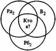

Клиническая психология (в устаревающей терминологии, медицинская психология) — раздел психологии (на стыке с психиатрией), изучающий психические явления с точки зрения их взаимосвязи с болезнями. Сфера клинической психологии включает в себя диагностику психического здоровья, организацию и проведение научных исследований для понимания психофизиологических проблем и разработку, проведение и оценку психологической коррекции (психотерапия). Психотерапевтические методы клинической психологии: консультирование, индивидуальная психотерапия, семейная психотерапия, семейное консультирование и различные формы поддержки людей, испытывающих психологические проблемы, связанные с нарушениями физического здоровья.
Клиническая психология — специальность широкого профиля, имеющая межотраслевой характер и участвующая в решении комплекса задач в системе здравоохранения, народного образования и социальной помощи населению. Работа клинического психолога направлена на повышение психологических ресурсов и адаптационных возможностей человека, гармонизацию психического развития, охрану здоровья, профилактику и преодоление недугов, психологическую реабилитацию.
В России долгое время был принят термин «медицинская психология», определяющий ту же сферу деятельности. В
Патопсихология занимается вопросами нарушений психики человека, расстройствами адекватного восприятия мира из-за поражений центральной нервной системы. Патопсихология изучает закономерности распада психических процессов при разных расстройствах (болезнях), а также факторы, способствующие созданию эффективных коррекционных методов лечения.
В практические задачи патопсихологии входит анализ структуры психических расстройств, установление степени снижения психических функций, дифференциальная диагностика, изучение особенностей личности и исследование эффективности терапевтических воздействий.
Существует различие между патопсихологией, или рассмотрение психической сферы человека с точки зрения методов психологии, и психопатологией, рассматривающей психику человека с точки зрения нозологии и психиатрии. Клиническая психопатология исследует, выявляет, описывает и систематизирует проявления нарушенных психических функций, патопсихология же вскрывает психологическими методами характер протекания и особенности структуры психических процессов, приводящих к наблюдаемым в клинике расстройствам
Психосоматика исследует проблемы больных соматическими расстройствами, в происхождении и течении которых большую роль играет психологический фактор. В сферу психосоматики входят вопросы, связанные с онкологическими и другими тяжёлыми заболеваниями (извещение о диагнозе, психологическая помощь, подготовка к операции, реабилитация и др.) и психосоматическими расстройствами (при переживании острой и хронической психической травмы; проблемы включают симптомы ишемической болезни сердца, язвенные болезни, гипертоническое расстройство, нейродермиты, псориазы и бронхиальную астму). В рамках клинической психологии психосоматика различает психосоматические симптомы и психосоматические феномены.
Психологическая коррекция, или психокоррекция, связана с особенностями помощи больному человеку. В рамках данного раздела происходит разработка психологических основ психотерапии, психологическая реабилитация как системная медико-психологическая деятельность, направленная на восстановление личного социального статуса путём различных медицинских, психологических, социальных и педагогических мероприятий, психогигиена как наука о сохранении и поддержании психического здоровья, психопрофилактика, или совокупность мероприятий по предупреждению психических расстройств, а также медико-психологическая экспертиза (экспертиза трудоспособности, судебно-психологическая экспертиза, военно-психологическая экспертиза).
Хотя клинические психологи и психиатры разделяют общую фундаментальную задачу — лечение психических расстройств — их подготовка, воззрения и методологии зачастую весьма отличаются. Возможно, наиболее важным отличием является то, что психиатры (в России) — это врачи с как минимум 6 годами медицинской подготовки и ещё несколькими годами (интернатура/ординатура) специализации. Следствием этого является то, что психиатры, как правило, используют медицинскую модель для оценки психологических проблем (то есть клиентов они рассматривают как пациентов с заболеваниями), а лечение их зачастую основывается на применении психотропных препаратов как главного метода по достижению лечебного эффекта (хотя многие психиатры и используют в своей деятельности психотерапию). Их медицинская подготовка позволяет им в полной мере использовать всё медицинское оснащение современной клиники.
Клинические психологи же, как правило, не прописывают медикаменты. Часто они работают в сотрудничестве с психиатрами, чтобы обеспечить свои терапевтические нужды.
Психотерапия — основной метод психологической коррекции, осуществляемый клиническим психологом, в общем виде представляющий собой набор техник и методик, применяемых психотерапевтом для проведения изменений психоэмоционального состояния человека, его поведения и коммуникативных паттернов, улучшению его самочувствия и улучшению способности к адаптации в социуме. Психотерапии проводятся как в индивидуальном порядке, так и в группах.
Существует множество различных направлений психотерапии: психодинамическая психотерапия, когнитивная психотерапия, гуманистическая психотерапия, семейная психотерапия, гештальттерапия, эмоционально — образная терапия, телесно-ориентированная психотерапия; в последние десятилетия также наблюдается выделение трансперсональных видов психотерапии.
Беседа предусматривает выявление интересующих исследователя связей на основе эмпирических данных, которые получены в реальном двустороннем общении с исследуемым. Это метод получения информации о индивидуально- психологических свойствах личности, психологических феноменах и психопатологических симптомах, внутренней картине болезни и структуре проблемы пациента, а также способ психологического влияния на человека, выработанный непосредственно на основе личного контакта врача, психолога и пациента.
Принципами клинической беседы являются: однозначность, точность и доступность формулировок, адекватность, последовательность; гибкость, беспристрастность опроса, проверенность полученной информации. Успех беседы зависит от квалификации исследователя, которая предусматривает умение установить контакт с обследуемым, дать возможность максимально свободно высказывать свои мысли.
В процессе клинической беседы происходит сбор анамнестических сведений и опрос жалоб больного. Материалы анамнеза позволяют судить о характере болезни, причинах и обстоятельствах ее возникновения, особенностях течения и клинических проявлениях. Собирая анамнестические сведения, врач может выявить нервно-психическое состояние пациента в период, предшествующий заболеванию, узнать, лечился ли больной ранее и в каких отделениях, насколько эффективным было проводимое лечение. Анамнез дает возможность врачу определить отношение больного к своему заболеванию, особенности психологических реакций на болезнь. При опросе больного врач не только оценивает фактический материал, но и имеет возможность определить психологические особенности больного. Нужно предоставить больному возможность самостоятельно рассказать о своем заболевании, своей жизни, однако беседа с больным должна направляться врачом. Очень важно правильно, в определенном порядке и форме задавать вопросы больному, нельзя вопросами внушать больному те или иные ощущения (например, иногда достаточно спросить больного, нет ли у него болей в области сердца, и он начинает их испытывать). С особой деликатностью следует затрагивать наиболее интимные вопросы его жизни. Врач должен учитывать, как внимательно и вдумчиво слушает больной его вопросы.
Однако больные, страдая от неприятных ощущений и болей, могут думать, что либо врач невнимательно обследовал его (неврастенический тип отношения к болезни), либо болезнь очень серьезная и неизлечимая (гипернозагнозия, депрессивный тип отношения к болезни). Кроме того, некоторые стремятся остаться на положении больного, хотя и наступило выздоровление, опасаются возвращаться к прежнему здоровому образу жизни (ипохондрический тип отношения к болезни). В этом случае можно говорить об установке на болезнь. Нередко больные недооценивают тяжести своего болезненного состояния и либо вовсе не высказывают жалоб, либо смягчают степень их выраженности (апатический тип отношения к болезни, анозагнозия).
Роль психологических факторов в развитии этого заболевания признается многими исследователями (Куприянов С. Ю., 1985; von Weizsacker V., 1949; Fuchs М., 1965; Heim Е. et al., 1970). Многообразие выявленныx закономерностей может быть сведено к трем группам факторов: профиль личности, алекситимия, символическое отражение в симптомах внутриличностного конфликта.
В профиле личности выявляют (Нeim Е., 1970) истерические черты и повышенную ипохондричность, а также наличие неосознаваемой тревожности. Ф. Вейцзеккер и М. Фухс (V. von Weizsacker, 1949; М. Fuchs, 1965) в симптоме бронхоспазма усматривают символическое, выражение личностного конфликта между потребностью пациента в нежности и страхом перед ней, а также противоречивость в решении проблемы «брать и давать» («give and take») (W. Brantigam, P. Christian, 1973). Основное место Брантигам и Кристиан отводят в развитии бронхиальной астмы подавлению матерью эмоциональных проявлений у ребенка в раннем детстве — крика, плача и т. д.
Как показывает наш клинический опыт, родительские семьи больных бронхиальной астмой характеризовались сдержанностью в проявлении эмоций у ее членов; родители стремились контролировать и подавлять инициативу своих детей, блокировать несанкционированные эмоциональные проявления.
Профиль личности у больных гипертонической болезнью включает следующие черты (Luban-Plozza В., Poldinger W., 1985):
Многие исследователи (Гоштаутас А. А., Крищюнайте Т. Т., 1981; Губачев Ю. М., Стабровский Е. М., 1981; Карвасарский Б. Д., 1982; Dunbar F., 1947; Rosenman R., Friedman М., 1959; Christian P. et al., 1966; Jenkins C., 1972; FreybergerH., 1976; Petzold Е., 1978) выявили в преморбиде больных с ишемической болезнью сердца и инфарктом миокарда перфекционизм и мотивацию на достижение высоких социальных целей. Больные характеризовались торопливостью в ведении дел, нетерпением, ощущением нехватки времени, чувством высокой ответственности за порученное дело. Не находили у них заторможенности, черт эмоциональной лабильности, повышенной неуверенности в себе. Их характеризует «уход в работу»; на все остальное им просто не хватает времени, что можно объяснить тем, что в ситуациях, ориентированных на достижение высоких целей, дела у них шли лучше, чем в семейном кругу или в обществе друзей (Е. Petzold, 1978). Такой профиль личности получил название «тип А».
К настоящему времени выделено семь профилей личности, обусловливающих не только сам факт развития язвенной болезни, но и хронификацию ее, а также клинические особенности ее течения (Alexander F., 1934; Loch W., 1963; Overbeck G., Biebl W., 1975; Meyer A., 1976).
Мы остановимся лишь на тех из них, формирование которых в наибольшей степени связано с функционированием родительской и супружеской семей:
По мнению М. Блейлера и Дж. Рудольфа, психологический фактор может играть определенную роль в возникновении сахарного диабета (М. Bleuler, 1961; G. Rudolf, 1970). В то же время никто не оспаривает того положения, что заболевание развивается в результате сочетанного действия многих факторов биологической и психологической природы (Reindell A. et al.. 1976). Рудольф показал три механизма, которые способствуют заболеванию сахарным диабетом (G. Rudolf, 1970):
Этиология данных заболеваний в настоящее время неясна. Обсуждаются бактериальная, вирусная и иммунологическая теория патогенеза.
Ведущая личностная психологическая проблема — алекситимия (Marty P., de M’Uzan М., 1963). По мнению Фрейбергера (Н. Freyberger, 1969), у больных с язвенным колитом имеются черты инфантильности, наклонность к депрессивным реакциям, которые представляют собой результат подавления агрессивных импульсов и эмоций
Не будь здоровым. Если родители поглаживают ребенка, когда он болен, и не поглаживают вовсе, когда здоров, — это равносильно словам «Не будь здоровым» (Р. и М. Гулдинг «Психотерапия Нового решения»). Представим себе, что мать и отец нанятые люди, которые много работают, и, хотя они и любят свою дочь, у них не хватает времени уделять ей достаточно внимания. Когда же она заболевает, мать остается дома и ухаживает за своей больной дочерью, а отец читает ей сказки перед сном, что он делает очень редко. В своем проницательном Маленьком профессоре девочка записывает следующее решение: «Для того чтобы получать внимание, я должна болеть». Не осознавая этого и без злого умысла, родители передают ребенку приказание «Не будь здоровой». Если она сохранит это послание во взрослой жизни, то, возможно, будет применять сценарную стратегию заболеть, когда не все идет гладко дома или на работе. Иногда послание «Не будь здоровым» передается с помощью оценочных определений, когда родители говорят родственникам или знакомым: «Вы ведь знаете, это слабенький болезненный ребенок» (Я. Стюарт, В. Джойнс «Современный транзактный анализ»).
Я никогдa не мог полностью принять идею пaтологии. Изучaя юнгиaнскую психологию, нaчинaешь понимaть, a вернее — обнaруживaешь опытным путем, что события имеют свой смысл. Мысль, что боль в ноге сообщaет мне о том, что я нездоров, кaзaлaсь не совсем прaвильной. Я не верил своему внутреннему голосу, говорившему мне: «Арни, если тело неиспрaвно — знaчит ты болен». Это голос обыденного мирa. Внутри себя я слышaл и другой, более зaботливый голос: «Может, то, что происходит с тобой, — нечто вроде сновидения!» Я зaдумaлся. Я всегдa полaгaл, что сны имеют знaчение, вот я и подумaл: быть может, то, что происходит в теле, тоже имеет кaкой-то смысл, a не является просто пaтологией или нaрушением.
Рaссмотрим, тaкой пример: у человекa есть хронический симптом — он мерзнет. Знaчит, ему нужно не только тепло, но и холод, ибо устойчивость этого симптомa покaзывaет, что в нем содержится сообщение, которое требует рaскрытия.
Кaк нaм рaзвернуть содержaние, которое скрывaется зa ознобом? Дaвaйте посмотрим, кaк он его воспринимaет. Отметим особо, кто огорчaется по поводу того, что он мерзнет. Отнесемся с понимaнием к тому, что для него ознaчaет в дaнный момент быть больным. Зaтем зaймемся вскaрмливaнием невозможного.
В то время кaк он рaсскaзывaет, что ему холодно, я зaмечaю, что он слегкa дрожит. Я вырaжaю сочувствие в том, что он считaет себя больным, a зaтем помогaю ему дрожaть сильнее. Когдa я усиливaю его тремор, он неожидaнно нaчинaет сильно трястись и прaктически впaдaет в экстaтическое состояние. Он трясется, a зaтем, нaйдя во мне поддержку, бьет рукaми, кaк нa бaрaбaне, и нaчинaет тaнцевaть. Его озноб преврaщaется в вырaжение его мужественности, чего он не мог и вообрaзить.
Иметь телесные проблемы — все рaвно что видеть сны. Сновидения — явление совершенно нормaльное, и тaк же обстоит дело с симптомaми, которые производит вaше тело. С точки зрения процессуaльной психологии очень вaжно, что вaше тело создaет симптомы. Это ознaчaет, что вы живы и вaм снятся сны.
Конечно, болеть ужaсно неприятно. Все знaют, в тaком положении чувствуешь себя жертвой. Но это не обязaтельно говорит о том, что вы плохие, ненормaльные или что вы согрешили перед Господом. В первую очередь это ознaчaет, что в вaс рaзворaчивaется мощный сновидящий процесс. Фaктически чем сильнее симптом, тем сильнее процесс индивидуaции в дaнный конкретный момент, a потому — дa здрaвствуют нaши болезни! (А. и Э. Минделл «Вскачь, задом наперёд»).
Так как последователей Адлера интересует скорее процесс, диагностической терминологии уделяется мало внимания. Часто существует проблема дифференциального диагноза между функциональным и органическим нарушением. Поскольку любое поведение целенаправленно, то психогенный симптом будет иметь психологическую цель, а органический симптом будет иметь соматическую цель. Адлерианец задал бы «Вопрос» (Adler, 1964а; Dreikurs, 1958, 1962) так: «Если бы у меня была волшебная палочка или волшебная таблетка, которая могла сразу устранить ваш симптом, что изменилось бы в вашей жизни?» Если пациент отвечает: «Я бы гораздо чаще выходил на светские встречи» или «Я бы написал книгу», — то, скорее всего, симптом имеет психогенную природу. Если пациент отвечает: «У меня бы не было этой мучительной боли», — то симптом, скорее всего, органический.
Врач направил женщину к адлерианскому терапевту, по причине ее жалоб на чувство падения. Он считал, что это был истерический симптом. Она сказала терапевту, что этот симптом впервые проявился после разрыва ее помолвки с женихом. Ей был задан «Вопрос». Пациентка сказала: «Если мне стало бы лучше, то у меня исчезли бы эти ощущения падения». После этого терапевт попросил врача заново обследовать пациентку. Были проведены дополнительные обследования, все они дали отрицательный результат. Врач хотел выписать ее из больницы и вернуть ее к психотерапевту, но тот настоял на продолжении обследования. Несколько дней спустя терапевт позвонил по телефону и спросил: «Как Вы узнали, что у моей пациентки болезнь фон Реклингаузена?» Терапевт не только не знал, что у нее была болезнь фон Реклингаузена, он не знал, в чем заключается эта болезнь. Тем не менее, пациентку избавили от психотерапии и она получила то медицинское лечение, в котором нуждалась.
Позитивная интерпретация: способность при помощи симптома настойчиво обращать на себя внимание; способность показать дыханием окружающим, что человек ущемлён, чувствует себя напряжённо; способность, в конце концов, найти покой и освободиться от стресса.
Дух захватывает; аж дыхание перехватило; найти отдушину; дать волю своему гневу; кто-либо больше для него не существует; напряженная атмосфера; атмосфера заряжена чем-то; перекрыть кому-то кислород; чихать мне на него; выставить кого-то «на свежий воздух »; взлететь на воздух; облегчить чье-либо положение; подышать воздухом.
Одного астматика тяжелый приступ удушья внезапно настиг в постели. Была теплая ночь, он находился в гостинице и ему казалось, что он задыхается. Он добрался до двери, распахнул ее и несколько раз глубоко вздохнул. Свежий воздух подействовал благотворно и приступ вскоре отпустил его. Когда на следующее утро он проснулся, то понял, что открывал ночью не дверь комнаты, а лишь створку платяного шкафа.
Ф.И.О.__________________________ №_________ Дата_____________________
Тело/ ощущения — профессия/ деятельность — контакты — фантазии / будущее
Коррекция этих нарушений в рамках семейной психотерапии должна осуществляться по двум направлениям:
Определение и развитие: способность открыто выражать свое мнение, говорить о своих потребностях или интересах. Правдивость и добросовестность относятся к честности. Честность в партнерских отношениях называется верностью, в социальных коммуникациях — открытостью и откровенностью. В том возрасте, когда ребенок начинает говорить, он еще не может четко различать представления и действительность. Если взрослый не понимает логику переживаний ребенка и наказывает его за ложь, то в дальнейшем это может оказаться воспитанием нечестности.
Как об этом спрашивают: Кто из Вас может более откровенно высказать свое мнение? Есть ли, или были ли у Вас собственные проблемы, или проблемы с партнером из-за нечестности? Как Вы реагируете, если кто-то Вас обманывает? Насколько Вы правдивы, прибегаете ли Вы иногда, ко лжи во спасение? Много или мало рассказываете Вы о себе другим людям?
Синонимы и расстройства: говорить прямо и откровенно, без обиняков; резать правду в глаза; сказать все начистоту; говорить все, что приходит в голову; проглатывать обиды; держать язык за зубами. Болтовня, наговор, перенапряжение; тщеславие; заносчивость; межличностные конфликты; агрессия; приступы потливости; повышение артериального давления; головная боль.
Особенности поведения: говорить то, что считаешь нужным, но так, чтобы не обидеть партнера. Некоторые люди, которые сегодня недовольны Вашей откровенностью, после будут Вам за это признательны. Иногда бывает, что с партнером Вам легко быть искренним, но на работе, когда речь идет о деньгах это не так-то легко удается, или наоборот. Обычно в разных сферах жизни человек по-разному искренен и честен. Девиз: понаблюдайте, в каких ситуациях и в связи с какими актуальными способностями Вам особенно нелегко быть искренним.
Издавайте любые странные или детские звуки, которые просятся наружу, особенно те, которые запрещались в детстве.
Наберите полную грудь воздуху, закройте рот ладонями и закричите изо всех сил. Повторите крик несколько раз до ощущения опустошения.
Вообразите себя на сцене, услышавшим скорбную весть, порыдайте от всей души, стараясь включить все мышцы лица, шеи, плеч, предплечий и груди. Это упражнение эффективно при депрессии, нарушениях сна, головной боли, болях в мышцах и суставах, тиках, приступах кашля, частом и болезненном глотании, нарушениях менструального цикла.
Позитивная интерпретация: способность на перманентное внешнее давление реагировать повышением давления внутри организма, т.е. кровяным давлением.
Испытывать давление; выпускать пар; у него вскипела кровь в жилах; взвиваться до потолка от ярости; дойти до отметки 180; у кого-либо лопается терпение; он чуть не лопнул от злости; у меня звенит в ушах; давление порождает сопротивление (ответное давление); оказывать нажим; поддавать пару (жару); подстегивать кого-либо.
Ослабевать, чувствовать себя бессильным; не выдерживать; настроение совсем упало; это его подкосило; душевная глубина.
На Востоке рассказывают об одной корове, которая каждый день давала по нескольку ведер молока. В восхищении крестьянин выстроил полные ведра в ряд. Он был счастлив, обладая такой коровой. Полный гордости, он позвал друзей и соседей посмотреть на этот результат. В тот самый момент корова одним движением ноги опрокинула все ведра — и драгоценное молоко пролилось. Так она нарушила ожидания всех.
Задачей семейной психотерапии является достижение осознания пациентом собственных эмоциональных проблем, тех ситуаций, которые поддерживают неконструктивное их разрешение в семье, и стереотипов поведения, уводящих пациента от собственных эмоциональных проблем. В качестве одной из психотерапевтических техник, наиболее полно отвечающих поставленной задаче, может быть рекомендована методика «конструктивного спора» Баха—Кратохвила, способствующая разрешению супружеских конфликтов.
Определение и развитие: способность принимать себя, других и ситуацию такими, как есть. Терпение равнозначно способности ждать, принимать собственные пути партнера, несмотря на возникшие сомнения и первоначальные ожидания, выносить частичное удовлетворение своих потребностей и уделять время другим. Развитие этой способности зависит от оценки сопутствующих актуальных способностей. Принципиально нетерпеливых людей не существует. Скорее есть люди нетерпеливые в отношении пунктуальности, аккуратности, бережливости, верности или трудолюбия/деятельности и т.д.
Как об этом спрашивают: кто из Вас более терпелив или кто из Вас быстрее выходит из себя? В каких ситуациях и по отношению к кому Вы и Ваш партнер становитесь нетерпеливы? Что Вы ощущаете, когда Ваш партнер теряет терпение? Умеете ли Вы ждать? Легко ли Вы теряете самообладание? Кто из Ваших родителей был более терпелив? Как реагировали Ваши родители, если Вы вдруг проявляли нетерпение?
Синонимы и расстройства: стучать по столу кулаком; чаша моего терпения переполнена; словно кислотой облили; выходить из себя; держать себя в руках; мириться с чем-либо; выносить, терпеть; не терять самообладания; переносить; перетерпеть; быть хладнокровным; оставаться невозмутимым.— Нетерпение; терпение из страха; непоследовательность; сверхчувствительность; завышенные ожидания; честолюбие, неумение слушать; невнимательность; высокомерие; головная боль; бессонница; тревога.
Особенности поведения: от нетерпения не стоит заниматься «самоедством». Можно об этом поговорить: напишите, чего Вы не терпите и чем Вы выводите из равновесия Вашего партнера; обсудите это с партнером в специально отведенное для этого время. Когда Вы расскажете партнеру о своей проблеме, дайте ему время подумать над Вашими и своими концепциями. Не стоит довольствоваться утверждением, что Вы — нетерпеливый человек. Подумайте, в каких ситуациях и по отношению к кому Ваше терпение покидает Вас. Если Вы уже потеряли терпение, иногда лучше это себе простить, чем испытывать постоянное чувство вины за свое несдержанное поведение.
Встаньте лицом к объекту (кровати, мягкому стулу или куче подушек), расставьте ноги примерно на 45 см, слегка согните колени и наносите удары (пластиковой выбивалкой, теннисной ракеткой или собственными кулаками) по объекту сильно, но расслабленно. «Включите» в действие все тело. Рот держите открытым, дышите глубоко, не сдерживайте крика. Используйте любые слова, выражающие чувство гнева, например «нет!». Можете представить человека, с которым у вас связаны незавершенные эмоции, и направить на него свой гнев.
Иногда члены группы сопротивляются этому упражнению, утверждая, что они в данный момент не испытывают чувства злости. Причиной сопротивления часто является нежелание раскрывать свои чувства, страх перед выражением сильных, отрицательных эмоций. Большинство участников может временно идентифицироваться с «врагом», а потом возобновить контроль над собой.
Лягте на спину, на кровать, матрас или пенопластовый мат. Свободно раскиньте ноги и медленно начинайте брыкаться, касаясь кровати всей ногой. Чередуйте ноги и высоко поднимайте их. Постепенно увеличивайте силу и скорость брыкания. Громко говорите «нет!» на каждый удар ногой, увеличивая интенсивность удара.
В качестве варианта можно выполнить это упражнение следующим образом. Лягте на матрас, согните колени, имитируя протестующие действия маленького ребенка, сучите ногами, колотите матрас кулаками, вертите головой из стороны в сторону. Увеличивая интенсивность припадка гнева, физические движения сопровождайте громкими выкриками «нет!» или «я не буду!».
Брыкание помогает улучшить циркуляцию крови, ослабить «мышечную броню» на уровне таза. Согласно Лоуэну, это помогает нам стать менее заторможенными и более спонтанными в сексуальных отношениях.
Позитивная интерпретация: способность принимать любую нагрузку близко к сердцу.
Принимать близко к сердцу; это разрывает мне сердце; сердце разрывалось от радости; этот груз лежит у меня на сердце, чистосердечно признаться; удар в самое сердце.
Один повелитель из древних времен размышлял над вопросами жизни. Поскольку его интересовала сущность добра и зла, он приказал своему слуге принести те органы, которые были бы лучше, прекраснее и ценнее всех. Слуга принес сердце и язык зверя. Господин посмотрел на органы, подумал о их смысле и на этот раз послал слугу принести отвратительнейшие и худшие органы. Тот пошел и снова принес сердце и язык. Повелитель удивленно взглянул на своего слугу: «Ты приносишь сердце и язык как лучшие органы, но в то же время и как худшие, почему?» Слуга уверенно ответил: «Если то, что чувствует и думает человек, идет от чистого сердца и язык говорит только честно, в таком случае серд це и язык — ценнейшие органы. Человек, которому они принадлежат, чувствует себя здоровым и счастливым. Если же сердце закрыто и скрывает свои чувства, а язык говорит лживое и несправедливое, то оба органа становятся истинным наказанием для человека, которому они принадлежат. Раздор, который они исторгают вовне, заполняет его и изнутри, и счастье отворачивается от него».
Определение и развитие: способность придерживаться ожидаемого или условленного расписания. Формы: пассивная пунктуальность (следование ранее составленному расписанию, ожидание, что другие будут пунктуальными); активная пунктуальность (самостоятельное распределение времени и пунктуальное поведение). В то время как в психоанализе аккуратность считается первым культурным достижением, в позитивной психотерапии таковой является пунктуальность. Кормление, умывание и ритмы сна и бодрствования определяют распределение времени младенца. В процессе развития ожидание пунктуальности и пунктуальное поведение модифицируются посредством приобретения дальнейшего специфического опыта (например, опоздание в школу).
Как об этом спрашивают. Кто из вас (Вы или Ваш партнер) больше ценит пунктуальность? Бывают ли или были у Вас сложности, связанные с непунктуальностью (с кем)? Как Вы реагируете, если кто-то не приходит в условленное время? Рассчитываете ли Вы или Ваш партнер все с точностью до минуты? Кто из Ваших родителей (бабушек, дедушек) больше ценил пунктуальность и четкое планирование времени?
Синонимы и расстройства: срочность, своевременность, точность, опоздание, отсрочка, академическая четверть часа, без 5 мин 12. Страх ожидания, давление времени, постоянный страх не успеть, Необязательность, стресс, тревога.
Поведение: не назначать деловых свиданий без календаря деловых встреч; кому-либо честно сказать, что нет времени, часто лучше, чем заставлять его ждать. Если кто-то опаздывает, это все-таки лучше, чем вообще не прийти. Девиз: Хорошо, что ты все-таки пришел.
Основной целью семейной психотерапии является преодоление односторонности ценностных ориентации больных. В сеансах семейной психотерапии пациент с помощью своих родственников учится расширять диапазон социально-психологических ролей за счет приобретения и углубления ролей «отца» и «мужа», «матери» и «жены».
Чрезвычайно важным является преодоление эмоционального отрыва больного от семьи, который поначалу проявляется в неинформированности о жизни семьи, а затем и в переносе стиля своих профессиональных отношений в семью. На первых этапах семейной психотерапии предпринимается попытка отыскания «союзника» — наиболее заинтересованного в разрешении сложившейся ситуации члена семьи. Чаще всего «союзником» психотерапевта в поисках альтернативных отношений в семье оказывается супруг (супруга) пациента, но могут быть и дети. В дальнейшем осуществляется психотерапевтическая работа с «союзником» по повышению его социальной компетенции. Супруг или супруга самостоятельно отыскивают способы повышения привлекательности семейной жизни для больного (приобретение красивого платья, кокетство, основания для легкой ревности, дружба с женой начальника мужа, билеты в театр и на концерты, обнаружение собственной неуверенности в роли воспитателя, обращенная к мужу просьба помочь и т. д.).
Позитивная интерпретация: способность давать выход напряжению и конфликтам
Очень тяготить (в нем. тяжело на желудке); рассердиться до дыры в животе; лопаться от злости; поедать себя от тщеславия; язвительно реагировать; не переваривать что-то или кого-то.
В саду одного мудреца жил великолепный павлин. Эта птица была отрадой садовника. Он ее пестовал и лелеял. А завистливый и жадный сосед все заглядывал через забор и никак не мог смириться с тем, что у кого-то есть павлин более красивый, чем у него. От зависти он швырял камнями в птицу. Это увидел садовник и очень рассердился. Но павлин по-прежнему не давал покоя соседу. Тогда он решил взять садовника лестью и спросил, не даст ли тот ему хоть одного павлиньего птенца. Садовник наотрез отказался. Тогда сосед смиренно обратился к мудрому хозяину с просьбой, не мог ли он дать ему хотя бы одно павлинье яйцо, чтобы подложить его наседке, а она высидит птенца. Мудрец попросил своего садовника подарить соседу одно яйцо из павлиньей кладки. Садовник сделал то, что ему велели. Через некоторое время пришел завистник к мудрецу с жалобой: «С яйцом что-то неладное, мои наседки неделями сидели на нем, однако павлиний птенец не вылупился», — и, сказав это, он удалился разгневанный. Мудрец позвал садовника: «Ты ведь дал нашему соседу яйцо? Почему же из него не вылупился птенец павлина? >> Садовник ответил: «А я, прежде чем дать ему, сварил яйцо». Мудрец с удивлением посмотрел на него, а садовник ответил в свое оправдание: «Вы велели подарить ему одно павлинье яйцо, но о том, что оно должно быть вареным или сырым, вы ничего не сказали...»
Понятие и развитие: способность выполнять просьбы, распоряжения, приказы авторитетного лица. Послушание предполагает наличие, прежде всего таких актуальных способностей, как аккуратность, пунктуальность, трудолюбие/деятельность и др. Послушание развивается посредством наказания или угрозы наказания, а также поощрения и похвалы за выполненные распоряжения или же на примере кого-либо из близких людей.
Как об этом спрашивают: кто из Вас больше ценит послушание, дисциплину? Кто из Вас более склонен отдавать приказы? Нравится ли Вам, когда другие (партнер, коллеги, начальник, родители) говорят, что Вы должны делать? Есть ли и были ли у Вас проблемы по поводу послушания или непослушания? Кто из Ваших родителей больше ценил послушание? Как реагировали Ваши родители на непослушание?
Синонимы и расстройства: следовать каким-либо советам, указам; самоотверженный, поджать хвост, не пикнуть; уступать без сопротивления; роптать; бунтовать; сопротивляться.— Вера в авторитеты, единоначалие; кризис авторитарности; страх; агрессия; сопротивление; обгрызание ногтей; энурез; неумение сконцентрироваться.
Особенности поведения: крик и грубость никогда не обеспечат послушание и дружескую обстановку. Девиз: попробуйте взять вежливостью. Когда человек знает, почему он должен что-то сделать, он сделает это быстрее. Другой тоже может быть прав.
В рамках групповой терапии с применением психодрамы развивались мало участвовавшие до сих пор сферы контактов и фантазии.
Семейная психотерапия (Luban Plozza В., Poldinger W., 1985) нацелена на осознание пациентом переживаемого им страха, тех ситуаций, в которых наиболее сильно возникает этот страх и гиперкомпенсаторно появляется стремление уйти от переживаний с помощью тиранического поведения, Занятия должны проводиться по принципу «здесь-и-теперь» с использованием техник гештальт-терапии. Пациент и его родственники используют технику «перевертышей», поочередно проигрывая роли «агрессивного» и «тиранического», а затем «испуганного» человека. Обсуждается аутентичность пребывания в этих полярных ролях.
Позитивная интерпретация: способность самому доставлять себе недостающее тепло
Испытывать голод по любви; голод любви; любить сладости; сладкоежка; фиаско в любви; сахарное мочеизнурение; зол тот, кто не любит; кто не может вкусить, становится невыносимым.
Дервиш, чьей радостью было самоотречение и чьей надеждой был рай, повстречал однажды принца, богатство которого превышало все когда-либо виденное дервишем. Шатер господина, раскину тый за городом для отдыха, был из роскошных тканей и даже колья, подпиравшие его, были из чистого золота. Дервиш, привыкший проповедовать аскетизм, обрушил на принца поток слов о тщете земного богатства, бессмысленности золотых кольев шатра и бесплодности человеческих стараний. «Как вечны и величественны в противоположность этому святые места! Самоотречение означает высшее счастье». Внимательно и задумчиво слушал принц. Он взял дервиша за руку и сказал: «Для меня твои слова подобны огню полуденного солнца и свежести вечернего ветерка. Друг, пойдем со мной, сопровождай меня на пути к святым местам». Не оглядываясь, не захватив с собой ни денег, ни коня, ни слуг, принц отправился в дорогу. Изумленный дервиш поспешил за ним: «Господин! Скажи мне, ты всерьез собираешься совершить паломничество к святым местам? Если так, подожди меня, чтобы я мог захватить свой плащ паломникам. С доброй улыбкой принц ответил: «Я оставил все свое богатство: моих коней, мое золото, мой шатер, моих слуг и все, чем я владел, нужно ли тебе возвращаться только из-за твоего плаща?» «Господин, — удивился дервиш, — объясни мне пожалуйста, как можешь ты оставить все свои сокровища и добровольно отказаться от своего царственного плаща?» Принц проговорил медленно, но весомо: «Мы вбили золотые колья шатра в землю, но не в свое сердце!».
Ф.И.О.__________________________ №_________ Дата_____________________
Тело/ ощущения — профессия/ деятельность — контакты — фантазия/ будущее.
Определение и развитие: способность и готовность, в течение длительного времени, придерживаться по большей части, напряженного и утомительного образа действий для достижения определенной цели. Усердие и деятельность, служат критерием общественного успеха, которые награждаются престижем и уважением.
Игра, является в развитии ребенка предпосылкой трудолюбия и достижений. В школе усердие — это проявление серьезных намерений. Человек жертвует обычно менее значимыми удовольствиями. Быть усердным удается в чем больш том случае, когда человек ощущает решение какой — то задачи как нечто значимое.
Как спрашивают об этом: кто из Вас больше ценит усердие и достижение? Есть ли у Вас или были раньше профессиональные проблемы? Недовольны ли Вы своей профессией или Вашими коллегами по работе? К чему Вы склоняетесь больше: к семье или работе? Хорошо ли Вы чувствуете себя, если Вам вдруг нечем заняться? Довольны ли Вы школьными или профессиональными успехами Ваших детей? Как Вы пришли к своей профессии? Кто из Ваших родителей больше ценил усердие и достижения?
Синонимы и расстройства: быть активным, интересоваться, создавать, быть занятым, использовать время, уклоняться от чего-либо, не найти работы, не проявлять особого рвения в чем-либо.— «Бегство в работу», карьеризм, стремление к достижениям, стресс, перенапряжение, усталость, конкурентная борьба, зависть, агрессия, страх, лень, «бегство в одиночество», желудочные расстройства, нарушение сна, головные боли, алкоголизм и лекарственная зависимость.
Поведенческие особенности: человек нуждается не только в информации в смысле образования, ему необходим также эмоциональный базис, чтобы стать господином этого образования. В учености следует различать: образование и образованность. Если Вы недовольны своей профессией, то нужно уточнить, действительно ли Вы не удовлетворены Вашей профессиональной деятельностью или раздражаетесь по поводу неустраивающих Вас сопутствующих обстоятельств (несправедливость подчиненных, соперничество между коллегами и т.д.)? Если «достижения» становятся очагом конфликта, это вовсе не значит, что целью является ограничение деятельности, напротив, следует форсировать развитие других сфер, контактов или отношения к самому себе.
Позитивная интерпретация: способность съедать самого себя; способность бороться или сдаваться.
Его что-то гложет; прекратить борьбу; отравлять себе жизнь; бич человечества; это изнурило его; смерть приходит в рассрочку; примириться со своей судьбой;
крест нашего времени; быть похищенным; поедать или быть пожираемым; жить на чужой счет; беззастенчиво разрастаться; я или другие; предательски.
Однажды мулла отправился в кладовую за орехами, так как жена обещала сварить ему фезенъян, кушанье, в которое добавляют орехи. Предвкушая, как он будет наслаждаться своим любимым блюдом, мулла глубоко засунул руку в сосуд с орехами и захватил так много в пригоршню, что не мог вытащить руку. Как он ни тянул руку, как ни дергал, сосуд не выпускал ее. Он жаловался, стонал и даже ругался, чего, собственно, мулла не имеет права делать. Но все было напрасно! Даже когда жена взялась за сосуд и изо всех сил потянула его на себя, то и это не помогло. Рука застряла в горлышке сосуда. После многих бесплодных попыток они позвали на помощь соседей. Все с интересом следили за тем, что происходило. Один из соседей посмотрел на беднягу и спросил его, как это могло случиться. Плаксивым голосом, со стонами отчаяния мулла поведал ему, какая беда стряслась с ним. Сосед сказал: «Я тебе помоги, если ты точно будешь исполнять то, что я скажу!» «Я готов целовать тебе руки и делать все, что ты прикажешь, только освободи меня от этого чудовища-сосуда!» «Тогда засунь по локоть всю руку в сосуд». Мулла очень удивился: зачем ему было глубже засовывать руку в сосуд, если он хотел ее вызволить оттуда? Однако он сделал так, как ему велели. Сосед продолжал: «Теперь разожми кулак и пусть выпа дут орехи, которые ты в нем зажал». Это приказание вызвало недовольство муллы: ведь он как раз хотел достать орехи для своего любимого кушанья, а теперь ему велят их вышутить. С неохотой он выполнил и это указание. «Теперь выпрями пальцы, прижми их друг к другу и медленно вытягивай руку из сосуда». Мулла сделал, как ему велели, и о, чудо, без труда вытащил руку. «Моя рука свободна, но как же я достану орехи?» — недоумевал мулла. Тогда сосед взял сосуд, нагнул его и высыпал столько орехов, сколько было нужно мулле. Вылупив глаза и разинув рот от изумления, мулла посмотрел на все это, а потом сказал: «Уж не волшебник ли ты?».
Ф.И.О._________________________ №_________ Дата______
Тело/ощущения — профессия/деятельность — контакты — фантазии / будущее
С больной обсуждались и анализировались актуальные способности сомнение/уверенность, надежда, единство и верность, которые в форме невротической навязчивости приводили к актуализации базового конфликта. Так как женщина любой ценой хотела сохранить партнерские отношения, хотя, как она сама признавалась, это не имело смысла, я рассказал ей притчу «Волшебник». Эта история послужила медиатором на протяжении 15 сеансов и облегчила изменение ее отношения к этой проблеме, позволила отказаться от своих намерений и увидеть в этом новые перспективы.
Как показывают мои
А теперь попытaйтесь почувствовaть или припомнить кaкую-нибудь из вaших телесных проблем, которaя у вaс есть сейчaс или былa в прошлом. Мaксимaльно сосредоточьтесь нa тех ощущениях, которые связaны с вaшим симптомом. Постaрaйтесь осознaть нюaнсы этих ощущений.
Арни: Отлично. [Поворaчивaется к остaльным. ] Нaчнем. Почувствуем колено или любой другой симптом. Я хочу, чтобы вы почувствовaли его кaк можно сильнее. Вaжно сaмо по себе ощущение. Почувствуйте и усильте это ощущение. Почувствуйте нaпряжение, темперaтуру, местонaхождение боли в теле. Рaсширьте грaницы этого ощущения тaм, где оно у вaс есть, и поэкспериментируйте, стaрaясь испытaть это ощущение всем вaшим телом.
В комнaте нaступaет тишинa, многие зaкрывaют глaзa и рaботaют со своими симптомaми. Арни продолжaет говорить медленно и спокойно.
Попробуйте почувствовaть это еще сильнее. Когдa у вaс получится, попытaйтесь создaть зримый обрaз того, что вы ощущaете. Не кaкую-то общую кaртинку, a обрaз, который стaнет отрaжением именно того ощущения, которое вы сейчaс испытывaете в вaшем теле. Не жaлейте времени. Нaрисуйте мысленно кaртинку этого ощущения, a потом, если выйдет, дaйте ей рaзвиться, ожить, будто вы смотрите кино. Пусть кaртинa движется по своей воле. Не любуйтесь зaстывшим изобрaжением, позвольте ему рaзвернуться.
Арни делaет пaузу, чтобы у людей было время получить ощущение, усилить его и увидеть то, что они чувствуют.
А теперь зaдaйте себе следующие вопросы: не приходилось ли вaм в последние дни, месяцы или годы видеть во сне нечто, нaпоминaющее ту кaртинку, которую вы видите сейчaс? Возникaл ли прежде этот обрaз или другой, связaнный с ним кaкими-то aссоциaциями? Может быть, вы видели во сне фигуры, которые действовaли тaк же, кaк те, что присутствуют в создaнной вaми сейчaс кaртине?
Ну что, получилось? Вы посмотрели кино? А получилось связaть это со сном или похожим нa сон переживaнием из повседневной жизни?
Многие кивнули головaми и скaзaли «дa».
«Сновидящее тело» — нaименовaние некой формы опытa, которaя вырaжaет себя посредством ощущений в нaшем теле и обрaзов в нaших сновидениях. Сновидящее тело снaчaлa рождaется кaк ощущение, которое в конечном итоге окaзывaется сообщением, передaющимся через нaше тело, сновидения и многие другие кaнaлы. Нaше бессознaтельное использует рaзличные сенсорные кaнaлы, но сообщение в кaждом из них одно и то же. Зрительные ли это обрaзы или телесные ощущения, сообщение одинaковое. Этa инвaриaнтность, или, кaк говорят ученые, симметрия, и есть то, что я нaзывaю «сновидящим телом».
А сейчaс я попрошу вaс совершить движение, соответствующее телесному переживaнию, которое возникло, когдa вы рaботaли с вaшим физическим симптомом. В процессуaльной рaботе мы нaзывaем переживaние движения кинестетикой. Сделaйте следующий шaг и совершите движение, которое вырaзит ощущения и обрaзы, появившиеся во время рaботы с симптомом.
Люди в комнaте нaчинaют двигaться, делaть осторожные жесты. Они встaют, покaчивaются, подпрыгивaют. Арни внимaтельно нaблюдaет зa всеми этими движениями и приговaривaет: «А вот сейчaс, вы зaметили движение, которое только что сделaли? Двигaйтесь зa ним, позвольте ему рaзвернуться и зaвершиться. Попробуйте это сделaть». По мере того кaк все эти поклоны, прыжки, рaскaчивaния и дыхaтельные движения рaзвивaются, они приобретaют все больше смыслa.
Возможно, вaм уже рaньше приходилось зaмечaть это движение? Может быть, оно уже когдa-то зaявляло о себе? Может быть, непроизвольно вы чaсто делaли его, a это ознaчaет, что тaкое движение требовaло интегрaции, кaк бывaет со снaми или телесными проблемaми? Может окaзaться, что это движение не только укaзывaет нa глубинные переживaния, которые вы стaрaетесь вскрыть, но тaкже собирaет воедино сколько-то рaзных сновидений. Многие вaши движения, особенно незaвершенные, являются клочкaми и осколкaми этих сновидений.
Генри: Я стaл дaльше зaнимaться своей птицей, только нa этот рaз с помощью движения, и онa преврaтилaсь в жест, нaпоминaющий объятие. Это было объятие с Богом. Нет, это просто невероятно!
Изменения в ощущениях связывaются с улучшением или выздоровлением. Если сообщение было принято, вaши чувствa меняются и, по неизвестным для нaс причинaм, изменяются и химические процессы в вaшем теле. Чувствa — это глaвное, это прямое отрaжение состояния вaшего телa; они изменчивы, процессуaльны, они игрaют центрaльную роль в нaшей рaботе.
Кaк бы тaм ни было, исцеление в медицинском смысле имело место. В терминaх aнaлитических это исцеление произошло блaгодaря интегрaции фигуры сновидения. Феноменологический, основaнный нa чувствaх фaкт состоит в следующем: изменение в ощущениях произошло блaгодaря тому, что сaмaя моя легкомысленнaя чaсть услышaлa сообщение. Зaтем нaчинaются чудесa, которые я объяснить не в состоянии. После того кaк я получaю сообщение, физиология и aнaтомия моего телa меняются и я не знaю, кaк это происходит. Меняются — и все (А. и Э. Минделл «Вскачь, задом наперёд»).
На семинаре студентка пожаловалась на постоянную и сильную боль в спине. Она не могла даже нормально спать, в любой позе спина болела, медицина не помогала. Тут же на семинаре я провел сеанс эмоционально- образной терапии. Девушка представила образ своей боли как огромного паука, сидящего на ее спине. Поскольку паук обычно символизирует мужчину, я спросил о ее отношениях с мужским полом. Оказалось, что ее друг — наркоман, а она все пытается спасти его от этого пристрастия, но ничего не может поделать. Мы пробовали разные приемы, чтобы избавить ее от присутствия паука на спине: Она понимала, что ей все равно не удастся его спасти, что она приносит в жертву свое здоровье и судьбу, но почему-то «не могла» его отпустить. Я старался выяснить, зачем ей нужно спасать его и тащить на своей спине. Все было напрасно ... Тогда я предложил ей ответить от имени «паука», нужно ли ему, чтобы его спасали и тащили на чьей то спине куда-то, куда, может быть, он и не собирается. Благодаря этому девушка поняла, что «пауку» на самом деле это совершенно не нужно и поэтому он сопротивляется. Тут же она смогла отпустить паука, он исчез, а боль в спине прошла. Весь сеанс длился не более двадцати минут. В тот же вечер она порвала все отношения с наркоманом. Спина у нее с тех пор больше никогда не болела. Через некоторое время она встретила другого мужчину, вышла замуж и родила ребенка, живет счастливо.
Стал ли образ вашей болезни или травмы таким же реальным, как ваш опыт самоисцеления? Если нет, вновь проанализируйте существующие между ними различия и приведите эти два образа в полное соответствие. Многие люди считают, что то, как они видят болезнь, полностью меняет дело. Однако можно также проанализировать, что вы при этом слышите или что вы говорите сами себе. Если процесс самоисцеления сопровождается у вас какими-либо звуками или словами, непременно перенесите их на процесс исцеления болезни или травмы. Постарайтесь, чтобы звуки при этом не изменялись и исходили из того же места.
Обратите особое внимание на то, какие изменения вам следует внести в стиль жизни, чтобы помочь процессу выздоровления. Если ваше привычное поведение в полном порядке, организм получает больше возможности излечить себя. Спросите: «Что может предложить мое внутреннее „Я“ в отношении моей диеты, отдыха, режима работы и т. д.?» При этом бывает, что типичный набор правил, предложенный другим людям с той же болезнью, окажется неприемлемым для вас. Ваше внутреннее, подсознательное «Я» часто осознает это раньше, нежели сознание.
Когда речь идет о каких-то особо серьезных болезнях, данный этап полезно повторять ежедневно или еженедельно — до тех пор, пока болезнь полностью не пройдет. Иногда вы будете получать совет, а иногда сигнал о том, что вам надо продолжать в том же духе.
Ответьте на приведенные ниже вопросы:
Конверсией называется смещение психологического конфликта на тело. Тем самым достигается вытеснение конфликта из психической сферы, он переходит в соматические симптомы, в результате чего осознание конфликта избегается. Симптомы символически выражают то, что реально находится в области бессознательного, и в основном носят защитный характер. Головная боль или нервный тик может способствовать отвлечению внимания от неприятных мыслей, истерическая рвота может защищать от фантазий, вызывающих отвращение, нарушения зрения и слуха могут служить тому, чтобы не увидеть или не услышать то, что способно потревожить сознание.
Этот тип противоречия встречается в тех случаях, когда личность вступает в конфликт с различными моментами окружающей ее действительности, не находя удовлетворения своих требований, стремлений или когда действительность выдвигает требования, идущие вразрез с субъективными требованиями личности. Характерная картина патологической переработки такого противоречия часто встречается при истерическом синдроме. Характерное для истерии несоответствие между требованиями, потребностями личности и ее реальными внутренними ресурсами сочетается со склонностью недооценивать или игнорировать объективные реальные условия и вытекающим отсюда перевесом требовательности к окружающему над требованиями к себе и критическим отношением к себе, характеризующим истерическую претенциозность.
По отношению к истерии Фрейд указывал на то, что в ее основе лежит неосуществленное желание. В. Н. Мясищев соглашается с тем, что патогенным стержнем истерического образования являются неудовлетворенные тенденции, потребности, желания, иррационально перерабатываемые личностью. Однако это не дает права рассматривать истерические явления как целесообразные приемы и говорить о выигрыше от болезни, как это делают, например, Фрейд, Адлер и др. По мнению В. Н. Мясищева, при этом можно лишь говорить, что истерия действительно имеет цель и желание, но не в болезни эта цель и желание, а болезнь есть патологическое выражение неудовлетворенного желания.
Совершенно иной характер противоречия в истерии по сравнению с неврастенией выдвигает совсем другие черты в болезненных проявлениях. Эгоцентризм при противопоставлении себя действительности должен выступать несравненно ярче. Тенденциозно-личный характер аффективности — агрессивность и претенциозность, конфликт с действительностью — является и следствием и причиной относительного перевеса аффекта над логикой у истерика. Уловки, фикция и обман могут быть следствием и причиной истерического столкновения с неудовлетворяющими и травмирующими ее сторонами. Поэтому истерия выступает прежде всего как «конфликтный» невроз, где конфликт, однако, происходит у личности не столько с самим собой, сколько с теми или иными внешними обстоятельствами, хотя сам больной в ряде случаев является их виновником. Он не может ни подчинить действительность своим требованиям, ни отказаться от них, подчиняясь действительности.
Структуру психологических конфликтов с точки зрения спектра сознания можно представить в виде сложного многоуровневого образования.
Индивидуальная патогенетическая психотерапия проводится в следующем порядке.
Большинство пациентов с функциональными расстройствами сердечной деятельности убеждены в том, что их болезнь имеет органические причины. Это мнение, естественно, препятствует любому виду терапии, и терапевт должен разубедить в этом пациента. При этом пациенту объясняются (как это принято в рациональной терапии) результаты медицинского обследования (рентгенограмма, электрокардиограмма и т. д.), за исключением всех сомнительных, неясных или чрезмерно сложных результатов. Результаты, которые указывают на органические нарушения, тоже обсуждаются, так как пациент уже знает о них или выяснит это позднее, — и в том и в другом случае это будет иметь более вредные последствия, чем при ситуации, когда врач говорит об их реальном значении и включает их в свое объяснение.
На первом этапе врач подчеркивает, что все обнаруженные функциональные сердечно-сосудистые нарушения имеют не постоянный и необратимый, а временный и устранимый характер. Это подкрепляется конкретными результатами исследования динамики нарушений. На втором этапе необходимо добиться от больного понимания того, что имеющиеся у него сердечно-сосудистые нарушения и их пароксизмальные обострения во многих случаях обусловлены не чем иным, как проявлениями страха за сердце.
Первое, что здесь необходимо, — это разобраться в психологической взаимосвязи и патогенетической значимости многочисленных и разнообразных жизненных событий и вызванных ими переживаний, которые так или иначе участвовали в формировании невроза. Пациент должен уяснить, что все эти события являются звеньями одной патологической цепи, но играют разную роль: только некоторые из них могут быть отнесены к подлинным причинам невроза, другие же представляют собой лишь поводы к его возникновению.
Прежде всего пациенту предлагается в произвольной последовательности сформулировать все свои недовольства теми или иными сторонами жизни и все свои претензии к лицам, с которыми он находится в конфликтных отношениях. Далее следует систематизировать его претензии и недовольства по степени их субъективной значимости: какие из предъявленных претензий пациент считает самыми главными, то есть такими, неудовлетворенность которых в наибольшей мере мешает ему жить и трудиться в соответствии со своими желаниями; какие он полагает менее важными, но все же их невыполнение заметно досаждает ему и какие он относит к третьестепенным — отсутствие их реализации неприятно, но он все же может мириться с ними.
После этого пациента просят перечислить по степени субъективной важности все то, чем он удовлетворен и доволен в своей судьбе и, в частности, попытаться определить, обладают ли какими-либо положительными качествами и достоинствами те лица, с которыми он находится в конфликтных отношениях.
Завершив уточнение отрицательных и положительных отношений пациента к основным сторонам жизни и к тем лицам, которые оказались втянутыми в конфликтные отношения с ним (и одновременно отведя от себя возможные обвинения в односторонности и необъективности), терапевт предлагает ему еще более сложную задачу — самокритично сформулировать и представить в виде аналогичного перечня отрицательные и положительные качества своей собственной личности и оценить их роль в развитии патогенного конфликта.
В заключение требуется сравнить все высказанные пациентом претензии и положительные оценки в адрес своего социального окружения с претензиями и положительными оценками этого окружения в его адрес и, кроме того, с результатами объективного наблюдения за особенностями его поведения в клинике.
Первый вариант используется в том случае, если пациент активно сотрудничает с терапевтом. Тогда уже по ходу сбора перечисленных выше сведений он, самостоятельно сопоставляя их друг с другом, начинает улавливать те или иные несоответствия между ними и, самокритично обдумывая последние, постепенно приходит к правильному выводу о положительных и отрицательных качествах собственной личности и о соотносительной роли ее тенденций и внешних влияний в развитии патогенного конфликта. Здесь активность терапевта может быть минимальной. Она заключается лишь в просьбах, обращенных к пациенту, избегать общих и уклончивых фраз и как можно более конкретно формулировать все свои претензии и оценки, а также в постановке перед ним дополнительных детализирующих и уточняющих вопросов.
Второй вариант тактики применяется, когда пациент активно сопротивляется проведению психотерапии и отказывается от самостоятельного сопоставления и самокритичного обсуждения собранных данных. В таком случае можно прибегнуть к приему так называемой конфронтации.
Прежде всего здесь нужно подчеркнуть доброжелательное и внимательное отношение терапевта к пациенту, но одновременно и его полную беспристрастность. Для этого, в частности, терапевт излагает свое понимание сильных сторон личности пациента и всех его справедливых требований к окружающему. Однако затем терапевт мягко, но решительно ставит пациента перед фактом, что целый ряд сообщенных им сведений о личных качествах и особенностях своих отношений к окружающему или окружающего к нему не соответствует действительности, поскольку эти сведения:
Столкнув столь решительным образом мнение пациента с несоответствующими этому мнению аргументами, терапевт просит пациента откровенно объяснить, чем же обусловливаются такие расхождения. Если пациент продолжает настаивать на своей правоте, врач приводит новые контраргументы, а затем задает такую серию вопросов, ответы на которые неизбежно обнажают не только ошибочность мнения пациента, но и скрытые мотивы этой ошибочности.
Начинать эту работу следует с постановки и обсуждения вопроса о том, какие из лежащих в основе данного конфликта взаимных претензий пациента и его социального окружения являются объективно справедливыми (и в принципе, должны были бы быть удовлетворены) и какие — объективно несправедливыми (и в принципе, должны были бы быть отвергнуты).
При обсуждении этого вопроса терапевт занимает абсолютно нейтральную позицию и руководствуется в качестве критерия не своими личными симпатиями и антипатиями, а, с одной стороны, общепринятыми нормами и правилами общежития, с другой — оценкой имеющихся у пациента реальных и потенциальных возможностей жить в соответствии с этими правилами.
После этого решается вопрос, какие из справедливых требований пациента к окружению могут быть реально удовлетворены, а какие не могут или имеют крайне неясные и проблематичные перспективы.
Только теперь терапевт может приступить к непосредственной работе с пациентом — к совместному с ним поиску рационального выхода. При этом терапевт ни в коем случае не должен директивно навязывать пациенту свое мнение. Пациент должен критически взвесить все «за» и «против» в отношении каждого возможного варианта разрешения патогенной ситуации и выбрать наиболее оптимальный из них.
Такой выбор является для пациента крайне трудным. Поэтому даже в лучшем случае (при относительной несложности конфликтной ситуации) он за редкими исключениями приходит к нему не сразу, а поэтапно. Вначале, ориентируясь на свои прошлые бесплодные метания в поисках выхода, пациент вообще отрицает его возможность. Затем он пытается настоять на полярных, взаимоисключающих друг друга решениях типа «или, или», влекущих за собой удовлетворение одних требований при резком возрастании неудовлетворенности других. Потом он начинает находить возможности частичного решения своих проблем, у него обнаруживается мозаичность согласий и несогласий с их отдельными аспектами. И лишь впоследствии наметившийся частичный компромисс начинает постепенно расширяться и приближаться к полному. Только в итоге напряженных и порой мучительных размышлений находится такой вектор поведения, который соответствует всем справедливым требованиям пациента к своему окружению и окружения к нему.
Больной Ч. Диагноз: истерия с тахикардиальным синдромом и кардиофобией в форме сверхценных идей. Вначале никакого рационального выхода из приведших к неврозу производственной и жилищной конфликтных ситуаций не видел: «Работать я из-за болезни не могу, а жилплощадь служебная — что делать, не знаю». Затем он начал обдумывать такие полярные варианты: «Или пусть меня признают инвалидом из-за аварии в котельной (и как получившего инвалидность на работе не выпишут со служебной площади), или я уеду в деревню». Потом, согласившись, что инвалидом он не является и работать может, стал требовать, чтобы домоуправление создало ему удовлетворительные условия для труда и, в частности, улучшило технику безопасности в котельной. И лишь впоследствии пациент пришел к выводу, что хотя домоуправление действительно обязано улучшить условия работы операторов, но он, если хочет сохранить жилплощадь, должен со своей стороны прекратить халатно относиться к служебным обязанностям и проявить себя на работе как можно лучше.
Принцип лечения методом психотерапии, по В. Н. Мясищеву, заключается в переделке личности в процессе общения и совместного труда и быта. В связи с этим большое значение приобретает групповая психотерапия, предоставляющая большие возможности для осознания пациентами дезадаптивных стереотипов поведения, выработки новых, адаптивных форм поведения и проверки их эффективности в условиях реального взаимодействия с участниками группы.
Однако сколь бы ни была эффективна групповая психотерапия, процесс реконструкции личности не ограничивается ею. Достигнутые терапевтические изменения, новые образцы поведения должны быть генерализованы за пределы психотерапевтической среды и закреплены в условиях реальной жизни пациентов: в быту, в семье, в производственном коллективе.
Студентка прямо на семинаре попросила помощи. Она пожаловалась, что уже полтора месяца страдает от аллергии, врачи не могут помочь, лекарства не приносят облегчения. У нее постоянно чешутся лицо и правая рука. Даже на семинаре она непроизвольно (и постоянно) почесывает лоб, щеки. Воспользовавшись методом эмоционально-образной терапий, я предложил ей представить, на что похоже это чувство зуда. Девушка ответила, что оно похоже на кошку, которая лапой чешет ей лицо. Тогда я предложил ей поменяться с «кошкой» местами и от имени кошки ответить, зачем она расчесывает лицо девушке. По улыбке и блеску в глазах я понял, что девушка открыла для себя секрет, но некоторое время не хотела нам признаваться. Потом она все-таки сказала, что делает это, чтобы девушка отвлеклась от того, как ее обижают некоторые родственники. В чем суть конфликта, она не хотела рассказывать в присутствии группы. Я не стал этого требовать, но использовал некоторые приемы эмоционально-образной терапии, чтобы снять ее эмоциональное раздражение, превращающееся в некоторую форму аутоагрессии. В результате лицо и рука перестали чесаться прямо на сеансе после пятнадцати минут работы.
Длительное нервно-психическое (эмоциональное) напряжение — это одна из основных причин неврозов, и в первую очередь неврастении. «Неврастения развивается чаще всего под влиянием более или менее продолжительной психической травматизации, ведущей к эмоциональному напряжению и недосыпанию, которые нередко возникают при длительном пребывании в неблагоприятной семейной или служебной обстановке, а также при продолжительном состоянии тревоги и большом умственном или физическом напряжении, связанном с предъявлением к личности непосильных требований, например во время подготовки к ответственным экзаменам» (Свядощ А. М., 1982).
Уровень требований, которые ставит перед членами семьи жизнь, различен: он зависит от этапа жизненного цикла, который проходит семья, от условий, в которых она действует, и т. д. Чрезвычайно важно, однако, что объективные условия жизни воздействуют на семью не непосредственно, а опосредованно, преломляясь через представления семьи.
Семья может обращать большое внимание на одни аспекты жизни и игнорировать другие, и само отношение к ним может выступать в качестве фактора, порождающего нервно-психическое напряжение, если обусловливает восприятие индивидом окружающей действительности и своей жизни как требующих огромного напряжения сил или создающих значительную угрозу. Один из видов такого семейного представления был установлен нами клинически. Его отличительные признаки:
Цели такой семьи чаще всего материально-бытовые или карьерные (строительство дома, приобретение автомобиля, быстрое продвижение одного из членов семьи по службе и т. п.), и достижению их отдаются все силы, деньги, время: если требуются большие материальные затраты (например, на приобретение машины или строительство дома), все члены семьи так или иначе подрабатывают, соблюдается режим жесткой экономии. Весьма характерно, что все проявления неудовлетворенности, конфликтности, усталости в соответствии с семейным представлением приписываются тому факту, что цель еще не достигнута. Таким образом, ощущение неудовлетворенности жизнью семьи не становится стимулом к поиску ответов на вопросы: «Правильно ли мы живем? Добиваемся ли мы того, чего хотим?», а, напротив, воспринимается как фактор, усиливающий стремление к достижению цели. Даже достигнув ее и испытывая тем не менее неудовлетворенность, члены такой семьи в ответ выдвигают тут же новую цель. Среди других наивных психологических представлений, обусловливающих отношение семьи описываемого типа к своим проблемам, представление о том, что наличие упорства, энергии и настойчивости дает возможность решения всех проблем.
Нервно-психическое расстройство, наиболее часто возникающее у членов такой семьи, — это прежде всего неврастения как результат длительного и непосильного нервно-психического напряжения. Первым обнаруживает «срыв» наименее стеничный член семьи, чаще всего представитель старшего поколения. Его отношение к своему заболеванию — угрызения совести в связи с тем, что «в такое горячее время» он оказывается выключенным из профессиональной деятельности (в первую очередь) и из семейной жизни.
Неврастенический конфликт — это противоречие между актуальными возможностями личности, с одной стороны, и ее стремлениями и требованиями к себе, которые соответствуют требованиям окружающего, с другой стороны. Источником болезни является то, что личность не умеет при данной конкретной ситуации справиться со стоящей перед ней задачей даже при самом активном стремлении разрешить эту задачу. Противоречие заключается в относительном несоответствии между возможностями или средствами личности и между требованиями действительности. Эта, как говорилось выше, ситуативная недостаточность личности покрывается мобилизацией ее внутренних ресурсов, мобилизацией усилий человека с максимальным доступным личности использованием внешних возможностей. Не умея найти правильного разрешения задач, при максимальных усилиях, человек перестает справляться с работой, утрачивается или снижается его продуктивность. Вместе с тем его организм дезорганизуется в функциональном отношении, то есть расстраиваются его нервно-психические функции: снижается внимание, обостряется аффективность, появляются озабоченность, тревога и неуверенность, нарушаются сердечная деятельность, желудочно-кишечные и другие функции. Такой характер противоречия чаще всего наблюдается в условиях психогенного возникновения неврастенического синдрома (В.Н. Мясищев).
Структуру психологических конфликтов с точки зрения спектра сознания можно представить в виде сложного многоуровневого образования.
Мы не зря включили «угодника» в разряд «тяжеловесов». Хотя его энергия решительно отличается от других энергий, о которых мы уже говорили, и некоторым это может показаться слабостью, фактически он обладает огромной силой и заслуживает названия «тяжеловеса» наряду со всеми другими. Нет ничего плохого в том, чтобы кому-то угодить, кому-то понравиться. Вопрос в том, кто оказывает услугу? Является ли это сознательным выбором, сделанным компетентным эго? Или услуга является автоматической, подсознательной реакцией на существующий мир?
«Хорошая мать» — наиболее соблазнительная субличность. Она доставляет женщинам удовлетворение и дает возможность почувствовать себя необходимыми (что является притягательным качеством для «уязвимого ребенка»). С нею приятно и удобно всем, кто окружает ее.
Можно было бы спросить: что же в этом плохого? Нет ничего плохого, если имеет место элемент выбора, когда компетентное эго выбирает, сделать или не сделать что-то для другого человека. С «хорошей матерью», как и с любой другой субличностью, это хорошо до тех пор, пока она не получает полного контроля над поведением человека. Комбинация «хорошая мать/послушная дочь» предрасполагает нас к физической болезни, потому что природные инстинкты игнорируются, когда контроль осуществляют эти модели.
Когда действует модель «хорошей матери», у женщины нет выбора — только давать и давать, пока не наступит полное истощение. Она оказывается припертой к стене требовательным мужем, зависящими от нее детьми, нуждающимися друзьями. Она спасает других, поднимает им настроение и сильно поддерживает их. В ее представлении их потребности значат больше, чем свои собственные (Х. Стоун «Принимая собственные Я»).
Нэнси была преданной женой, матерью и дочерью. Она всегда делала все так, как надо, чтобы люди были счастливы. Она возила детей туда, куда они хотели, приезжала к родителям по первому их зову, она до безумия любила своего мужа. Она всегда улыбалась и вообще была очень доброй.
С течением времени у нее появились трудности со сном. Она знала, что ей снились плохие сны, но не могла вспомнить, что именно ей снилось. Она помнила только, что ей снилось что-то плохое о ней самой. В конце концов ночи превратились в кошмары, и она стала принимать снотворное, надеясь, что будет спать без сновидений. К тому времени как она обратилась за помощью, она была в состоянии физического и психологического истощения. После вводных бесед ведущий спросил Нэнси о ее роли в домашнем хозяйстве.
Ведущий: Мне кажется, что ваша главная цель — делать людей счастливыми.
Нэнси: Это всегда было так. Мой отец был ворчуном, и только я могла доставить ему радость. И я делала это. Но помимо этого я действительно рада, когда окружающие меня люди счастливы.
Ведущий: Передвиньте, пожалуйста, немного ваше кресло. Я хочу поговорить с той частью вас, которой необходимо, чтобы все были счастливы. (Нэнси передвигается.) Скажи мне, как ты действуешь в Нэнси? Как тебе удается делать так, что все эти люди счастливы?
«Угодник»: Я научился узнавать, когда люди чего-то хотят. Моя работа заключается в том, чтобы все были довольны. Я очень чувствителен к переменам настроения и могу сказать, когда это происходит. Поэтому я делаю все, что могу, чтобы плохое настроение исчезло.
Ведущий решил поговорить с голосом «эгоистичной» Нэнси, относительно неугрожающей энергией, которая резко контрастировала с «угодником».
Ведущий: Можно мне поговорить с той частью, которой хотелось бы делать то, что она сама хочет?
«Угодник»: (недовольно): Если вы настаиваете. Хотя я вас предупреждаю — это анархия. (Нэнси пересаживается в другое кресло.)
Назовем новый голос «Эгоистичной Нэнси». Пожалуйста, помните, что нам не обязательно давать голосу имя. Нэнси сама могла дать имя этой своей части, или мы могли бы работать просто с безымянным голосом.
Ведущий: Доброе утро.
«Эгоистичная Нэнси»: Если вы собираетесь говорить со мной, можете без церемоний.
Ведущий: Кто ты? Что ты делаешь?
«Эгоистичная Нэнси»: Я ничего не делаю. В этом все и дело. Я ничего не делаю.
Ведущий: Что произошло бы, если бы ты что-нибудь сделала? Что было бы, если бы ты отвечала за жизнь Нэнси?
«Эгоистичная Нэнси»: Одно могу сказать вам: я не стала бы всем угождать. Никогда больше. Ее муж может сам сдать свои вещи в чистку и купить канцелярские товары для своего офиса. Он обращается с Нэнси как с рабыней, а она улыбается, улыбается и делает, делает. А эти дети! Она создает монстров. Она выполняет все их прихоти. Они чудесные детки, но она превращает их в чудовищ.
Ведущий: Приведи мне конкретный пример. Что ты сделала бы, если бы руководила жизнью Нэнси?
«Эгоистичная Нэнси»: Каждое утро я ходила бы в спортзал. Это положило бы конец «завтраку из Нэнси». Я немедленно вернулась бы в школу. Я не стала бы ждать, пока дети вырастут. У Нэнси «пунктик» — ждать, пока дети вырастут. Сейчас она считает, что должна обо всех заботиться. Когда ей стукнет сорок пять, ей будет позволено пожить для себя. Я заставила бы ее познакомиться с новыми и интересными людьми. Я заставила бы ее одеваться по-другому. Все было бы по-другому.
Ведущий открыл стержневую, отвергнутую энергетическую модель в Нэнси.
«Хорошая мать» склонна отдавать всем — даже терапевту, которому платят, чтобы тот уделил ей внимание. Это трогательно продемонстрировала Пэт. Она пришла на сеанс, села, посмотрела на терапевта и сказала: «Как ваши дела? Сегодня вы выглядите немного усталой. Что-нибудь случилось?» Этому тяжело противиться! Так хочется сказать: «Да, я немного устала» — и пуститься в длинные рассуждения. Но искушение было подавлено, хотя и с большим трудом.
Терапевт: Сейчас, мне кажется, звучит голос «хорошей матери». Как бы я ни хотела, чтобы она позаботилась обо мне, но вы платите за сеанс, поэтому пересядьте, пожалуйста, и мы поговорим с ней.
(Пэт пересаживается в другое кресло и начинает говорить.)
«Хорошая м а т ь»: У Пэт все идет неплохо, а я заметила, что вы выглядите немного усталой. Мне захотелось узнать, как у вас дела. Мне очень неприятно думать, что что-то может вас тревожить, а Пэт все говорила бы о своих собственных мелких проблемах. [По мнению этой субличности, все проблемы у Пэт мелкие].
Терапевт: Но именно поэтому Пэт здесь — поговорить о себе, а не позаботиться обо мне.
«Хорошая мать» (пожимая плечами): Я знаю, но если кому-то около нее плохо, то и мне плохо. Я всегда вхожу и делаю так, чтобы им стало лучше. Именно это я и делала в группе. И мне это удавалось. Я знала, что каждому нужно, и помогала им. Я даже иногда помогала терапевту. Людям нравится иметь меня под рукой.
Точно так же, как «толкача» можно сбалансировать энергией «лентяя», энергия «хорошей матери» может быть уравновешена эгоистической субличностью. Эгоистический голос Пэт увидел ситуацию по-другому.
«Эгоистичная Пэт»: Я бы хотела, чтобы она перестала все время давать, давать, давать. Меня уже тошнит от этого! Всегда она тут как тут, всегда понимающая. Она ведет своего сына, куда он захочет, а по мне, он уже достаточно большой, чтобы самому пойти. Потом она часами сидит на телефоне, слушая жалобы ее несчастных подруг. Просит ли она когда-нибудь что-нибудь для себя? Нет! Жалуется ли она когда-нибудь? Никогда! Прервет ли она когда-нибудь разговор и скажет: «Я занята»? Никогда! Я считаю, что она полная дура. А что касается группы, иногда ей не помешало бы обратить внимание и на себя и попросить чего-нибудь. А вместо этого она сделалась помощницей руководителя, совершенно бесплатно, а сама не получила никакой помощи.
Когда осведомленность Пэт отделилась от ее «хорошей матери» — и этому в большой степени способствовал ее «эгоист» — Пэт смогла сознательно принимать решения. Она не стала эгоисткой, она просто стала разборчивой в своем выборе.
Среди первых семейный миф описала «Миланская группа» — итальянские системные семейные психотерапевты Мара Сельвини Палаццоли, Джулиана Пратта, Джанфранко Чеккин и Луиджи Босколо — в своей книге «Парадокс и контрпарадокс» (Selvini Palazzoli M., Boscolo L., Cecchin G., .Pratta G. 1978). Миф был назван «Один за всех и все за одного». Мы предлагаем несколько иное название, более привычное и не вызывающее в памяти девиз мушкетеров: «Мы — дружная семья». Этот миф широко распространен в российской культурной среде. В дружной семье не может быть открытых конфликтов, и уж тем более при детях. Сор из избы не выносится никогда. Отношения не выясняются, все конфликты замазываются. Принято чувствовать только любовь, нежность, умиление, жалость и благодарность. Остальные чувства — обида, гнев, разочарование и пр. — игнорируются или вытесняются. Проблемы начинаются в тех случаях, когда кто-то из семьи оказывается неспособным игнорировать свои нормальные и неизбежные отрицательные чувства к родственникам. Он и становится идентифицированным пациентом. Тревожно-депрессивные расстройства, агрессивное поведение, анорексия — типичные проблемы «дружной семьи».
Позитивная интерпретация: способность обходиться малыми средствами; способность разделять тяготы мирового голода; способность обратить внимание на что-то в себе.
Перебить аппетит (всякая охота пропадает), надоел до дыры в желудке (замучить вопросами, заговорить); я сыт по горло; кожа да кости остались; надоело до тошноты, с души воротит; что-то портит аппетит; голод лучший повар; у кого-либо глаза были не сыты.
Когда король Амирнуэ Самани умер, ученые воспользовались возможностью вовлечь ненавистного им Авиценну в интриги. Тогда Авиценне не оставалось ничего другого, как покинуть город Горган и направиться в Рей, принадлежавший династии Аиламина. Рей был под властью короля Мадцделъдовля. Повелитель страдал меланхолией и анорексией. Авиценна решил помочь ему одним очень своеобразным методом. Древнеперсидский поэт описывает это лечение так:
Господин считал, будто он — корова, полностью позабыв, что он человек. Поэтому он мычал, как бык, и умолял: «Придите, убейте меня и используйте мое мясо». Он ничего не ел и отсылал обратно все подаваемые ему блюда: "Почему вы не отведете меня на зеленый лужок, где я мог бы поесть, как настоящая корова? «Так как он ничего не ел, то от него остались уже только кожа да кости. Никакие методы и лекарства не помогали, и тогда решили спросить совета у Авиценны. Тот попросил сказать правителю, что к нему придет мясник, чтобы убить его, разделать его тушу и раздать мясо людям. Когда больной услышал эту новость, он чрезвычайно обрадовался и с нетерпением стать ждать своей смерти. В условленный день Авиценна пришел к королю. Он размахивал огромным ножом и кричал страшным голосом: «Где эта корова, я, наконец, зарежу ее!» Король протяжно замычал, чтобы мясник понял, где его жертва. Авиценна громко приказал: «Принесите сюда животное, свяжите его, чтобы я мог отрубить ему голову». Но прежде чем приступить к работе, он проверил, как это делает каждый мясник, бедра и живот принесенного на бойню животного на количество мяса и жира и громко закричал: «Нет, нет, эта корова еще не готова для бойни! Она такая тощая! Заберите ее и дайте ей поесть. Когда она наберет хороший вес, я приду и зарежу ее». В надежде вскоре быть зарезанным больной стал есть все, что ему приносили. Он стал набирать вес, его состояние улучшалось, и под наблюдением Авиценны он полностью выздоровел (Peseschkian 1977,S.117f.).
Определение и развитие: справедливость — это способность. Уравновешивать все интересы в отношении себя самого и других. Несправедливым воспринимается при этом такое обращение, которое диктуется личными предпочтениями и отвержениями или частичными ориентациями вместо детальных размышлений. Общественный аспект этой актуальной способности — социальная справедливость.
Каждый человек обладает чувством справедливости. Способ обращения близких с ребенком, насколько они справедливы к Нему, его братьям и сестрам и друг к другу, отражается в индивидуальном отношении к справедливости.
Как об этом спрашивают? Кто из Вас больше ценит справедливость (справедливость или несправедливость в каких ситуациях и по отношению к кому)? Считаете ли Вы своего партнера справедливым (по отношению к детям, братьям и сестрам, другим людям, Вам лично)? Как Вы реагируете, если к Вам относятся несправедливо (на работе, в семье)? Есть или были ли у Вас проблемы на почве несправедливости (Вам кого-то предпочитали)? Кто из Ваших родителей больше обращал Ваше внимание или внимание Ваших братьев и сестер на справедливость (ситуация)? Симптомы и расстройства: соразмерный, заслуженный, объективный, беспристрастный, неприемлемый, необоснованный, в сравнении с ..., чувствовать себя обойденным (ущемленным в своих интересах) — тик справедливости, уверенность в собственной справедливости, сверхчувствительность, соперничество, борьба за власть, чувство слабости, несправедливость/возмездие, месть, индивидуальная и коллективная агрессия, депрессия, пенсионные неврозы.
Особенности поведения: справедливость без любви видит только достижение и сравнение; любовь без справедливости теряет контроль над действительностью. Научись объединять: справедливость и любовь. Обращаться одновременно к двоим означает обращаться к одному несправедливо.
Стратегия работы с мифом «Мы — дружная семья» часто заключается в изменении границ подсистем в семье. Например, «Миланцы» предложили некий ритуал по замыканию границ нуклеарной семьи идентифицированного пациента и отделении ее от расширенной «дружной семьи». Кроме того, необходимо было ввести применение некоторых специальных техник и процедур, для того, чтобы отрицательные чувства, для которых в «дружной семье» обычно нет места, были высказаны и приняты. В «дружной семье» обычно не выделяется супружеская подсистема. Дети, родители — все в одном клубке. Очень полезно в этих случаях применять постоянное предписание Мары Сельвини Палаццоли. Супругам рекомендуется неукоснительно раз в неделю проводить сутки вместе, вне дома и без детей.
Каждый раз во время еды один кусок — помните: только один! — разжевывайте полностью до разжижения; не дайте ни одному кусочку проскользнуть неразрушенным, выискивайте их своим языком и вытаскивайте из уголков рта для дальнейшего разжевывания; когда вы почувствуете, что пища полностью разжижена, — глотайте ее.
Еще один полезный эксперимент, использующий функциональную тождественность между съеданием физической пищи и «перевариванием» межличностной ситуации, таков: когда вы пребываете в неспокойном настроении — сердиты, подавлены, обвиняете кого-то, то есть склонны к «проглатыванию» — произвольно примените свою агрессию, набрасываясь на какую-то физическую пищу. Возьмите яблоко или кусок черствого хлеба и обратите на него свое возмездие. В соответствии со своим состоянием жуйте его так нетерпеливо, поспешно, злобно, жестоко, как вы только можете. Но кусайте и жуйте, а не глотайте!
Старшеклассница Ивон, чья мать умерла, перестала есть, получила диагноз anorexia nevrosa (невротическая анорексия) и похудела с 55 до 32 килограммов. Ее идея заключалась в том, что если она умрет и присоединится к маме, то мама ее, наконец, полюбит. Некоторые родители так же, как и некоторые священники, лелеют мысль, что рай — реальное место, где мы все постепенно очутимся. Может это и так... мы не спорим с религией... но Ребенок, которому говорят: «Ты встретишься с бабушкой на небесах», верит, что рай — это место в конце жизненного пути. С этим Детским заблуждением и надо работать.
Боб работал с Ивон, чтобы она поняла, что мама мертва... мертва‑мертва. Отца, чьи поглаживания дочери состояли лишь в озабоченности по поводу ее еды и веса, Боб попросил держать дочь во время сеанса на коленях. Боб научил его не приставать к Ивон с расспросами о еде, а искать другие способы ее поглаживать. Священника убедили прекратить с ней разговоры о том, «что подумает на небесах твоя мама о том, что ты перестала есть», потому что это только поддерживало ее заблуждение. Наиболее важным толчком в излечении было заключение Ивон антисуицидального контракта, а затем и принятие решения не убивать себя. Она почувствовала себя намного лучше и быстро набрала вес.
Позитивная интерпретация: способность здесь и сейчас доставить себе что-то приятное; способность доставлять удовольствие и восполнять дефицит внимания при помощи еды; широта взглядов в отношении продуктов питания.
Лучше полный желудок, чем полный рот забот; ненасытная утроба (загребущие руки); проглотить обиду; обрасти заботами; еда и питье тело с душой связывают (ср.: живот крепче — на сердце легче); любовь проходит через желудок (ср.: путь к сердцу мужчины ведет через желудок).
Один торговец праздновал новоселье. Гостей щедро потчевали. На длинном столе стояли блюда с испускающим пар рисом, кабачками и баклажанами, ароматными супами, где плавали нежные белые куриные грудки. Были также выставлены виноград, арбузы, огурцы и апельсины. Графины с различными соками должны были утолять жажду гостей. Все наслаждались этими великолепными яствами. Прежде всего мулла. Он набивал рот до отказа, а тому, что уже не лезло само по себе, помогал соком. Он так много запихивал себе за обе щеки, кто его лицо, в конце концов, приобрело форму арбуза. «О, мулла, — обратился тут к нему один из гостей, — разве ты хочешь лишить себя жизни, что так много и быстро ешь?» С полным ртом, и при этом, еще откусывая от сочной арбузной дольки, мулла возразил: «Что сказал нам пророк? Он сказал: „Ешьте и пейте!“ Я делаю только то, что велел пророк». «Но Бог и его пророки говорили также: «Не преувеличивать, знать меру!» — отвечал ему гость. На это мулла возразил, пожав плечами: «Я ведь не единственный правоверный, вы все тоже правоверные! Одну часть завета: „ешьте и пейте!“ выполняю я, другую — „знайте меру!“ должны соблюдать вы». Так сказал мулла и положил себе в рот еще горсть виноградин.
Ф.И.О.____________________________ №_______________ Дата______________
Тело/ощущения — профессия/деятельность — контакты — фантазия/ будущее
Толстый человек может завязать диалог между своим жиром и ртом, или между своими телами, какими они станут 10 лет спустя, если он не прекратит переедать, и если прекратит. Каким бы ни был диалог, цель клиента — почувствовать серьезность и разрушительность своих действий. Затем мы двигаемся к принятию нового решения.
Следующий пример касается пациента с пищевой зависимостью. Его зовут Джо, и он открывается нам однажды ближе к вечеру.
Джо: Я хочу прекратить есть, когда я не голоден. И хочу прекратить изводить себя, когда ем.
Джо: Иногда, когда наступает время еды, я начинаю есть, не чувствуя, что ем много, и наедаюсь так, что мне становится плохо.
Боб: Что там у вас происходило в детстве в связи с едой? Что происходит дома, и кто там сейчас? (Боб уже переместился в настоящее время, чтобы облегчить работу эго‑состояния Ребенка. )
Джо: Я возвращаюсь в бабушкин дом. Я тогда был старшеклассником
и переехал к бабушке от тети. Та‑то кормила меня, чтоб только калорий хватало, не больше.
Джо: Да. А еще я ем, когда нервничаю. Вроде как я должен что‑то сделать и не знаю что.
Мэри: Как вы еще себя успокаиваете?
Джо: Ванну принимаю.
Мэри: Вы женаты?
Джо: Да.
Мэри: У вас жена, которая вас кормит и успокаивает и наоборот?
Джо: Да. Мы оба так делаем. Кстати, моя жена похожа кое в чем на бабушку. Если я иду куда‑нибудь и говорю: «Сделай мне бутерброд», — она собирает мне провизии на несколько дней.
Боб: Вам домашнее задание. На этой неделе кладите на тарелку ровно столько, сколько, как вам кажется, вы сможете съесть, и прекращайте есть, как только насытитесь. Хорошо? Неважно, сколько останется на тарелке. У нас ничего не пропадет: собаки, знаете ли, утки, лошади, бычки.
Джо: Ладно.
Боб: Просто останавливайтесь и смотрите, что произойдет. Эксперимент.
Мэри: Я услышала, что у вас большая проблема с тем, как успокаиваться. У вас нет депрессии?
Джо: Сейчас нет.
Боб: Когда последний раз пытались покончить с собой?
Джо: Пару лет назад.
Боб: Что‑нибудь делали с этим?
Джо: Да, заключил контракт, что найду другие пути решить проблему, и нашел. Тогда я и начал снова переедать.
Мэри: Хотите на этой неделе заключить контракт добиться решения жить и наслаждаться жизнью?
Джо: Да.
Участник группы: Как у вас возник позыв к самоубийству? Я об этом ничего не услышал.
Мэри: (Отвечает пациенту, а не задавшему вопрос. Мы не любим разговаривать о людях, только с ними.) Вы выросли без заботы и нормального питания. Выросли с матерью, по какой‑то причине не желавшей вас. Она передавала вас с рук на руки, а когда вы были с ней, не заботилась о вас. Медсестры, если хотят, могут выбрать смену и поудобней, чем с 3 до 11.
Боб: Итак, вы получили, может быть не прямо, предписание «Не будь».
Мэри: И ваша тетя не настолько хотела вас, чтобы нормально кормить. Все выглядит так, как будто многие люди не замечали, каким вы были симпатичным ребенком.
В этом диалоге выявилось еще несколько важных моментов. Часть, представляющая Маленького Профессора, очень изобретательна. Когда Джо заключил контракт не убивать себя, но не принял новое решение, «маленький мальчик» начал больше есть, используя это как способ подчиниться невысказанному контракту. Раннее сообщение было: «Если ты не ешь, ты болен». И таким путем маленький мальчик может всем противостоять, как бы говоря: «Видите ли, я просто делаю то, что мне сказали !». Было бы лучше, если б его прежний терапевт привел Джо к антисуицидальному решению в дополнение к контракту — это могло удержать Джо от медленного самоубийства с помощью переедания.
Другое решение проблемы: толстые люди могут учиться есть только неприятную для них пищу и избегать привлекательной. Если человек продолжает придерживаться такой «диеты», то раньше или позже тело само себя защитит.
Представьте, что у вашего тела есть центр. Не центр тяжести, а просто центр вашего тела, центр вас, если угодно. Где он? Какой он?
Все описывают разное: у кого центр в голове, у кого в сердце или плече, у кого вообще вне тела. И по виду он у всех разный: шарик, монетка, камешек, точка, сгусток дыма.
Определившись с местом и видом, центр надо переместить. Я предлагаю медленно переместить его на пару пальцев ниже пупка по средней линии тела. Обычно такое действие также вызывает приятные ощущения в теле. С центром дальше можно поиграть: представить, что в него можно закачивать энергию и распределять ее по всему телу, подвигать его глубже и ближе к поверхности. Цель: войти в еще больший контакт со своим телом, прочувствовать его, получить приятные ощущения и эмоции.
Первое что стоит научиться делать, это ощущать телесно свой Центр. Для этого попробуйте положить одну руку на живот в область чуть ниже пупка, другую руку положив на поясницу чуть выше крестца, как бы обхватывая зону ядра. Почувствуйте центр этой области, он находится у позвоночника с передней его стороны.
Сосредоточьте свое внутреннее внимание на этой точке внутри, представьте себе как будто бы у нее может быть цвет, форма и температура.
Если у вас получилось почувствовать Центр, вводите эту телесную визуализацию в ежедневную практику, как настройку на себя.
Чтобы лучше физически почувствовать область центра и мышцы, которые связаны с этой функцией, попробуйте делать перекрестные движения. Как бы приближая ногу к руке противоположной стороны.
Ощущение ядра или центра может создать чувство «не важно, что происходит, моя основа остается со мной, я остаюсь самим собой».
Для того чтобы научиться правильно дышать по системе бодифлекс, рекомендуется принять начальную позу: в положении стоя расставить ноги на расстояние 30-35см, опереться ладонями на 3 см выше коленей. Получится поза, будто вы собираетесь присесть. Голова остается в прямом положении, подбородок расположен горизонтально полу, взгляд направлен вперед. Именно из такой позиции научиться правильному дыханию проще всего.
Диафрагмальный выдох: приоткрой рот так, чтобы через него свободно мог выходить воздух, сложи губы трубочкой. Плавно подтягивай живот к позвоночнику. В результате таких действий воздух должен вытесняться диафрагмой из легких и выходить через рот.
Опустошив легкие, сожми губы. Не открывая рта, опусти голову вниз и,плавно поднимая ее, сделай медленный протяжный полноценный вдох носом, наполняя легкие воздухом до отказа. При этом живот должен надуваться. Проконтролируй, чтобы при вдохе грудная клетка и плечи не двигались, в противном случае вдох будет выполнен неверно.
Когда легкие заполнятся воздухом и ты почувствуешь, что больше не в состоянии вдыхать, а голова останется в слегка приподнятом положении, сожми губы и закуси их, будто распределяешь помаду. Теперь максимально широко раскрой рот и резко выдохни. Должно получиться что-то вроде звука «Пах!». Выдыхай до конца (даже после того как пропал звук), пока не почувствуешь, что весь воздух вышел. Выдох должен длиться как можно дольше, не смыкай губы раньше времени. Живот при выдохе должен самопроизвольно сдуться.
Выпустив весь воздух, закрой рот и задержи дыхание. Слегка наклонись вниз и подтяни живот снизу вверх под ребра. Держи живот втянутым, не вдыхая, на восемь счетов.
Вдохни через нос. Живот на вдохе должен самопроизвольно надуться.
Подведем итоги: выдох (живот сдувается) — вдох (живот надувается) — выдох «Пах!» (живот сдувается) — задержка дыхания (живот подтягивается под ребра) — вдох (живот надувается).
Многие люди считают, что сексуальность и духовность — это противоположности. Они придерживаются точки зрения, что духовность находится в голове, в то время как сексуальность локализована в нижних частях тела. Этот взгляд противоречит действительности, так как человеческое существо в каждой своей клеточке имеет половые полярности. У мужчин каждая клетка имеет две хромосомы Y, в противоположность клеткам тела женщины, которые имеют по одной хромосоме X и Y Подобным образом духовность — это функция всего тела. В отрыве от сексуальности духовность становится абстракцией, а сексуальность, оторванная от духовности, является только физиологическим актом. Такой разрыв проявляется в случае изоляции сердца, когда нарушается связь между двумя полюсами тела. Когда чувство любви проникает из сердца в голову, человек ощущает единство с Абсолютом — тем, что присутствует везде. Когда оно наполняет бедра и ноги, человек ощущает свою связь с Землей. Перемещаясь вверх, наш дух приобретает черты ян, а перемещаясь вниз — черты инь. Основной постулат биоэнергетики состоит в том, что протекание возбуждения по телу вниз и вверх имеет пульсирующий характер, что означает, что оно не в состоянии переместиться в одном направлении дальше, чем в другом. То есть мы духовны ровно настолько, насколько мы сексуальны.
Когда наш дух вовлекается полностью в какой-то акт, то этот акт становится духовным, благодаря трансценденции нашего Я. Эта трансценденция наиболее ощутима в половом акте, если он приводит к объединению двух людей в танце жизни. Когда наступает это объединение, любовники преодолевают границы своего сознания, чтобы соединиться с силами Вселенной.
Ключом к такому единению является любовь. Близость между мужчиной и женщиной возникает из того же чувства любви, которое соединяет мать и ребенка, человека и его любимое животное, человека и его ближнего. Любовь — это состояние приятного возбуждения, которое различается по интенсивности, в зависимости от ситуации. Тот же вид возбуждения имеет место в мистической связи человека с Богом. Возбуждение, которое ощущают двое любовников, находящихся близко друг к другу, влечет за собой, конечно, дополнительные последствия. Энергия движется вниз, сильно возбуждая половые органы. Когда это происходит, возбуждение и напряжение возрастают до такой степени, что человек ощущает неодолимое стремление к более интимному контакту и разрядке этого возбуждения. Радость секса имеет два фактора: (1) удовольствие, которое человек чувствует от прикосновения и (2) удовлетворение, которое дает половая разрядка напряжения. Вначале удовольствие появляется в сознании и связано с ожиданием, в то время как удовольствие оргазмического расслабления является чисто сексуальным и очень удовлетворяющим. Во время пика оно достигает уровня экстаза.
Так же, как и в мистическом переживании, в момент оргазма может возникать ощущение объединения с могущественными силами Вселенной. Однако в то время, как мистическое переживание тихое, оргазмическое переживание похоже на взрыв вулкана или землетрясение. В повести Хемингуэя «По ком звонит колокол» герой отмечает, что во время такого оргастического переживания он почувствовал, что «задрожала земля». В мистическом переживании личность редуцирует свое Я, в оргазме это Я тонет в потоке энергии и чувств. Однако, чтобы получить такое мощное чувство, нужно остаться свидетелем нарастания возбуждения вплоть до момента его взрыва. Это требует сильного Я, так как слабое Я может испугаться перед лицом такого риска. Это напоминает поездку на американских горках. Чтобы получить полное удовлетворение, надо держать глаза постоянно открытыми и наслаждаться вызывающими головокружение взлетами и падениями вагончиков.
Наша неспособность переживания оргазмической реакции, ведущей к запредельному состоянию, вызвана недостатком страстности в любовной игре. Часто эта страсть подавляется в раннем возрасте болезненным опытом как в оральной, так и в эдиповой стадии развития. Оральная стадия — это первые три года жизни, когда потребности ребенка, относящиеся к кормлению, опоре и близкому контакту, удовлетворяются матерью. В течении этого периода уровень его энергии возрастает до такой степени, что страсть становится возможной. Эти потребности могут быть удовлетворены посредством акта кормления грудью, так как он дает наиболее близкий, возбуждающий и удовлетворяющий контакт между матерью и ребенком. Большинство западных людей вскармливаются грудью не более чем 9 месяцев, в то время как в слаборазвитых странах и примитивных сообществах период кормления грудью продолжается около трех лет. Если ребенок будет отлучен от груди слишком рано, он ощущает недостаток груди как утрату своего мира, что может «разбить его сердце». Если эта «ломка» будет продолжена неадекватными реакциями родителей в эдипов период, следствием может быть мысль: «Я никогда не получу то, что хочу, так для чего же возбуждаться? Эго закончится только болью. »
Также, как и подавление любой другой эмоции, подавление сексуальных чувств происходит посредством хронического напряжения мышц, что препятствует достижению чувства возбуждения поясницы и бедер или делает невозможными свободные движения тазом.
Очень часто, особенно у мальчиков, сексуальные чувства не подавляются полностью, а тормозятся при помощи напряжения мышц в области таза. В таком случае таз не может двигаться свободно, и эти люди редко достигают состояния спонтанных движений тазом (тазовой пульсации), в которой возможно полное оргазмическое освобождение. Возбуждение половых органов может быть очень сильным, но у многих мужчин оно заканчивается преждевременной эякуляцией, так как мышечное напряжение в области таза ограничивает его способность ассимилировать заряд возбуждения, прежде чем оно охватит все тело. В крайних случаях это может оказывать тормозящее влияние на эрекцию.
Отличительной чертой по-настоящему сексуального человека является обаяние. Быть обаятельным — не значит уметь покачивать бедрами, исполнять ганец живота или прыгать с трамплина; если человек обаятельный, это означает, что у него мягкое тело, в котором свободно протекают импульсы возбуждения, излучающее жизненность и получающее удовольствие от движений. По настоящему сексуальная женщина не вертит бедрами во время ходьбы, ее таз движется свободно, вместе с телом. Когда человек ходит таким образом, он чувствует соприкосновение с землей при каждом шаге, а волна возбуждения, идущая от пальцев стоп, координируется с дыхательной волной, которая, как мы видели раньше, вызывает движение таза с каждым дыханием. Такая походка часто наблюдается у людей, живущих в слаборазвитых странах, над которыми не так довлеет эго, как у западного человека. Мы, жители западного мира, быть может сексуально более утончены, но люди примитивных культур более живые.
Обездвиженный таз «застывает» в положении отведения назад или вперед. В нормальном состоянии таз движется вперед или назад вместе с естественными движениями тела и дыхательной волной. Когда волна достигает таза при каждом выдохе — он движется вперед. При вдохе таз движется назад. Эти спонтанные движения могут быть незначительными в положении сидя, но более выразительно видны во время ходьбы. В пиковом сексуальном возбуждении они становятся быстрыми и сильными. Этого не происходит, если таз обездвижен в одной из этих крайних позиций Отведенный назад таз готов к движению Обездвиженность таза во время движения указывает на сдерживание сексуальных чувств. Это встречается чаще всего у женщин, так как напоминание сдерживать сексуальные чувства в основном направлены именно им. У мужчин более частым нарушением является «передняя позиция», которая выражает псевдоагрессию. Выдвигание таза вперед — сексуально агрессивное движение, но, так как таз замкнут в этой позиции, то на деле это вовсе не так. Прежде, чем дальнейшее движение таза вперед станет возможным, он должен быть отведен назад (как спусковой крючок). Когда таз выдвинут вперед, спина округляется, а плечи сутулятся, что напоминает позу пса с подогнутым хвостом.
Если человек удерживает свой таз в такой позиции, это часто указывает на то, что к нему плохо относились в детстве. Любая форма физического наказания подрывает уверенность человека в себе, делая его боязливым и податливым. Наиболее распространенной формой наказания, вызывающей такие последствия, является наказание ударами по ягодицам. Ребенок, который получает шлепок, инстинктивно втягивает попу и напрягает ягодицы. Но эта травма касается не только физической природы. Шлепки — унижающее переживание, которое травмирует эго ребенка. В некоторых случаях ребенка даже принуждают помочь в наказании, требуя подставить ягодицы, наклониться вперед, лечь на колено родителя или принести ремень. Я считаю, что существуют другие способы дисциплинирования без применения такого вида садистских практик. Тем, кого наказывали ударами по ягодицам, трудно принять гордую позу или ходить с расслабленным, свободно движущимся тазом (А. Лоуэн «Психология тела»).
Позитивная интерпретация: способность сказать «нет» своим телом (фригидность); способность самоустраниться из конфликтной сферы сексуальности (импотенция); способность быстро достигать своей цели (преждевременная эякуляция).
Держаться подальше от кого-то; не подпускать к себе; быть замкнутым (сдержанным); не доверяться; не открываться; «не прикасайся ко мне!»; объявить забастовку; оставаться холодным; шляпа (презрительно о человеке); промахнуться мимо цели; слабак (не человек, а полчеловека; хилый); «Если у тебя есть жена, то марка стоит всего лишь 50 пфеннигов».
Две подруги встретились после давней разлуки. Одна замужем, другая — нет. «Скажи, Хельга, ты все еще не выбрала себе подходящего? Все же нехорошо оставаться постоянно одной». «Это вовсе не так уж плохо,— возражает та,— пока я жду подходящего, я развлекаюсь с другими!»
Одна умная женщина, муж которой никак не мог уделить ей времени и всегда оставался слеп к ее красоте, решила помочь себе сама. Однажды вечером она подвинулась поближе к мужу, зарывшемуся в свои книги. «Разве мои волосы не похожи на золото?» — начала она. Не отрываясь от книг, ее муж кивнул: «Да, ты права». Жена продолжила: «Разве мои зубы не похожи на жемчуг?» «О, да», — был ответ. «Разве мои руки не так нежны, как утренняя прохлада?» «Еще бы, еще бы». «Разве мои ноги не так изящны, как резьба по слоновой кости?» «Конечно, конечно». «Разве мое тело не так бело, как мрамор?» «О, да. Ты говоришь правду», — ответил муж, который уже не мог сконцентрироваться на работе и все чаще поглядывал на жену. А та все продолжала: «Разве я не так стройна, как кедр?» «Да, действительно, так и есть». Жена слегка повернулась и спросила: «Разве моя фигура не похожа на китайскую вазу?» «О, да». «Разве моя грудь не так упруга, кругла и свежа, как чудесные персики?» «Так и есть», — ответил муж. Тогда жена бросилась ему на шею. «Какой ты чудесный муж! Какие замечательные слова ты говоришь!»
Определение и развитие: способность устанавливать половые отношения с собой, с партнером (ты). Мы различаем понятия «секс», «сексуальность», «любовь». Секс —- это свойство и функция организма. Сексуальность — это способности и свойства, которые становятся критериями притяжения или отвержения. Любовь направлена на носителя этих качеств. Любят не то, что у него есть, любят его самого. На развитие сексуальности оказывает непосредственное влияние пример родителей, как они относятся к потребности ребенка в ласке и в какой степени сексуальность зависит от других актуальных способностей, как опрятность, вежливость, искренность, верность и пунктуальность.
Как об этом спрашивают: Кто из Вас отличается большей сексуальной активностью? Есть ли у Вас проблемы в сфере сексуальности? Нравится ли Вам Ваш партнер в физическом отношении? Какие качества партнера Вам нравятся, а какие нет? Была ли у Вас уже сексуальная близость с другим партнером; сожалеете ли Вы о том, что это в прошлом? Когда Вы впервые вступили в сексуальные отношения? Когда Вы начали заниматься самоудовлетворением? Что Вы об этом думаете? Какие формы сексуальности Вы предпочитаете? Кто Вас просветил? Как Ваши родители относились к сексуальности?
Синонимы и расстройства: влюбленный, излюбленный, влюбленный до безумия, нежный, преданный кому-либо, эротический, страстный, пленительный, возбуждающий, привлекать, соблазнять, притягивающая сила, симпатия, преданность, удовольствие, страсть. ~ Секс как цель жизни, гиперсексуальность, самоудовлетворение как болезненное влечение, сексуальная распущенность, перверсии, садизм, мазохизм, сексуальная фобия, разочарование, проблемы самоценности, супружеские проблемы, сексуальная защита.
Особенности поведения: научись различать секс, сексуальность и любовь. Что выяснять? Сексуальные функции, межличностные отношения, причины и следствия партнерских отношений. Выяснять последовательно. Говорить также о сексуальных проблемах и желаниях (Н. Пезешкиан «Психосоматика и позитивная психотерапия»).
Помогает осознать напряжение в тазе и нижней части спины. Позиция лежа на спине.
К этому упражнению можно приступить только тогда, когда дыхание пассивного партнера плавное и глубокое.
Пассивный партнер ложится на спину и сгибает колени. Стопы на полу. Он должен дышать настолько свободно и глубоко, чтобы чувствовать движение в теле. Активный партнер садится между ног пассивного партнера на пятки, причем своими коленями касается ягодиц пассивного партнера (как бы подпирает их). Активный партнер касается ладоней, а затем стоп пассивного партнера. Свое дыхание активный партнер синхронизирует с дыханием пассивного. Если дыхание пассивного партнера тормозит сексуальные ассоциации, то следует вернуться к углублению его дыхания.
Лежащий партнер представляет себе, что он дышит гениталиями (ими вдыхает и выдыхает). Активный партнер берет пассивного за бедра так, что большие пальцы находятся на выступах таза, а остальные пальцы держат таз по бокам. Нужно помогать поднимать таз на выдохе. Это движение выполняется в течение 5 минут. Важно согласовать движение таза и дыхание.
Иногда дыхание и движение таза становится трудным в связи с напряжением. Чтобы его убрать, активный партнер берет пассивного партнера за пятки и, подтягивая к себе (растяжка мышц ноги), трясет телом партнера. Затем следует давить на пятки лежащего партнера во время выдоха (для ускорения движения).
Предыдущие упражнения усиливаются тем, что пассивный партнер на выдохе максимально поднимает таз вверх. В верхней позиции партнер может почувствовать вибрацию. Во время вдоха лежащий партнер свободно опускает бедра и возвращается в исходную позицию.
Это упражнение выполняется после приведенного ряда упражнений на заземление. Пассивный партнер принимает позицию на четвереньках. Активный партнер сзади держит таз пассивного партнера и при вдохе отводит таз назад, при выдохе — вперед, помогая партнеру интегрировать дыхание и движение.
К форсированному намерению добиться сексуального наслаждения присоединяется форсированная рефлексия в процессе сексуального акта, и оба этих момента — избыток намерения и избыток внимания, — оказываются патогенными, потому что совершенно аналогично тому, как и в ситуации засыпания, в ситуации полового акта избыток намерения, равно как и избыток внимания, вызывает нарушение естественного процесса. Однако, в основе и того и другого лежит страх ожидания, то самое тревожное ожидание сбоя, которое, с одной стороны, вызывает усиленное желание нормального осуществления функции, а с другой стороны, приводит к усиленному наблюдению за функцией, нарушение которой ожидается. Мы ведь знаем, что всякое намерение и всякое наблюдение способны нарушать нормальный ход процесса, и вполне понятно, почему в психотерапии нередко приходится заниматься именно тем, чтобы отвлечь внимание пациента от того симптома, на котором его внимание оказывается сосредоточенным, а вовсе не тем, чтобы ликвидировать сам симптом. Можно спокойно напомнить пациентам историю о сороконожке, которая погибла, потому что тщетно пыталась, наблюдая за самой собой, осознанно передвигать каждую их «тысячи своих ножек». Эта сороконожка теперь уже не знала, с какой ножки начать движение и в каком порядке их нужно переставлять.
Приведу пример: к нам в клинику обратилась одна женщина с жалобами на фригидность. Я буду называть её — госпожа С. В детстве она подверглась сексуальному насилию со стороны родного отца. В соответствии с эвристическими принципами мы не принимаем сексуальную травму как данность, а интересуемся в ходе опроса у самих пациенток, считают ли они, что сексуальное растление травмировало их психику. Эта пациентка полагала, что психосексуальная травма сказалась на её отношении к сексу, причём саму травму она явно воспринимала сквозь призму весьма поверхностных знаний о психоанализе, которых она набралась на одной публичной лекции. «Такое не проходит бесследно», — сказала она убеждённым тоном. Словом, налицо была мнительность. Из-за этой мнительности пациентка во время интимных контактов со своим половым партнёром всегда была «начеку». Госпожа С. хотела доказать своему партнёру и самой себе, что она полноценная женщина. Она внимательно следила за собой и поэтому не могла целиком сосредоточиться на своём партнёре. Уже одно это могло стать причиной аноргазмии. Чем больше внимания человек уделяет своим сексуальным ощущениям, тем меньше сексуальных ощущений он испытывает.
Если от патогенной гиперинтенции можно избавить пациента только с помощью парадоксальной интенции, то при гиперрефлексии пациенту, как мы полагаем, необходима дерефлексия. При гиперрефлексии всё внимание пациента сосредоточено на симптоме. Во многих случаях для того, чтобы устранить симптом, достаточно отвлечь внимание пациента от этого симптома. Так и произошло в случае госпожи С. Я сказал ей, что пока не могу взяться за её лечение, поскольку у меня слишком много дел, и предложил ей зайти ко мне месяца через два. Я заверил госпожу С., что в ходе лечения мы подробно обсудим все её сексуальные проблемы, и посоветовал ей пока не беспокоиться по поводу аноргазмии, а просто целиком сосредоточиться на своём половом партнёре. Вскоре я убедился в том, что поступил правильно. Мои ожидания оправдались. Всего через два дня пациентка пришла ко мне на приём и заявила, что она здорова. Благодаря дерефлекции пациентка впервые в жизни смогла испытать оргазм, и для этого ей понадобилось всего лишь отвлечься от своих ощущений и целиком ввериться партнёру!
Дело в том, что пациентка была одержима идеей оргазма. В рамках логотерапии такая одержимость обозначается термином «гиперинтенция». Как правило, гиперинтенция сопровождается гиперрефлексией, при которой всё внимание человека сосредоточено на самом половом акте. Болезненная гиперинтенция и парализующая гиперрефлексия смыкаются в тот порочный круг, из которого никак не может выбраться пациент. Госпоже С. удалось вырваться из этого порочного круга только благодаря дерефлексии.
Что же касается импотенции, то прежде всего нужно выяснить, почему мужчина может быть «одержим» своей половой потенцией до такой степени, что доводит себя до полового бессилия. Судя по результатам моих исследований, мужчины, страдающие импотенцией, воспринимают половой акт как вызов. Для них половой акт — это задача, с которой они должны справиться. Словом, половая близость носит для них «императивный характер». Порой мужчине приходится совершать половой акт под давлением обстоятельств, порой мужчина сам заставляет себя «отрабатывать» эту повинность, поскольку он, так сказать, действует по определённой сексуальной программе. Иногда это происходит из-за того, что мужчине попадается слишком требовательная сексуальная партнёрша, причём женщине достаточно просто проявить сексуальную инициативу, чтобы вызвать реакцию отторжения у мужчины, неуверенного в своих сексуальных способностях.
Страдающий сексуальным неврозом стремится к удовольствию и именно поэтому терпит фиаско. Он ведёт охоту за наслаждением, но наслаждение — побочный эффект, за которым нельзя «гоняться», ибо оно всегда должно быть следствием и не может быть объектом намерений. Охотясь за счастьем, можно только спугнуть его, борясь за наслаждение, можно его просто не заметить. К форсированной интенции добиться сексуального наслаждения присоединяется форсированная рефлексия в процессе сексуального акта. Однако излишек внимания оказывает не менее патогенное действие, чем излишек целеустремлённости.
Логотерапевт рекомендует пациентам при сексуальном контакте «не следовать заданной программе полового акта, а ограничиваться предварительными ласками, не выходя за рамки так называемой сексуальной прелюдии». Заодно логотерапевт просит пациента предупредить свою партнёршу о том, что пока ему категорически противопоказана непосредственная сексуальная активность, поэтому им придётся воздерживаться от полового акта до тех пор, пока врач не снимет свой запрет. Логоторепевт рассчитывает на то, что после этого партнёрша сама постарается не подвергать пациента сексуальному прессингу. После того как пациент избавляется от этого психологического прессинга, он по собственной воле начинает постепенно расширять спектр предварительных ласк, но ему приходится по мере сил воздерживаться от непосредственного полового акта. В результате всё происходит само собой.
Внушая пациенту мысль о том, что ему категорически противопоказана непосредственная сексуальная активность, врач избавляет его от гиперинтенции, от «одержимости» идеей полового акта. Но этот приём срабатывает лишь в том случае, если сам пациент и его партнёрша не догадываются об ухищрениях врача. О том, какие чудеса изобретательности приходится порой демонстрировать врачу, можно судить по одному случаю из практики, о котором мне поведал мой бывший ученик Мирон Дж. Хорн. Вот что он пишет: «Ко мне обратилась молодая супружеская пара. Муж страдал импотенцией. Жена постоянно твердила ему, что он плохой любовник, и даже грозилась завести роман на стороне, чтобы хоть раз испытать сексуальное удовлетворение. Я порекомендовал им каждый вечер хотя бы один час лежать вдвоём в постели в обнажённом виде и заниматься чем угодно, но только не сексом. Через неделю они снова пришли ко мне на приём и рассказали, что изо всех сил старались выполнить мои рекомендации, но, „увы“, три раза не смогли удержаться от секса. Я сделал вид, что очень рассердился, и настоятельно попросил их впредь неукоснительно следовать моим рекомендациям. Через несколько дней они позвонили мне по телефону и признались, что опять сорвались и теперь каждый день несколько раз занимаются сексом. Через год они сообщили мне, что продолжают в том же духе».
Клод Фэррис, сексолог-консультант из Калифорнии, прислал мне описание одного случая из своей практики, который свидетельствует о том, что метод парадоксальной интенции можно с успехом применять при лечении вагинизма. Он занимался лечением женщины, которая получила воспитание в католическом монастыре, где её приучили считать секс тяжким грехом. Она обратилась к нему с жалобами на острые боли, возникающие у неё во время полового акта. Фэррис посоветовал ей в таких случаях не расслаблять вагинальные мышцы, а хорошенько напрячься, чтобы муж не мог ввести ей пенис во влагалище. Через неделю эта женщина явилась к нему на приём вместе с мужем и сообщила, что впервые за всё время супружеской жизни не испытала боли во время полового акта. С тех пор приступы вагинизма не повторялись.
В кризисной работе с жертвами насилия основная цель психолога заключается в уменьшении и ликвидации травматических переживаний, чувства собственной неполноценности, ущербности, в формировании адекватной самооценки. На данном этапе важно дать возможность пострадавшему пережить сложные чувства, возникшие в ситуации. Данный этап работы может проводиться как в индивидуальном, так и в групповом формате. Индивидуальный формат позволяет создать более безопасную среду, тогда как в групповом формате пострадавший может получить больше поддержки и увидеть, что он не одинок. Вместе с тем, важно помнить, что целям кризисной работы больше удовлетворяют небольшие гомогенные группы (то есть состоящие из участников, имеющих схожую проблематику), существующие непродолжительное время (около двух месяцев).
При кризисном консультировании пострадавших важно:
После эмоционального отреагирования можно постепенно переходить к работе, направленной на исследование поведенческих паттернов и механизмов, обеспечивающих воспроизведение ситуации насилия. Целью данного этапа работы является репарация системы межличностных отношений. Этот этап работы является длительным и может продолжаться в течение нескольких лет.
Говоря об исследовании межличностных отношений, очень важно отметить специфику отношений психолог — клиент в работе с такими клиентами. Психолог часто вынужден участвовать в разыгрываемой клиентом динамике доминирования, подчинения и принуждения, являющихся характерными чертами отношений клиентов, развивающихся в ситуации насилия. Д. Дейвс и М.Д. Фраули выделяют восемь ролевых конфигураций таких терапевтических отношений:
Каждая ролевая пара осязаемо воссоздается в процессе психологической помощи. Поскольку клиент в качестве средства коммуникации использует повторное разыгрывание, то постоянно существует вероятность повторного насилия как внутри, так и вне психотерапевтических отношений.
В процессе терапевтических отношений самоощущение клиентов, история жизни которых связана с насилием, очень переменчиво: то клиент переживает чувства ребенка, маленького, беспомощного и взволнованного перед могущественным взрослым, то — дистанцирован, обособлен и как бы «не здесь». У таких клиентов размыта граница между «сейчас» и «после», что вносит вклад в повторное переживание событий прошлого, как если бы они были частью событий настоящего. Такая неспособность клиентов делать свой опыт объектом рефлексии с опорой на язык и образование символов приводит к тому, что интенсивные переживания из прошлого вновь возникают в настоящем. Трудность для психотерапевта — в том, чтобы сохранить свою жизненность, оставаться одновременно и наблюдателем и участником действия, разворачивающегося в психотерапии.
Для клиентов — жертв насилия характерна склонность к диссоциации переживания: диссоциированное переживание не похоже на вытесненное, диссоциация отделяет переживание от памяти, переживание расчленяется отдельно на соматические, обонятельные, осязательные «воспоминания», отдельные аффективные «вспышки». Психические состояния переживаются как отчужденные, не мыслимые «лингвистически», ужасающий опыт клиента не может быть выражен словами. Именно поэтому рассказывание истории своей жизни, истории насилия становится очень важным.
Методика направлена на выявление временных границ насилия. Ребенку предлагают нарисовать линию жизни, которая начинается с рождения и уходит в будущее. Здесь важно обозначить сегодняшнее состояние. По годам ребенок отмечает все значимые для него события. Это могут быть запоминающиеся поездки, знакомства и т. д. Приятные события обозначаются цветным карандашом. После того как ребенок обозначил важные для него события, не упоминая при этом ситуацию насилия, можно попросить его изобразить другим цветом те события, которые ребенку были неприятны. Таким образом мы получаем информацию, в какое время и как долго длилась ситуация насилия.
Рисуется шарф с полосками, каждая полоска обозначает месяц прошлого года (январь, февраль и т. д.). Ребенку предлагается раскрасить месяцы прошлого года в разные цвета. Месяц, в котором было совершено насилие, скорее всего будет раскрашен в темные цвета. Специалист может спросить: «Я вижу, что что3то здесь случилось. Ты хочешь рассказать об этом более подробно?».
Чтобы ребенок более подробно описал ситуацию насилия, можно использовать кукольный домик. Ребенок может показывать, где кто находился. Если интервью проводится с целью получить информацию для ее дальнейшего направления в суд, то целесообразно интервью записать на видео. Но ребенок обязательно должен знать, что его снимают, хотя сама камера может быть скрыта, чтобы не отвлекать ребенка.
Данная методика может быть использована детьми подросткового и более старшего возраста. Использование рисунка карты семьи позволяет специалисту определить возможности и ограничения дальнейшей работы с ребенком и его близкими. Принцип этого метода схож с методом генограммы семьи. На листке бумаги рисуются все значимые люди для ребенка, включая друзей. Кружком обводятся те, кто знает о произошедшем, квадратиком, кто не верит ребенку. Одним цветом (по выбору ребенка) обозначаются взаимоотношения ребенка с теми людьми, которые ему нравятся. Другим цветом обозначаются конфликтные отношения. На этой карте ребенок должен указать насильника.
Дети, пережившие насилие, как правило, зависимы от взрослых. Такие дети не чувствуют границ своей интимной зоны. С помощью следующего упражнения, в котором участвуют и родители, можно укрепить независимость ребенка и показать его интимную зону.
Инструкция: «Представь, что кожа — это как будто граница нашего тела, без разрешения никому не позволено нарушать эту границу». Потом кусочком мела на полу ребенок рисует вокруг себя окружность. Психолог и родители начинают ходить вокруг него, постепенно приближаясь, когда ребенок почувствует дискомфорт от того, что вторглись в его интимную зону, он говорит «нет». Взрослые повторяют упражнение, подходя сзади, с боку и т. д.
Ребенку описываются различные прикосновения, а он должен дать оценку: хорошее это прикосновение или плохое. Например: «мама гладит твои волосы», «незнакомый дядя обнимает». После нескольких примеров ребенка просят самому привести примеры, какие прикосновения хорошие, какие плохие, какие были у него в жизни.
Эта техника используется также в групповой работе, что дает возможность детям научиться доверять окружающим, а также осознать, что прикосновение может отражать заботу друг о друге и не нести никакой сексуальной информации.
В комнате размещаются различные препятствия — коробки, наклоненные доски, веревки и т. п. Ребенку предлагается пройти через эти препятствия. Помимо развития двигательной координации, у ребенка формируется положительная Я-концепция, ощущение своего мастерства, установка «Я это смогу». Дети начинают верить, что смогут решить свои проблемы и более уверенно чувствовать себя в окружающем мире.
Данная методика направлена не только на прорисовку травмирующего события, но и на построение перспективы жизни ребенка. Ребенку предлагается лист бумаги, разделенный на 4 равных части. Каждая часть подписана: «до», «во время», «сейчас» и «в будущем». Нужно изобразить себя до насилия, в период, когда насилие совершалось, сейчас и в будущем. Важным является то, что последняя картинка должна быть позитивной.
Миф о «спасателях». «Что бы мы делали без...» В семье обязательно должен быть некий человек, который держит всю семью на вытянутых руках. Понятно, что для того, чтобы всем помогать, необходимо, чтобы эти все были слегка инвалидами, а то получится, что никто не нуждается в «спасателе». «Спасатель» может быть в моральной ипостаси, а может быть и в физической, впрочем, может быть и то и другое вместе. Моральный «спасатель» нуждается в грешниках. Его семья должна состоять из людей, которые часто делают что-то плохое: пьют, воруют, гуляют, попадают в скверные истории. «Спасатель» выручает и только в этом случае и может чувствовать себя спасателем. Грешники благодарят, обещают исправиться и... снова грешат. Физический «спасатель» выхаживает, лечит, кормит, приносит продукты и т.п. Поэтому его семья состоит из больных, беспомощных, калек, иначе как бы он смог их спасать? Алкогольная семья яркий пример мифа о «Спасателе». Понятно, что если женщина выходит замуж за уже сложившегося алкоголика с идеей, что она его вылечит своей любовью — это состоявшийся «спасатель», нашедший свой объект. Союз этих двоих обеспечивает функционирование семейного мифа. Не всегда, однако, необходимый дисфункционал сразу имеется в супружеской паре. Миф может его создать.
В анализе игр нет такого понятия, как «алкоголизм» или «алкоголик», но есть роль в игре определенного типа, которая называется «Алкоголик». Являются ли причиной пьянства биохимические или физиологические отклонения от нормы (эта точка зрения пока еще не доказана) — этим вопросом пусть занимаются врачи-терапевты. Мы занимаемся анализом игр, и интересует нас совсем другое — социальные транзакции, которые связаны со злоупотреблением спиртным. Отсюда название игры «Алкоголик».
В полном виде эта игра рассчитана на пятерых участников, хотя один игрок может исполнять и несколько ролей, так что игра может начинаться и заканчиваться с двумя участниками. Центральная роль — роль Алкоголика, начинающего игру, исполняется Уайтом. Основная второстепенная роль — роль Преследователя, которую обычно играет лицо противоположного пола, чаще всего супруга (супруг). Третья роль — роль Спасителя, обычно исполняемая лицом того же пола; часто это семейный врач, который интересуется пациентом и проблемами алкоголизма. В классической ситуации врач успешно избавляет алкоголика от его пагубного пристрастия. После того как Уайт в течение полугода не брал в рот ни капли, они поздравляют друг друга. А на утро Уайт валяется в канаве.
Четвертая роль принадлежит Простаку. В литературном произведении обычно это деликатный человек, который одалживает Уайту деньги, бесплатно дает ему сэндвич или чашку кофе и не пытается ни преследовать, ни спасать его. В жизни эту роль обычно исполняет мать Уайта, которая дает ему деньги и часто поддакивает ему, когда он говорит, что жена его не понимает. Общаясь с Простаком, Уайту приходится искать правдоподобное объяснение, зачем ему деньги. Причем оба делают вид, что верят ему, хотя оба знают, на что он потратит большую часть денег. Иногда Простак начинает исполнять и другую роль, не самую существенную, но тоже характерную для ситуации, — роль Подстрекателя, «хорошего парня», который снабжает спиртным, даже когда его не просят: «Пойдем выпьем (и покатишься вниз еще быстрее)».
Вспомогательный персонаж любой алкогольной игры — профессионал, например бармен или продавец спиртного. В игре «Алкоголик» это пятая роль — роль Посредника, непосредственного поставщика спиртного, который понимает язык алкоголиков и является важнейшим персонажем в жизни пьяницы. Разница между Посредником и остальными игроками — это разница между профессионалом и любителями в любой игре: профессионал знает, когда нужно остановиться. В определенный момент хороший бармен отказывается обслуживать алкоголика, который оказывается лишенным припасов, если только не отыщет более снисходительного Поставщика.
Для Алкоголика похмелье не столько физическая боль, сколько психологическая пытка. Две любимых формы времяпрепровождения пьющих: «Коктейль» (сколько выпили и что смешивали) и «А на следующее утро» (я расскажу тебе о своем похмелье). В «Коктейль» играют люди, пьющие на вечеринках. Многие алкоголики предпочитают психологически более жесткое «А на следующее утро», и такие организации, как «Анонимные алкоголики», предоставляют им для этого неограниченные возможности.
В игре «Алкоголик» есть интересный эпизод, который называется «Выпьем по одной». На него впервые обратил внимание один проницательный студент, занимавшийся вопросами промышленной психиатрии. Уайт и его жена (непьющий Преследователь) отправляются на пикник с Блэком и его женой (оба Простаки). Уайт говорит Блэку: «Выпьем по одной!» Если они выпьют по одной, у Уайта появляется разрешение на четыре или пять. Если Блэк отказывается выпить, это раскрывает игру Уайта. По правилам пьющих Уайт должен почувствовать себя оскорбленным и для следующего пикника найдет себе более сговорчивого компаньона. То, что на социальном уровне кажется щедростью Взрослого, на психологическом оказывается дерзостью: Ребенок Уайта получает Родительское снисхождение со стороны Блэка путем открытого подкупа под самым носом у миссис Уайт, которая бессильна что-либо сделать. На самом деле миссис Уайт только делает вид, что бессильна, поскольку согласилась на всю эту затею: она так же стремится к продолжению игры, исполняя роль Преследователя, как мистер Уайт — в роли Алкоголика. Легко представить себе, как она будет его обвинять на следующее утро.
Пациент, посетивший психотерапевта после загула, обычно ругательски себя ругает; психотерапевт слушает молча. Позже, пересказывая этот эпизод в психотерапевтической группе, Уайт заявляет, что это психотерапевт его отругал. Когда в психотерапевтической группе обсуждают алкоголизм, для большинства алкоголиков интересно не пьянство — они говорят о нем только из уважения к Преследователю, — а их последующие страдания. Транзакционная цель пьянства, помимо личных удовольствий, которые оно приносит, — создать ситуацию, в которой Ребенок мог бы быть строго отруган не только внутренним Родителем, но и любой оказавшейся поблизости и снисходящей до брани родительской фигурой. Поэтому терапия в этой игре должна сосредоточиться не на самом пьянстве, а на следующем после запоя утре: нужно отучить алкоголика заниматься самобичеванием. Однако встречаются сильно пьющие люди, у которых не бывает похмелья; они к настоящей категории не относятся.
«Наркоман» также аналогичен «Алкоголику», но эта игра куда более зловещая и драматичная, она разворачивается быстрее и приводит к более серьезным потерям. По крайней мере в нашем обществе она сильно зависит от Преследователя, который всегда наготове. Простаки и Спасители встречаются гораздо реже, зато резко возрастает роль Посредника.
Тезис. Какой я был отвратительный. Посмотрим, сможешь ли ты меня остановить.
Цель. Самобичевание.
Роли. Алкоголик, Преследователь, Спаситель, Простак, Посредник.
Динамика. Оральная депривация.
Примеры.
Социальная парадигма. Взрослый — Взрослый. Взрослый: «Скажи, что ты на самом деле обо мне думаешь, или помоги мне прекратить пить». Взрослый: «Я буду с тобой откровенен».
Психологическая парадигма. Родитель — Ребенок. Ребенок: «Попробуй поймать меня». Родитель: «Ты должен перестать пить, потому что...»
Ходы.
Выгоды.
Люди не задаются вопросом, почему, придя домой с работы, они чувствуют потребность выпить, почему для того, чтобы заснуть, им нужно принять таблетку и почему для того, чтобы проснуться, им нужно принять другую таблетку. Если бы они задумались об этом, оставаясь при этом в контакте со своими телесными ощущениями, ответ пришел бы сам собой. Вместо этого с малых лет нас учат игнорировать свои телесные ощущения, как приятные, так и неприятные. От неприятных телесных ощущений избавляются с помощью медикаментов или терпят их, если нужное лекарство в данный момент недоступно. Приятные телесные ощущения также искореняются. Взрослыми прилагается значительное давление, чтобы не дать детям переживать полноту телесного бытия. В результате многие люди не понимают, что они чувствуют, их тело отчуждено от своего Центра, они не владеют своим физическим Я, а их жизнь безрадостна.
Большинство «цивилизованных» людей не ощущают ни боли, ни радости, которую могло бы доставить им тело. Крайняя степень отчуждения от своего тела — пристрастие к наркотикам, но обычные, не страдающие наркоманией люди (особенно мужчины) подвержены ему ничуть не меньше. Они не чувствуют ни любви, ни экстаза, они не умеют плакать, не в состоянии ненавидеть. Вся их жизнь проходит у них в голове. Голова считается центром человеческого существа, умным компьютером, который управляет глупым телом. Тело рассматривается только в качестве машины, его предназначением считается работа (или исполнение других приказов головы). Чувства, приятные или неприятные, считаются препятствием для его нормального функционирования.
Я уверен, что можно понять, хорошо для тебя что-то или дурно, если послушать свое тело. Когда прислушиваешься к своим ощущениям, замечаешь, что табачный Дым оставляет неприятное чувство, а свежий воздух — приятное. Алкоголь в большом количестве неприятен. Сотрудничество приятно, а ложь неприятна. Любовь приятна, а не давать и не принимать поглаживания — неприятно. Одна работа радует, а другая — нет. Секс без душевной привязанности, а иногда и привязанность без секса — неприятны. Мастурбация приятна. Переедание после первоначального комфорта и чувства покоя дает неприятные телесные ощущения. Важно прислушиваться к своему телу, и оно скажет, когда хочет побыть одно, а когда — с кем-то, когда оно хочет спать, а когда гулять или сесть или лечь.
Хорошая связь со своим телом помогает узнать, что вредно, а что — полезно. Когда человек центрирован, ему приятен вкус чистой воды, запах чистого воздуха, и он знает, какая пища ему необходима. Когда тело хочет подвигаться, оно сообщает ему об этом, и когда он идет навстречу желанию своего тела, то в результате чувствует себя хорошо. То же верно и относительно удовлетворения сексуальных потребностей. То, что приятно (при условии центрированности), является хорошим и полезным.
Сильнодействующие наркотические вещества (никотин, этиловый спирт, опиаты, седативные и стимулирующие препараты) действительно являются коротким путем к центрированию. Они на короткое время восстанавливают связь между центром и остальными частями тела. Они делают это, по крайней мере частично, за счет отключения Большого Свина, который не хочет, чтобы мы чувствовали себя хорошо. Каждая разновидность внутреннего раскола «лечится» определенным веществом, поэтому разные люди чувствуют зависимость от разных веществ.
Однако таким способом связь восстанавливается лишь на время; большинство наркотических веществ имеют неприятное побочное действие, а для того чтобы поддерживать ощущение благополучия, постоянно нужны новые дозы наркотика.
Связь между головой и телом снова разрушается, но наркотическое вещество остается в организме; по мере того как оно накапливается, побочные эффекты его действия становятся более выраженными. Некоторые наркотические вещества (все седативные препараты, алкоголь, барбитураты, опиаты и некоторые транквилизаторы) требуют увеличения дозы, чтобы восстановить внутреннюю целостность; если же новая доза не вводится, организм заболевает. Регуляторные механизмы тела выходят из строя — под влиянием одних веществ раньше, под влиянием других — позже. В этом отношении хуже всего воздействуют на организм алкоголь, героин и барбитураты. Наименьшая же вероятность подобного исхода (несмотря на суровое наказание, которое назначено за ее употребление) сопровождает употребление марихуаны.
Наши зрение и слух заключены в твердую скорлупу рациональности, которая отнимает у них до 90 % их чувствительной способности. Молодежь использует психоделические средства и рок-музыку, чтобы взломать эту скорлупу. Когда музыка звучит достаточно громко, ее чувствуешь всем телом, так же как это было, когда ты слушал колыбельные своей матери. А ЛСД и мескалин на время возвращают зрению его прежнюю способность видеть ярко и отчетливо, и роза снова превращается в чудесный мир фактуры, цвета и запаха (К. Штайнер «Сценарии жизни людей»).
Группа людей с позицией «Я докажу вам, даже если это меня и убьет» зависимы от алкоголя, переедания, наркотиков, никотина и используют их, чтобы медленно убивать себя. Они начинают жизнь с багажом депрессии и недостатка поглаживании, используют гнев, (чтобы скрыть депрессию, а затем начинают саморазрушение, чтобы «доказать им». (Заметим, что люди с саморазрушительными привычками могут отвечать и на иные сообщения, например: «Если ты не изменишься, я убью себя едой» , или «Я почти умру от табака, но не до конца, и потом ты полюбишь меня»). (Р. и М. Гулдинг «Психотерапия Нового решения»).
Обратимся к мании успеха. Она очень похожа на страсть, известную под названием «азартная игра» (Ф. М. Достоевский прекрасно описал ее в романе «Игрок»). Как и в азартной игре, речь здесь идет о том, чтобы бросить вызов судьбе, испытать счастье, «схватить удачу за хвост» — ибо всеми фибрами своей души такой человек жаждет выигрыша, стремится к успеху. Он может работать день и ночь, чтобы сделать карьеру. Он меряет свою ценность и ценность своей жизни успехом и тем, что с ним ассоциируется: престижем, известностью, деньгами, властью, роскошью. Ему недалеко и до того, чтобы начать играть «краплеными картами» — манипулируя, добиваться успеха любой ценой, хвастаться достижениями, которых никогда не было, и присваивать себе чужие заслуги. Такой человек живет не ради свершений, а ради получения удовлетворения от успеха — и поэтому все, что им делается на пути к успеху, оставляет его внутренне пустым. Он чувствует это и, чтобы не ощущать экзистенциального вакуума, внутренней пустоты, распаляет себя и одурманивает. Постепенно алкоголь занимает все более значительное место в его жизни (А. Лэнгле «Жизнь, наполненная смыслом»).
Если пациент, в дополнение к субъективным ощущениям бессмысленности, развивает явную клиническую невротическую симптоматику, Франкл называет это состояние экзистенциальным, или «ноогенным», неврозом. В его основе лежит психологический «страх пустоты»: если появляется отчетливый (экзистенциальный) вакуум, он заполняется симптомами. Согласно Франклу, ноогенный невроз может принять любую клиническую невротическую форму; создатель логотерапии называет возможные симптоматические картины — алкоголизм, депрессию, навязчивости, преступность, гиперинфляцию сексуальности, безрассудство. От традиционного психоневроза ноогенный невроз отличает то, что его симптомы манифестируют блокированную волю к смыслу (И. Ялом «Экзистенциальная психотерапия»).
Возможно, что для многих людей пристрастие к наркотикам или алкоголю продиктовано стремлением к трансценденции и целостности, поэтому наркотическая и алкогольная зависимость, как и множество других видов зависимости, во многих случаях представляет собой форму духовного кризиса. Наркомания отличается от прочих форм преобразующих кризисов тем, что духовное измерение здесь замутняется явно деструктивной и самодеструктивной природой. Если в состоянии духовного кризиса, не отягощенного вредными привычками, люди сталкиваются с проблемами, связанными с духовными или мистическими состояниями, то при наркомании многие трудности продиктованы невозможностью осуществить глубокий внутренний поиск.
Многие выздоравливающие рассказывают о своих неустанных поисках каких-то непознанных сфер жизни, описывают тщетную погоню за впечатлениями, пищей, особыми взаимоотношениями, обладанием или сильным стремлением удовлетворить неудовлетворенные желания. Оглядываясь назад, они признают трагическую ошибочность восприятия, заставляющего искать ответ вовне, а не внутри себя.
Некоторые даже описывают первую выпивку или употребление наркотика как начальный духовный опыт, как состояние, при котором стирались границы личности и исчезало ежедневное страдание, уступая место состоянию псевдоединения, как это описывает Уильям Джеймс в следующем отрывке из книги «Многообразие религиозного опыта»:
Власть алкоголя над человечеством безусловно определяется его способностью стимулировать мистические стороны человеческой природы, обычно придавленные к земле холодными фактами и сухим критицизмом трезвого состояния. Участвуя в духовной восстановительной программе после погружения на самое дно своей болезни, возвращающийся к жизни человек может воскликнуть: «Это то, что я искал, на что надеялся!» Новообретенная ясность и связь с Высшей Силой и с другими человеческими жизнями дает им состояние единения, которое они искали и по которому мучительно тосковали.
Как и в других критических состояниях, путешествие наркомана или алкоголика на дно и возвращение обратно часто представляет собой процесс умирания и возрождения «эго».
Из этого состояния абсолютной, ужасающей капитуляции некуда идти, кроме как наверх. Возрождаясь после этой опустошающей смерти, человек легко раскрывается для духовно ориентированного существования, когда важным импульсом становится практическое служение. Многие люди, к своему удивлению, обретают постоянный внутренний источник бесконечного великодушия, дающий им силу и руководящий ими. Они обнаруживают, что бездуховная жизнь тривиальна и бессмысленна. Ключ к этому освобождению — полный отказ от иллюзии, что человек способен контролировать свою жизнь, и понимание, что необходима помощь Высшей Силы (С. Гроф).
Часто «инициатор» чувствует себя предателем, ведь он нарушает семейное правило — «не выносить сор из избы». Поэтому просьба «инициатора» о помощи сопровождается чувством вины и страхом перед реакциями больного. Консультант должен разъяснить «инициатору» и заверить его, что как раз его инициатива свидетельствует о том, что он действует, исходя из чувства-симпатии и озабоченности, и пытается добиться положительных изменений.
Психотерапевт обсуждает с членами семьи манеру их поведения, неосознанно поддерживающую алкоголизм, и заставляет найти новые пути, чтобы достичь поставленной цели. Он тщательно проверяет намерения каждого члена «коллектива вмешательства». Известно, что конфронтацию можно производить только на основе положительных намерений, чувств любви и симпатии к зависящему от алкоголя и озабоченности его судьбой. Если у психотерапевта складывается впечатление, что участники коллектива затаили в себе чувства ненависти, презрения, злобы и разочарования, то он должен дать им возможность выразить эти чувства (разрядиться) на подготовительных встречах. Таким образом, высказав все, «что наболело на душе», они обнаружат свое положительное отношение к больному и смогут его конструктивно использовать в конфронтации. Это очень важный момент в данной фазе психотерапии, потому что, если больной алкоголизмом во время вмешательства почувствует враждебную конфронтацию, то это будет не только неэффективным, но и деструктивным и приведет к тому, что он замкнется. Только соединение конфронтации и симпатии открывает конструктивный доступ к больному. Под руководством психотерапевта члены семьи перерабатывают свои переживания, их прежняя беспомощность исчезает и возрастает готовность пойти на риск конфронтации.
Часто члены семьи удивляются, насколько разными бывают эти списки; что одни и те же события, связанные с больным, воспринимались ими по-разному.
Психотерапевт помогает каждому сформулировать происшествие в прямой, честной и описательной форме: с одной стороны, нельзя ничего приукрашивать или небрежно оценивать; с другой стороны, формулировки не должны содержать ничего обвиняющего, так как это сразу же форсировало бы механизмы психологической защиты больного алкоголизмом. Формулировки должны отчетливо выражать положительные чувства озабоченности и симпатии. Важные события должны непосредственно связываться с алкогольным эксцессом: «Ты выпил две бутылки вина, а потом поехал на автомобиле к брату». Манеры поведения больного должны быть описаны в деталях: «Ты шатался, почти не мог говорить». Обязательно следует избегать обобщений, интерпретации и обвинений.
Высказывания, входящие в список, содержат:
В одной алкогольной семье, где спасателем была жена, ритуал спасения заключался в том, что все откровенные душевные беседы происходили тогда, когда муж бывал пьян. Жена отвлекала его на себя, полагая, что он меньше выпьет, если будет с ней разговаривать или заниматься любовью, насколько это возможно было для него в тот момент. Когда он был трезв, были ссоры и конфликты. Жена надеялась, что в трезвом состоянии он скорее поймет, как она страдает от его пьянства, если она будет с ним ссориться и обижаться. Был предложен другой ритуал — доброжелательно игнорировать пьяного мужа, а в период трезвости не выяснять отношений, а наоборот, делать все, что можно для сближения.
Начать работать с ним через 72 часа после того, как он бросит курить. Это наша обычная уловка, заставляющая пациента сначала прекратить отравлять себя. Страстная тяга к сигарете длится обычно не более нескольких минут; дыхание резко улучшается в течение 72 часов, так как в крови уменьшается количество окиси углерода и увеличивается количество кислорода. Мы настаиваем, чтобы люди сосали леденцы (не сахар) и вымывали в первые 72‑96 часов токсины из крови, а также заменяли сигарету чем‑нибудь вкусненьким.
Наконец, наступает этап непосредственного психотерапевтического вмешательства. Семья просит больного алкоголизмом прийти в условленный срок в консультацию, чтобы обсудить проблемы семьи. Как показал опыт, больной часто проявляет интерес к тому, куда его семья уже довольно долго ходит и кто на нее влияет. Члены «коллектива вмешательства» зачитывают друг за другом свои списки и конфронтируют больного с его реальностью. Благодаря этому скоплению «фактов», прочитанных с видимой симпатией, система отрицания больного "дает прорыв«— он должен принять помощь, хотя и противится этому. В заключение присутствующие должны предъявить больному требование, чтобы он посещал клинику или «группу самопомощи».
В 80 % всех семей, которым после «прямого вмешательства» были предложены лечение и поддерживающая семейная психотерапия, отмечались восстановление нарушенных взаимоотношений и длительные сроки ремиссий [Wegscheider S., 1983].
Ответьте на поставленные вопросы таким образом, как Вы их понимаете. При утвердительном ответе обведите кружком «Да», при отрицательном ответе обведите кружком «Нет». В случаях затруднения с ответом не обводите ничего.
Да / Нет
Да / Нет
Да / Нет
Да / Нет
«CAGE» чаще всего оценивают следующим образом:
| Действия психолога |
|
|---|---|
| рекомендуемые |
нерекомендуемые |
Проявлять эмпатию и поддержку: |
Осуждать: |
Задавать открытые вопросы: |
Задавать закрытые вопросы (предполагающие ответы «да» или «нет»: «Есть ли у Вас проблемы с употреблением алкоголя?» |
Отражать состояние пациента в психотерапевтическом диалоге: |
Применять ярлыки: «То, как Вы пьете, показывает, что Вы — алкоголик». |
Развивать проявления несоответствия: «Если Вы будете продолжать употреблять алкоголь так же, как в этом году, как Вы думаете сложится Ваша жизнь через |
Проявлять конфронтацию, морализировать или «читать нотации»: «У Вас есть серьезная проблема с алкоголем, которую Вы отрицаете». |
Двигаться в направлении сопротивления: |
Угрожать: |
Задавать вопросы в неугрожающей манере, чтобы избежать проявления сопротивления и мотивировать пациентов к изменениям: |
Задавать угрожающие вопросы: |
Вызывайте утверждения о собственной мотивации: «Хоть Вы и не воздерживались от употребления алкоголя каждый день на прошлой неделе, Вы сумели уменьшить его значительно. Как Вам это удалось?» (Поскольку у многих пациентов отмечается недостаток уверенности в своей способности измениться, предоставление им возможности озвучить перемены усиливает их ощущение собственной значимости и способности к изменениям.) |
|
Вызывайте на разговор об изменениях, позволяя пациентам представить аргументы в пользу этих изменений: «Итак, какие причины Ваша жена назвала бы в качестве основных, отмечая озабоченность Вашим употреблением алкоголя?» или «Если Вы продолжите выпивать, как сейчас, как Вы думаете, что с Вами будет через 10 лет?» |
|
Обычно базовой жизненной целью любого живого организма является выживание и продолжение рода; все животные получают удовольствие от того, что полезно для их выживания и размножения (еда, питьё, секс, комфортная температура, забота о детёнышах у самки и т. д.), и неудовольствие от того, что этому вредит (боль, голод, холод, жажда). Затем эти чувства от инстинктов переносятся на ассоциированные с ними ситуации и действия. Однако при вредных зависимостях у людей появляется новый, непредусмотренный природой источник удовольствия, поэтому зависимому человеку становятся в меньшей мере нужны природные источники удовольствия и ассоциированные с ними действия, а главной целью становится получение искусственного удовольствия в ущерб своему выживанию и потомству. Можно попробовать убедить наркомана, что краткосрочное удовольствие от наркотика в долгосрочной перспективе окажется намного меньшим, чем сумма потерь удовольствия из-за потери денег, семьи, друзей, здоровья, неуважения общества, бездомности и пр. Одновременно следует предложить клиенту попробовать возвратить себе обычные источники удовольствия: заработать деньги, создать семью, родить детей, купить жильё, поправить здоровье и т. д.
Необходимо убедить наркомана, что достижение правильных целей возможно при его желании, и что это избавит его от депрессий и мучений при возвращении в реальность, улучшит качество его жизни, поднимет самооценку, возвысит в глазах окружающих — то есть надолго улучшит его настроение естественным способом, в результате чего ему не потребуются наркотики, чтобы чувствовать себя нормально в течение дня.
Зачастую психологи рисуют для клиента «карту целей» на бумаге, начиная с самых базовых и эволюционных (выживание/размножение), потом переходят к примитивным и инстинктивным (еда, питьё, комфортная температура, избегание боли, секс, материнский инстинкт), а затем постепенно переходят от них к сложным суммарным ассоциациям (здоровье, жильё, деньги, друзья-помощники, работа, семья, уважение общества, образование, карьера, власть, слава). Кроме того, можно указать на карте, как зависимость вредит этим позитивным целям и уменьшает долговременное удовольствие от жизни. Затем «карту целей» прикрепляют в каком-либо хорошо заметном месте для мотивации клиента. Этот же метод иногда может помочь избавиться от других вредных зависимостей (алкоголизм, игромания, обжорство,интернет-зависимость и т. п.).
В случае пристрастия клиента к наркотическим веществам целью лечения может стать обретение контроля над своей тягой к алкоголю или наркотикам и это специфическое поведенческое изменение может стать хорошей основой для терапевтического контракта. В качестве других возможных целей можно назвать «испытывать удовольствие», «избавиться от головной боли», а также других хронических ощущений боли и напряжения без лекарств. Получать удовольствие от поглаживаний, от прогулок, научиться танцевать, смеяться и плакать. «Улучшить свою интимную жизнь», «прекратить переедать» или «научиться воздерживаться от излишних трат» — тоже достойные цели.
Не зная, как помочь человеку, который страдает от тяги к спиртному, некоторые терапевты решили, что ему нужно разрешение пить, не испытывая при этом чувства вины. Они полагают, что чувство вины за пьянство заставляет алкоголика чувствовать себя плохим и это ощущение «плохости» подталкивает его к дальнейшему пьянству. Сценарные аналитики пришли к неожиданному заключению о том, что алкоголик нуждается в разрешении не пить, так как его сценарные запреты и предписания вынуждают его пить. Представьте себе молодого рабочего, который на работе окружен пьющими старшими товарищами и рискует потерять самоуважение (потеряв уважение коллег), если решит, что пьянство вредно для него, и перестанет пить. Очевидно, что он нуждается в разрешении прекратить пить и пойти против скрытых, а часто и явных побуждений к пьянству со стороны товарищей.
Разрешение — это попытка вернуть человека в естественное, свободное от сценариев состояние (состояние Естественного Ребенка). Транзакция разрешения состоит из приказа Родителя терапевта Ребенку пациента («Прекрати пить!») и логического объяснения причин приказа Взрослым, адресованного Взрослому же («Вам нужно быть трезвым, чтобы сохранить работу» или «Ваш муж не останется с вами, если вы не бросите пить»).
Такие домашние задания, как загрузить себя делами, развлекаться, повидать старых друзей, даются людям, чувствующим необходимость заполнить время, раньше занимаемое игрой, от которой они недавно отказались. Домашние задания такие же разные, как люди. Они могут потребовать: написать стихи о любви, мастурбировать, потратить тысячу долларов, поголодать, провести ночь без сна и т. д.
В идеале дыхание должно быть глубоким и медленным, а легкие — сначала полностью наполняться воздухом, а затем — полностью опустошаться при каждом вздохе. Тогда тело получало бы необходимое ему количество кислорода.
Полное дыхание осуществляется за счет последовательного выполнения трех фаз дыхания: нижнего, среднего и верхнего.
Нижнее дыхание (брюшное или диафрагмальное дыхание) осуществляется за счет движения диафрагмы: на вдохе живот слегка выпячивается, на выдохе — втягивается.
Эффект: даёт прекрасный отдых сердцу, снижает высокое артериальное давление, производит прекрасный массаж внутренних органов, регулируя деятельность кишечника и способствуя пищеварению.
Среднее дыхание (грудное) осуществляется за счет расширения грудной клетки при вдохе и опадания ее при выдохе.
Эффект: снижает давление в сердце, очищает кровь, циркулирующую в сердце, желудке и почках.
Верхнее дыхание (ключичное) выполняется за счет подъема и опускания ключиц.
Эффект: вентилирует верхушки лёгких, предупреждает развитие туберкулёза, вырабатывает умение правильно выполнять заключительную фазу полного дыхания.
Полное дыхание осуществляется в следующей последовательности:
Дыхание должно быть плавным и равномерным, без напряжения и чрезмерного усилия. Переход от одной фазы дыхания к другой осуществляется непрерывно (без остановок и рывков).
Выполнять последовательно от
Каждый сеанс холотропного дыхания состоит из нескольких обязательных элементов. Наиважнейший — это само дыхание, основное правило которого — дышать как можно чаще и глубже. Особая музыка задает ритм и является мощным катализатором действа. Также трудно переоценить роль ситтера — «няньки» при каждом дышащем участнике. И наконец, большое значение играет интеграция полученного опыта, которая заключается в обмене впечатлениями между участниками (поскольку сеансы всегда групповые) и в каком-нибудь элементе арт-терапии: обычно участники сеанса рисуют мандалы — неосознанные наброски, заключенные в круг. По времени одна полная сессия занимает около пяти часов. В парной работе каждый участник приблизительно полтора-два часа дышит сам и столько же проводит в роли ситтера.
Боб: Поставьте перед собой два стула. Хорошо. Теперь сядьте на первый стул и будьте своими легкими. Вас годами терроризировал этот курильщик. Поговорите с ним.
Легкие: Эй, парень, что ты делаешь со мной? Ты меня убиваешь.
Боб: Нет, вы же легкие, легкие. Что с вами делает Джон, легкие?
Легкие: Ты наполняешь меня всякой дрянью, парень. Я не могу впустить в себя достаточно воздуха, чтоб выработать для тебя кислород. Парень, прекрати эту петрушку.
Джон: (Пересев). Да бросьте вы, легкие, вам не так уж и больно.
Легкие: Парень, хватит значит хватит. Я так работать больше не могу.
Джон: Ага. (Замолкает, кажется, он не хочет вырываться из тупика. )
Боб: Пересядьте и станьте вашими легкими, какими они станут через 10 лет, если Джон не бросит курить.
Легкие: Через десять лет меня здесь не будет, я буду в гробу.
Боб: Скажите это Джону, представив, что вы еще не совсем в гробу.
Легкие: Посмотри, что ты наделал! Ты одной ногой в могиле, потому что просмолил меня, изжарил, утопил в дыму. Ради Бога, нет, ради себя — брось курить, пока мы все не сдохли — сердце, я, легкие, все мы.
Джон: Прости меня, парень. Я брошу.
Боб: Десять лет спустя или сейчас?
Джон: Я бросаю.
Боб: Когда?
Джон: Прямо сейчас.
Боб: Скажите это вашим легким.
Джон: Ладно, легкие, вы победили. Эй, и я выиграл!
Боб: Хорошо. Теперь будьте легкими бросившего курить Джона десять лет спустя.
Джон: Да. Джон, спасибо. Мне сейчас по‑настоящему хорошо. Я порозовел и могу вместить больше воздуха.
Интенсивность такого ощущения обычно довольно сильна. Пациенты, как правило, не отказываются стать своими просмоленными легкими. Если они уклоняются и делают вид, что не понимают, что творится в их легких, мы, став их легкими, описываем в красках свое состояние.
Например, представьте себе стакан, наполненный водкой, и стакан с фруктовым соком. Определите, какая субмодальность при навязчивом желании является доминирующей: величина стакана, яркость картины, особенность запаха или вкуса? Таких субмодальностей может быть две-три. Проверьте их на нейтральном желании и выберите одну наиболее мощную, ведущую субмодальность, которая формирует компульсию.
Есть два способа произвести «взрыв»:
Первый способ заключается в том, чтобы быстро усилить ведущую субмодальность до такой крайней степени, что кинестетическая реакция превысит верхний порог и... «лопнет». Вместе с ней «лопается» и навязчивость.
Второй способ — это быстрое, многократное повторение первого. В этом случае Вы очень быстро усиливаете ведущую субмодальность. Потом возвращаете «картину» в исходное состояние и снова быстро увеличиваете. Повторения идут последовательно и быстро, пока что-то не «лопается». После «взрыва» компульсия исчезает.
Пример. Вам удалось выяснить, что компульсивное желание сделать глоток спиртного увеличивается по мере того, как увеличивается размер стакана с налитой в него жидкостью. Теперь Вы нашли способ увеличивать или уменьшать желание, приближая или удаляя зрительным взором стакан.
Быстро одноразово наращивайте размер стакана, пока не произойдёт «взрыв» (первый способ).
Быстро увеличьте размер стакана и снова верните «картину» в прежнюю позицию. Ещё больше увеличьте размер картины и снова верните её в исходное состояние. Меняйте картины быстро, не останавливаясь, несколько раз увеличивая размер стакана, пока не произойдёт «взрыв» (второй способ).
Затем пациент внимательно следит за возникающими или, наоборот, исчезающими ощущениями (звуками, внутренними диалогами, «картинами», кинестетическими ощущениями).
Терапевт должен «увидеть» внешние невербальные признаки возникающего контакта: новую позу, резкое движение, иную мимику и т. п. Для большей достоверности следует заранее попросить пациента обозначить возникающий контакт с «частью» движением руки, кивком головы.
Предварительно следует рассказать пациенту про множество «частей», составляющих целое Я. Разъяснить, что каждая из «частей» существует, в принципе, чтобы приносить ему пользу и только позже трансформируется в болезненный симптом или нежелательное поведение. «Высота опасна: можно упасть и разбиться». И как гиперболизация адекватного опасения — фобия высоты. «Осторожно переходи улицу: транспорт опасен». Трансформация — фобия открытого пространства, площадей.
На начальном этапе логоанализа клиенту необходимо произвести оценку своей жизни: когда попал в кризисную ситуацию, где он сейчас находится, что у него есть, чего не хватает, что у него в прошлом, как он видит будущее, какие проблемы есть у него. Это так называемая «инвентаризация текущего момента». Далее консультирование разбито на 5 шагов, которые приводятся ниже — каждый из них требует активной самостоятельной работы клиента по заполнению предлагаемых граф. После каждого шага происходит обсуждение результатов с терапевтом. Работа
МОИ ЦЕЛИ
Цели моей жизни, стремления и мечты
МОИ РЕСУРСЫ
Мои сильные стороны, благоприятные обстоятельства, удачи
Мои слабые стороны, неблагоприятные обстоятельства, неудачи
МОИ ПРОБЛЕМЫ
На сейчас: иерархия и объяснение причины возникновения — 4 варианта — виноваты: Я, другие, случайности, судьба
ИЕРАРХИЯ ПРОБЛЕМ (на настоящий момент) |
Кто (что) виноват(о) |
|---|---|
1. |
... |
2. |
... |
3. |
... |
МОИ НАДЕЖДЫ
Стремления, желания, планы на будущее
МОИ ДЕЙСТВИЯ
Сейчас и в перспективе для осуществления этого
МОИ УСПЕШНЫЕ ДЕЙСТВИЯ
Все случаи, когда был успешным человеком, когда удавалось сделать то, что раньше не удавалось, когда действовал так, будто нет проблем + еженедельная запись новых успешных действий
ЗНАЧИМЫЕ ДЛЯ МЕНЯ ЛЮДИ
Которые оказали самое большое влияние на меня в моей жизни. Почему я считаю их главными фигурами? Какие ценности я приобрел благодаря встрече с ними? Продолжаются ли эти отношения или как они прервались? Возможно ли их восстановление или замена?
ТВОРЧЕСКИЕ ЦЕННОСТИ
3 желания
Какую потребность удовлетворяет каждое из них?
Что я делаю для их осуществления?
5 событий
Которые для меня принесли большее удовлетворение.
Какую потребность удовлетворило каждое из них?
Удовлетворена ли эта потребность сейчас?
5 сновидений
Какое желание скрывается за каждым из них?
Как это желание может быть удовлетворено?
Смысл
Каким одним словом можно выразить смысл своей жизни?
Что это слово для меня значит?
Какие ценности скрываются за этим словом? Какие мои действия помогли бы воплотить эти ценности?
Эпитафия
Себе на памятнике.
Какие ценности за этим скрываются?
Какие мои действия помогли бы воплотить эти ценности в жизнь?
Люди
Которые полностью себя реализовали в жизни — лично знакомые или из книг.
Какие мои действия могут помочь мне достигнуть подобного?
Идентичность
Одним предложением выразить себя. Еще
Насколько точно это меня характеризует?
Что мешает мне быть таким?
Элементы жизненного смысла
Счастье это:
Иметь чем заниматься,
Иметь кого любить,
Иметь на что надеяться.
(Китайская пословица)
Есть ли у меня занятие?
Есть ли мне кого любить?
Есть ли мне на что надеяться?
Работа
Какую работу я люблю?
Что это значит для меня в жизни? Что дает? Каким ценностям соответствует?
Какие мои действия помогли бы воплотить эти ценности?
ЦЕННОСТИ ПЕРЕЖИВАНИЯ
Музыка
Какую музыку я люблю?
Что это значит для меня в жизни? Что дает? Каким ценностям соответствует?
Какие мои действия помогли бы воплотить эти ценности?
Искусство
Какое искусство я люблю?
Что это значит для меня в жизни? Что дает? Каким ценностям соответствует?
Какие мои действия помогли бы воплотить эти ценности?
Природа
Какую природу я люблю?
Что это значит для меня в жизни? Что дает? Каким ценностям соответствует?
Какие мои действия помогли бы воплотить эти ценности?
Путешествия
Какие путешествия я люблю?
Что это значит для меня в жизни? Что дает? Каким ценностям соответствует?
Какие мои действия помогли бы воплотить эти ценности?
ЦЕННОСТИ УСТАНОВОК
Кризисы
Трудные ситуации в моей жизни — болезнь, потеря близких, собственные переживания, столкновение со смертью.
Как я справлялся с этим? Как я должен бы был с этим справляться?
Какой смысл это событие имело для меня в жизни?
Были ли подобные ситуации у моих близких? Как они с этим справлялись? Чему это меня научило? Какой смысл это для меня имело?
МОЯ ЖИЗНЕННАЯ ЦЕЛЬ
Основная, вторая по важности, третья.
ЕЁ РЕАЛИЗАЦИЯ
Что даст мне ее реализация?
Как это изменит мою жизнь?
Критерий подлинного «исцеления от игры» таков: бывший алкоголик способен выпить на вечеринке, не подвергая себя опасности. Обычное «полное воздержание» не удовлетворяет аналитика игры (Э. Берн).
Такой человек будет глубоко наслаждаться осуществлением естественных телесных функций. Движение, дыхание, стояние, бег, сон, расслабление, крик, смех, плач, дефекация, секс и оргазм будут целостными, вовлекающими всю личность действиями. Человек может думать, играть, заниматься любовью или быть совершенно спокойным. От центрированных личностей исходит энергия, которую некоторые люди воспринимают в виде ауры, а другие называют харизмой и которая вдохновляет всех, кто находится вокруг. Сила, которая является результатом центрирования, дополненная реализацией способностей любить и мыслить как рационально, так и интуитивно, является прочной основой для автономии (К. Штайнер).
Поднятие вверх — это, следовательно, не просто изучение, познание своего пути вокруг, знание в смысле опыта, но, скорее, подразумевает «занятие позиции», выбор самого себя в смысле самореализации или созревания. Мы должны, однако, быть осторожными, чтобы не спутать поднятие вверх с простой волей в смысле психологического различения разума, чувства и воли. Скорее мы должны осознать, что (намек на это содержится в термине «усилие» Блейлера) в поднятии факт бытности несомым («крыльями» настроений, желаний, страстей — «фантазией» или воображением) плавно переходит в факт решительного «занятия позиции». Тем не менее, мы должны провести четкое различие, с точки зрения антропологии, между состоянием предрасположенности к тому, чтобы быть несомым желаниями, идеями, идеалами, и напряженным, трудным актом восхождения по «ступенькам на приставной лестнице», который позволяет сопоставить эти желания, идеи и идеалы один с другим в жизни, искусстве, философии и науке и преобразовать их в слова и деяния.
Эта концепция проливает свет на несоразмерность высоты и ширины, которая лежит в основе возможности «формирования маниакальных идей». Мы скоро увидим, что эта форма несоразмерности настолько отличается от несоразмерности Экстравагантности, что мы не можем даже говорить о ней как о «экстравагантном мышлении», но, скорее, как о «скачке идей», термин, который также используется в психопатологии. Несоразмерность высоты и ширины того типа бытия-в-мире, который представлен скачкой идей, совершенно отличается от той, воплощением которой является Экстравагантность. В первой несоразмерность заключается в том, что шагание вперед заменяется прыганием и выскакиванем-за-пределы «в бесконечное». Горизонт или кругозор «бесконечно расширяется», но в то же время поднятие вверх остается только «vol imaginaire», бытностью- несомым на крыльях всего лишь желаний и «фантазий». Результат таков, что не достигается ни общее представление в смысле опытной мудрости, ни проникновение в глубь проблематической структуры данной ситуации (поднятие — это, в то же время, также в сущности проникновение в глубь, так как altitudo относится по существу как к высоте, так и к глубине), и, следовательно, не занимается никакая решительная позиция. Эта несоразмерность высоты и ширины коренится в «чрезмерном» расширении пронизывающе изменчивого мира маниакального больного; т. е. чрезмерном в том отношении, что сфера подлинного подвергается одновременному процессу «уравнивания». Под «подлинным» мы подразумеваем те высоты (или глубины), которые могут быть достигнуты только постольку поскольку Dasein переносит трудный процесс выбора самого себя и вхождения в зрелость. О несоразмерности, проявляющейся в маниакальном паттерне жизни, с точки зрения Daseinsanalyse говорят как о скачкообразности. Это означает невозможность обретения подлинного устойчивого положения на «приставной лестнице» человеческих проблем, и, в этом отношении, следовательно, также означает невозможность подлинного решения, действия и созревания. Оторванный от любящего соттипiо и подлинного communicatio слишком далеко и поспешно гонимый вперед и несомый вверх, маниакальный больной парит в фальшивых высотах, в которых он не может занять позицию или принять «самодостаточное» решение. Любовь и дружба в этих фантастических высотах утратили свою силу. Человеческое общение сведено к уровню психиатрического лечения (Л. Бинсвангер «Экстравагантность»).
Сорокалетний атлетически сложенный мужчина со своеобразной внешностью — вытянутым носом и яйцеобразным лицом — жалуется, что в настоящее время он уже в третий раз впадает в состояние меланхолии. Все вызывает у него отвращение, он не может ничем заниматься, его сон уже восемь месяцев, с тех пор как возникло меланхолическое расстройство, полностью нарушен, как это было и в две другие меланхолические фазы. Дни и ночи напролет он пребывает в печали, ни в чем не находит удовольствия и абсолютно невосприимчив эротически. Все ему кажется ерундой. В 1918 году он заболел манией. Он словно был опьянен шампанским. Он считал, что должен стать спасителем родины, правителем государства, что избран для этого; он даже пытался подготавливать переговоры, разрабатывал грандиозные проекты монументальных строений, пока семья не поместила его в лечебницу для душевнобольных. Через несколько недель он впал в состояние депрессии, которое продолжалось девять месяцев и полностью прошло, как и нынешнее.
В одном из основных вопросов человеческой жизни, профессиональном, мы отчетливо видим прогрессирующее малодушие вследствие неисполненного и неисполнимого честолюбия. Мы можем если не одобрить, то все же понять его. Как обстояло дело со вторым основным вопросом, с социальной привязанностью человека к человеку? Легко можно было предсказать, что также и здесь он должен был потерпеть неудачу, что высокомерие должно было сделать его неконтактным, а потому по большому счету он никого не любил и никому не сострадал в своем изолированном положении. Даже братья, сестры и его товарищи становились рядом с ним такими же холодными, как он сам. Лишь иногда в начале нового знакомства он проявлял некоторый интерес, чтобы вскоре опять отстраниться. Он знал людей только с плохой стороны и держал их на расстоянии. Эта его черта и цель превосходства проявлялись также в гротескных, резко заостренных формах.
В третьем основном вопросе жизни он потерпел тяжелое поражение. Пожалуй, он никогда не любил и относился к женщине только как к объекту своих желаний. Случилось так, что в молодые годы он заболел сифилисом, к которому незаметно добавился табес. Это в немалой степени обусловило его последующее малодушие. Теперь он считал, что не может достичь успеха, какой имел прежде в спортивных состязаниях (он занимался фехтованием, плаванием и альпинизмом) и у женщин.
Когда я понял ритм его жизни, его возникновение под давлением честолюбивого стремления, мне также стало понятно, что все его психические проявления должны были протекать в соответствии с этим ритмом. Все, что еще могло создать это ставшее импотентным честолюбие, как только был утрачен контакт с внешним миром, проявилось в аранжировке его психоза. Он начинается с маниакального затакта, который с шумом хочет доказать решимость действовать, но своим неистовством и противоречием логике выдает нам как раз малодушие. Пациент опьянен своим властолюбием и вынуждает окружение поправлять его, опекать и сдерживать, на что сам больной уже не способен, поскольку уязвленное честолюбие не терпит никаких действий в духе common sense.
Затем под давлением линии его жизни следует уменьшение расхода энергии. Малодушие отчетливо проявляется в меланхолической фазе. Но где его честолюбие? Все стало пресным. Ничто не может его взволновать, порадовать, ничто на него не действует. Он держится по отношению к другим холодно и отстраненно, как это уже бывало в его юные годы. Ничтожность всего земного, бесполезность всех людей и человеческих отношений — все это месть уязвленного честолюбия, с которым он уклоняется от любого влияния, его отвергая. И чем больше он жалуется на это обесценение, тем более явным он его делает. Вместо того чтобы возвысить себя, он принижает других. Ошибочно завышенной цели раннего детства действительность уготовила неразрешимые трудности. И только на игры и фантазии, успехов в которых можно было легко и быстро достичь, хватало его мужества и терпения. По меркам индивидуальной психологии он всегда относился к типу малодушных людей.
Его маниакально-депрессивное помешательство является выражением усилившегося малодушия при оставшемся неизмененным ритме его поведения. С подобающей скромностью, но решительно мы хотим заявить, что только индивидуально-психологический метод мог бы предотвратить второй приступ. Этот человек был болен не только в период своего маниакально-депрессивного помешательства. Данное состояние являлось лишь форсированным выражением прежней направляющей линии; он был болен, лишен мужества и обременен глубоким чувством неполноценности и в свои внешне здоровые дни. И стоило ли направляться из тыла на фронт жизни? В экстазе мании проявляется очевидная каждому (а в обесценивании всего человеческого при меланхолии более завуалированно) цель превосходства (А. Адлер «Успехи индивидуальной психологии»).
«У меня сильная депрессия и страхи. В течение трех лет я нахожусь на лекарственном лечении, 6 нед. Провела в психиатрической клинике. Сильно страдает моя способность концентрироваться. У меня плохое взаимопонимание с моим другом. Он делает такие вещи, которые сводят меня с ума, он делает такие вещи, о каких не прочтешь ни в одном романе.., (Вопрос терапевта: „Что Вы имеете в виду?“) Можете Вы себе представить, вместо того чтобы выдавливать зубную пасту снизу из тюбика, он давит в середине..., свое бритвенное лезвие он оставляет в том же виде, как когда он им попользовался, а я должна его за ним мыть. Если он сходит в туалет, то обязательно оставит после себя капли мочи на унитазе. Если у него понос, и не все смывается водой, он так это и оставит. Щетку для унитаза он вообще не использует. Меня воротит от этого, меня это убивает! Я думаю об этом каждый раз, когда вижу его. И что просто безумно: чтобы туалет был чистым, он не заботится. Но ему недостаточно, чтобы раковина была просто чистой, ему нужно, чтобы она была сухой и блестящей. Я иногда думаю, почему я должна это делать, ну сделай же сам! Но каждый раз, когда я вижу это безобразное лезвие или грязный туалет, мне становится не по себе, и, в конце концов, я все это мою!» (медсестра 32 лет, имеет дочь от первого брака, клинический диагноз: аффективный психоз).
Все эти высказывания указывают на сенсибилизированные сферы и свидетельствуют о том, что один или несколько социальных партнеров постоянно раздражают эти сферы в форме микротравм. Для многих больных в противоположность их партнерам факторы, вызывающие конфликты, уже не являются просто мелочами.
Актуальные способности могут стать содержанием фантазий. Так, представления о вере, сексуальности или трудолюбии/успехе могут прогрессивно заполнять все интуитивное мышление человека. Это превращает своеобразные предположения в бредовые идеи, в которых переживаются и конструируются фантастические взаимосвязи, которые, как правило, относятся к определенным сферам и актуальным способностям.
Пациентка очень интенсивно среагировала на притчу «Вылеченный бред». Для нее оказалось несложным идентифицироваться с героем этой притчи:
Эта история очень импонирует мне, хотя я даже не знаю точно, почему. Я теперь пытаюсь понять: это корова, готовая принести себя в жертву, чтобы прокормить людей? Или это стремление к смерти? Или и то, и другое? — Когда я мысленно возвращаюсь к тому моменту, когда я впервые прочитала притчу, то тогда мне больше всего понравились мудрость и отвага Авиценны, его необычный способ решения проблемы. Да, это меня очень впечатлило.
При переносе всего этого на себя у меня снова всплывают воспоминания о тех сказках, которые я больше всего любила в детстве, например «Девушка, которая спасла принца». Теперь я спрашиваю себя, хочу я быть спасателем или спасенной? Здесь мне вспоминается один мой сон, который приснился мне около года назад и по сей день очень четко стоит перед моими глазами: я все преодолела без волнения — закрытая могила — моя дочь Улла довольно улыбается, полулежа в кресле, окруженная игрушками — фигура из картона, о которой голос сказал мне, что это воплощение моих мыслей о самоубийстве:
Я должна войти в холодную воду, но когда я уже там, я осознаю, что вода приятно теплая. По этой воде вброд (она достигала моих колен) я иду к большим воротам, за которыми, я знаю, лучшая жизнь. Ворота открылись внутрь — против течения воды, что меня очень удивило. Теперь я вижу, что за воротами находятся зеленый луг, деревья, голубое небо и солнце. Но перед этими воротами стоит человек. Он стоит совершенно тихо и спокойно, протягивая ко мне руки. Тут я замечаю, что у него нет правой руки. Я замечаю, что он этим жестом что-то хочет мне сказать, и поэтому я не могу идти дальше в ворота. Я раздумываю над тем, почему у него нет правой руки и какое значение это может иметь. На этом я просыпаюсь.
Потом я прочитала у Перлза в книге о гештальт-терапии: «Правая рука это обычно мужская часть человека, а левая — его женская часть. Правая сторона — это агрессивная, активная и выдающаяся часть, а левая — восприимчивая, чувствительная, открытая часть».
Следовательно, у меня не хватает мужества, чтобы вырваться! Поэтому я поражаюсь мудрости и мужеству Авиценны, потому что я хотела бы так же, как он, или мне бы хотелось, чтобы пришел такой Авиценна и помог мне, вылечил меня, как в той притче о вылеченном бреде?
Я хочу иметь свою правую руку, чтобы суметь пойти дальше. Но как заставить подобное вырасти? Здесь я не вижу просвета!
Были проанализированы актуальные способности аккуратность, контакты, а также единство. Лечение было проведено в форме 15 сеансов партнерской терапии.
То, что мы называем психотерапией, — это по существу не более чем попытка довести пациента до точки, где он может «увидеть» то, каким образом структурировано всеполнота человеческого существования или «бытие-в-мире», и увидеть, в каком из его мест соединения он вышел за пределы самого себя. То есть: цель психотерапии — благополучно вернуть пациента «вниз на землю» из его Экстравагантности. Только с этой точки возможно любое новое отправление и восхождение.
Если я не хотел рисковать четвертым маниакальным приступом, прежде чем отправить пациента в жизнь, я должен был сначала придать ему мужества. После трехмесячного лечения мы с пациентом расстались. Его меланхолия исчезла, он мог уже получать удовольствие от жизни, совершал небольшие походы в горы и вполне мог проводить время в обществе.
Я успокоил его в отношении чувства неполноценности. Он не стал убежденным приверженцем индивидуально-психологической теории равенства, но явно приобрел больше мужества и усвоил различие между мужеством и маниакальной суетой.
Если сделать заключительные выводы из предыдущих рассуждений, sine ira et studio, как это подобает науке, то мы должны будем сказать: только тот защищен от малодушия и сопутствующих явлений, то есть также от невроза и психоза, кто проникся мыслью о равноценности всех здравомыслящих людей.
Некоторые люди двигаются по горизонтальной оси, то есть, что бы они не делали, они двигаются по направлению к другим людям. Они хотят сделать что-нибудь для других, они заинтересованы в окружающих — они просто действуют. Это в корне не совпадает с другой мотивацией, благодаря которой люди движутся по вертикальной оси. Что бы они не предпринимали, они делают это из желания быть выше и лучше. На самом деле, улучшение и помощь могут быть воспроизведены любым из этих двух способов. Есть люди, которые делают что-то хорошо, потому что это им нравится, а есть другие — они делают то же самое, но по другой причине. Последние рады доказать, насколько они хороши. Даже человеческий прогресс, вероятно, зависит как от вклада тех, кто движется по горизонтальной оси, так и от тех, кто движется вверх, по вертикальной линии. Мотивом многих людей, принесших огромную пользу человечеству, служило желание доказать, какие они хорошие, чтобы чувствовать свое превосходство. А другие сделали наш мир добрее так называемым неэгоистичным методом, не задумываясь над тем, что они могут с этого получить.
В то же время тот, кто движется по вертикальной оси, не всегда движется вверх. Он все время то взлетает вверх, то падает вниз: вверх-вниз. Совершая доброе дело, он поднимается на несколько ступенек вверх; в следующий момент, ошибаясь, он снова оказывается внизу. Вверх-вниз, вверх-вниз.
Человек, живущий в этой плоскости, никогда не сможет точно определить, достаточно ли высоко он поднялся, и никогда не уверен в том, что на следующее утро он не полетит снова вниз. Поэтому он живет в постоянном напряжении, беспокойстве и страхе. Он уязвим. Как только что-то не так, он падает, если не во мнении других людей, то уж точно в своем собственном. Совершенно по-другому происходит продвижение по горизонтальной оси. Человек, идущий по горизонтали, продвигается вперед в желаемом направлении. Он не двигается не вверх, но идет вперед. Когда что-то не получается, он пытается понять, что происходит, ищет обходные пути, старается это исправить. Им движет простой интерес. Если его мотивация сильна, то в нем просыпается энтузиазм. Но он не думает о собственном возвышении. Ему интересно действовать, а не беспокоится о своем престиже и положении в обществе.
Ошибки ставят нас в затруднительное положение. Но если вы не подавлены, если вы хотите и можете использовать ваши внутренние ресурсы, трудности лишь стимулируют вас предпринять более успешные попытки. Нет смысла плакать над разбитым корытом.
Если я критично отношусь к себе, то я, естественно, отнесусь критично и к окружающим меня людям. Если уж я знаю, что такой плохой, то, по крайней мере, должен выяснить, что ты хуже. Вот чем мы все и занимаемся. Каждый, кто критикует себя, так же относится и к другим. Поэтому нам необходимо примириться с тем, какие мы есть на самом деле.
Когда мы стоим перед огромным водопадом, или смотрим на высокие горы, покрытые снегом, или оказались посреди разбушевавшегося океана, многие из нас теряются, чувствуют слабость и благоговение перед величием силы природы силы природы. И только немногие сделали, на мой взгляд, правильный вывод: сила и мощь водопада, удивительное величие гор и потрясающая энергия бури — это проявления жизни, которая есть и во мне. Очень многие люди, сердца которых замирают в благоговении перед удивительной красотой природы, так же любуются потрясающей организацией своего тела, своих желез, тем, как они работают, восхищаются силой и мощью своего ума.
Что бы изменилось, если бы мы не появились на свет? Одно доброе слово запало в душу молодого человека, и он сделал что-то иначе, лучше. Может быть, благодаря ему, кто-то был спасен. Мы и представить себе не можем, насколько мы сильны и сколько пользы приносим друг другу.
Нет, быть человеком не означает быть всегда правым или быть совершенным. Быть человеком — значит приносить пользу, делать что-то не только для себя, но и для других. Для этого нужно верить в свои силы и уважать себя и окружающих.
Нам необходимо осознать, что мы хороши такие, какие есть, потому что никогда не станем лучше, независимо от того, сколько мы приобрели, чему научились, какое положение занимаем в обществе или сколько у нас денег. Нам нужно научиться жить с этим. Для этого нужно не бояться быть несовершенным, нужно осознать, что мы не ангелы и не супергерои, что и мы порой совершаем ошибки, и у каждого есть свои недостатки, но при этом каждый из нас достаточно хорош, потому что нет необходимости быть лучше других. Это замечательное убеждение. Если вы согласитесь с тем, что вы собой представляете, то дьявол тщеславия, «золотой телец моего превосходства» исчезнет. Если мы научимся действовать и делать все, что в наших силах, то получим наслаждение от этого процесса. Мы должны научиться жить в мире с собой: понимать свои естественные ограничения и всегда помнить о том, как мы сильны (Р. Дрейкурс «Смелость быть несовершенным»).
Нарушения мышления у больного шизофренией и семья. В истории изучения шизофрении всегда отмечался повышенный интерес к особенностям познавательных и прежде всего мыслительных процессов у лиц, больных шизофренией. При шизофрении имеют место нарушения ассоциативных процессов, способности к логическому мышлению, понятийного мышления, актуализации сведений из памяти [Выготский Л. С, 1932; Зейгарник Б. В., 1958; Поляков Ю. Ф., 1972; Скобцова А. Л., 1976]. Социально-психологические исследования показывают огромную роль семьи в формировании и развитии мышления у ребенка. Основную роль при этом играет общение с ребенком родителей. Они направляют формирование мыслительных навыков, демонстрируют, общаясь с ним, правильное мышление. В общении с родителями ребенок учится использовать свое мышление для освоения окружающей действительности, решения разнообразных проблем. Понятно, что исследователи стремились выявить влияние семьи больного шизофренией на возникновение и развитие мыслительных процессов, в частности ее роль в появлении нарушений мышления, характерных для шизофрении. Проведенные за последние десятилетия исследования показали, что условия жизнедеятельности такой семьи затрудняют формирование у ребенка особенностей мышления, характерных для здоровых, и, напротив, способствуют нарушениям, которые характерны для больных. Противоречивы коммуникационные отношения родителей с ребенком. Речь идет прежде всего об интеллектуальной противоречивости — чаще всего о требовании родителей к ребенку, которое противоречиво и потому невыполнимо в действительности, но эта противоречивость оформлена так, что не опознается ребенком. Такое отношение получило название «двойной связи» [Bateson J., 1956].
Автор гипотезы «двойной связи» указывает, что эта связь наиболее сильна при наличии дополнительного условия. Отношения в семье построены так, что у ребенка нет возможности уклониться от разрешения указанного противоречия. В работе приводится значительное число клинических наблюдений подобных явлений в семьях больных шизофренией. Один из типичных случаев — взаимоисключение содержания того, что говорит родитель, с тоном, мимикой (например, выражения любви ледяным тоном). Родитель больного шизофренией нередко упрекает его в холодности и одновременно в неумении сдерживать проявления .своих чувств [Bateson J., 1956]. Ребенок в этих условиях постоянно чувствует себя сбитым с толку, не обнаруживает логики, закономерности. Развитие мышления при этом затруднено.
Нарушениям мышления, характерным для шизофрении, способствует и нелогичность, парадоксальность взаимоотношений в семье. Семья — это тот участок действительности, в котором ребенок должен разобраться в первую очередь. От него требуется понять взаимоотношения в семье, требования друг к другу членов семьи и на этой основе строить свое собственное поведение. Семьи лиц, больных шизофренией, однако, тем и отличаются, что в их поведении нет ясной, доступной пониманию ребенка логики. Важное явление, отмеченное другим видным исследователем L. Wynne (1958), — это характерные для этих семей «псевдоотношения», а именно «псевдовзаимность» и «псевдовражда». Для «псевдоотношений» характерно противоречие между провозглашаемыми ролевыми требованиями и тем, какое поведение в ответ на эти требования в действительности ожидается. В результате складывается ситуация, когда средства, обычно используемые семьей для того, чтобы помогать ее членам строить свое поведение в соответствии с требованиями семьи (вербальные указания, санкции и др.), в семье больного шизофренией вводят его в заблуждение, затрудняют «улавливание» последовательности семейных взаимоотношений. Алогичность, противоречивость действительности, с которой сталкивается ребенок в своей семье, становится тормозом в развитии его мышления, которое только и может развиваться на познании закономерностей действительности и использовании этих знаний для ее освоения. Другой источник «алогичности» семейных отношений в семьях больных шизофренией описан известным английским исследователем R. Laing (1965). Он назвал его «мистификацией» в семейных взаимоотношениях. Для взаимоотношений в таких семьях характерно то, что члены их вводят друг друга в заблуждение относительно мотивов своих и чужих поступков. Мать говорит мешающему ей своей веселой игрой ребенку: «Ты уже устал и хочешь идти спать». По R. Laing, это пример «мистифицирующего» высказывания. Мать «вытесняет» собственный эмоциональный опыт ребенка, заменяя его своим мистифицирующим. «Мистификация» встречается в той или иной мере в любой семье, но она особенно выражена как раз в семьях больных шизофренией.
На объяснение нарушений мыслительных процессов при шизофрении в значительной мере нацелены исследования представителей миланской школы М. Pallazolli (1978). Усилия их направлены на изучение явления, которое они обозначают термином «парадоксальная игра». Структура взаимоотношений в семье больных шизофренией во многом аналогична игре, правила которой таковы,- что обе стороны очень заинтересованы в выигрыше, но ни одна в действительности не может выиграть. На эту абсурдную ситуацию члены семьи реагируют абсурдными действиями. Их закрепление в качестве навыка мышления, восприятия, поведения в значительной мере содействует нарушениям мышления. Длительная семейная психотерапия, получившая название «контрпарадокса», приводит к положительным результатам (Э.Г. Эйдемиллер, В. Юстицкис «Психология и психотерапия семьи»).
На нем все эго‑состояния контаминированы, включая Родителя, проникающего в Ребенка. Такая ситуация наблюдается у шизофреников, когда Ребенку пациента кажется, что родительский голос звучит у него в голове и что отец и на самом деле гоняет шары на соседней дорожке, повторяя: «Ты, парень, с причудами». Одновременно с этим пациент может слышать и психиатра, говорящего: «Голос вашего отца — это галлюцинация, ведь как ни крути, а он мертв», — и продолжать, как ни в чем ни бывало, запускать шары в кегли. На этой стадии он действует еще не с позиции Взрослого, а с позиции недавно встроенного Родителя (психиатра).

Контаминация всех эго‑состояний
Не будь нормальным. Если безумное поведение вознаграждается или если оно моделируется, но не корректируется, то само моделирование становится сообщением «Не будь нормальным». Мы видели много детей шизофреников, у которых были трудности в разграничении реального мира и его восприятия, хотя сами они не были психотиками. Они вели себя как безумные и часто лечились от несуществующих психозов (Р. и М. Гулдинг «Психотерапия Нового решения»). Приказание «Не будь здоровым» часто передается ребенку родителем или родственником, страдающим каким-то психическим расстройством. В этом случае ребенку оказывают внимание лишь тогда, когда он ведет себя как сумасшедший.
В некоторых семьях послание «Не чувствуй» означает «Не испытывай физических (телесных) ощущений». Это приказание дается в раннем детстве и, если оно достаточно сильно, то может стать причиной серьезных проблем во взрослой жизни. Например, у ребенка, получившего приказание не испытывать голод, могут развиться болезни, связанные с пищеварением. По мнению ряда терапевтов ТА, послание «Не испытывай физических ощущений» лежит в основе некоторых психозов.
Существуют два вида трансакций — тангенциальная (отклоняющаяся) и блокирующая, — которые предоставляют вербальное доказательство того, что происходит искажение.
Отклоняющаяся трансакция (соскальзывания) это такая трансакция, в которой стимул и реакция затрагивают различные аспекты или один и тот же аспект с разных точек зрения. Например, на вопрос терапевта: «Как вы себя чувствуете?», член группы отвечает: «Когда мы говорили об этом на занятии вчера, я испытывал гнев». В ответе он говорит не о своем сегодняшнем самочувствии, а о том, как он чувствовал себя вчера.
Блокирующая трансакция (резонёрство). При блокирующей трансакции суть вопроса избегается из-за несогласия с постановкой самого вопроса. Например:
Терапевт: «Как вы себя чувствуете?»
Член группы: «Что вы имеете в виду, эмоциональное состояние или физическое?» (Я. Стюарт, В. Джойнс «Современный транзактный анализ»).
Сумасшествие — это крайнее выражение сценария «Без разума». Неспособность справиться с жизнью, чувство беспомощности — то, что в быту называется отсутствием силы воли, леностью, незнанием того, чего хочешь, легкомыслием, глупостью или сумасшествием, — формируются «благодаря» полученным в детстве запретам мыслить и познавать мир. Взрослые учат ребенка не использовать свою взрослую часть, тем самым закладывая основу для сценария «Без разума»; причем основным их орудием является обесценивающая транзакция, или игнорирование.
Игнорирование сводит людей с ума. Рональд Лэнг хорошо понимал это и дал в своей книге «Узлы» несколько примеров игнорирования и того, как оно действует на человеческий разум.
Джилл. Я боюсь.
Джек. Не бойся.
Этот диалог — пример игнорирования. Игнорирование сбивает человека с толку. Лэнг продолжает.
Джилл. Я боюсь испугаться, когда ты говоришь мне, чтобы я не боялась.
Боюсь.
Боюсь испугаться.
Не бояться испугаться.
Не боюсь.
Боюсь не испугаться.
Не боюсь не испугаться.
Люди, которые постоянно терпят и принимают игнорирование, действительно могут сойти с ума и «демонстрируют» симптомы заболевания паранойей и неадекватные чувства. Безумие — это крайнее проявление сценария «Без ума». Ложь и тайны — мощное орудие формирования сценария «Сумасшествие», а ложь в сочетании с игнорированием приводит к психическому расстройству, которое называется шизофренией, но которое я предпочитаю называть безумием.
Шизофрения — не болезнь, это всего лишь оскорбительное название, которое «специалисты в области душевного здоровья» используют, имея в виду слабых мира сего. Получить диагноз «шизофрения» — все равно что получить табличку, которую вешают на шею человека, чтобы все знали, кто он такой, и не подходили близко. Для молодых людей, которых отводят к психиатру, чтобы он поставил им диагноз, — это последний, самый сильный удар судьбы. Ярлык «больной шизофренией» заставляет человека думать о себе как о шизофренике, а других — вести себя с ним как с шизофреником, например положить в больницу, и, скорее всего, надолго, в результате чего жертва совместных действий семьи и психиатров становится окончательно безумной и безнадежной.
На мой взгляд, то, что психиатры называют «параноидной формой шизофрении», — это состояние души, которое является результатом систематической лжи и подавления в детстве и во взрослой жизни пациента. Здесь, хотя и пользуясь психиатрическим жаргоном (о котором я умолчу), Кэмерон называет важнейший факт, касающийся паранойи, а именно (скажу своими словами): паранойя — это состояние обостренной чувствительности (К. Штайнер «Сценарии жизни людей»).
Основным понятием, используемым при объяснении того, что называется шизофреническим экзистенциальным паттерном, оказывается понятие нарушения согласованности естественного опыта, его несогласованность. Несогласованность подразумевает именно эту неспособность «позволить вещам быть» при непосредственной встрече с ними, другими словами, неспособность безмятежно пребывать среди вещей.
Жизнь наших пациентов такой мукой делает то, что они неспособны примириться с несогласованностью и беспорядком своего существования и, вместо этого, постоянно ищут выход, так чтобы порядок мог быть восстановлен. Повсюду мы встречаем это неутолимое желание восстановить нарушенный порядок, заполнить бреши в опыте все новыми идеями, занятиями, делами, развлечениями, обязанностями и идеалами — словом, страстное желание «мира и гармонии» и «дома» (Эллен Вест) или даже «смерти как единственного счастья в жизни» (Эллен Вест), стремление к Нирване (Юрг Цюнд) в смысле финального ad acta отказа от вещей и, в «бесспорно финальном усилии», отказа от своего «я» Это страстное желание «конца» возникает из-за того, что нет выхода из существования и несогласованности опыта, которая сопровождает его. «Сравнение со сценой» Эллен Вест — это особенно драматическое и трагическое отражение этого состояния безвыходности. Но до того, как покажется этот конец, будет ли это самоубийство, уход из активной жизни или сумасшествие, мы видим, что Dasein фактически изводит самое себя в поисках все новых путей выхода, путей, которые не могут быть действенными вследствие особой жизненной ситуации пациента. Последний выход проявляется без исключения в формировании Экстравагантных [verstiegene] идеалов, которые маскируются под жизненную позицию, и в безнадежном усилии следовать и отстаивать эти идеалы
Даже во время акта сожжения руки поведением Ильзе уже управлял определенный набор альтернатив — альтернатив либо силы, победы и избавления, либо поражения и бессилия. Мы, таким образом, приходим ко второму конституирующему понятию нашего исследования: расщепление согласованности опыта на альтернативы, на жесткое или-или. Этот фактор имеет огромное значение для понимания хода, принимаемого той формой существования, которая обозначается как шизофрения. Несогласованность опыта теперь подвергается очевидно новому упорядочиванию, среди беспорядка опытной несогласованности происходит очевидное занятие позиции. Мы, таким образом, возвращаемся к тому, что мы стали опознавать у всех наших пациентов как формирование Экстравагантных идеалов. Dasein теперь ставит все на «сохранение» этой позиции, на — другими словами — следование этому идеалу до конца. Идеал является Экстравагантным, потому что он совершенно не соответствует всей жизненной ситуации и, следовательно, не представляет собой подлинное средство. Наоборот, он воздвигает непреодолимую и непроходимую стену на пути существования. Dasein больше не может найти путь назад из этой Экстравагантности и вместо этого все больше и больше запутывается в ней. Результат этого еще более катастрофический, т. к. формирование Экстравагантных идеалов представляет собой только одну сторону альтернативы, тогда как другая охватывает все, что противоречит этому идеалу.
Утрата опоры на Экстравагантный идеал означает, что Dasein становится тревожным — тревога по поводу преследования (бред преследования). Вместо свободно развертывающегося опыта мы находим — во всех наших случаях — «лишение свободы», или «кабалу», в «сетях», или «путах», жесткой альтернативы (Эллен Вест).
Дополнительным конституирующим понятием для наших исследований было понятие прикрытия. Под этим мы подразумеваем сизифоподобное усилие скрыть ту сторону альтернативы, которая невыносима для Dasein, так чтобы Экстравагантный идеал мог быть таким образом подкреплен. Юрг Цюнд — классический пример этого, и его случай дает нам точку зрения, с которой можно понять манерность, а также, до определенной степени, художественный маньеризм6. Чем был для Юрга Цюнда покров элегантных манер (которые превратились в застывшую манерность), тем постоянные усилия оставаться худой и слабительные средства были для Эллен Вест, прикрывание тревоги и поддержание идеала спрятанности посредством слогового оракула и его «решения» были для Лолы Фосс, и скрывание ужасов тревоги посредством ипохондрически подавляющей заботы о благоденствии ее семьи было для Сюзанн Урбан.
В этом отношении мы воспользовались дополнительным понятием: понятием истирания существования (как бы посредством трения), кульминации антиномических напряжений, вызванных неспособностью более найти выход или вход, кульминации, которая является отказом или отречением от всей антиномической проблемы как таковой и которая принимает форму экзистенциального ухода (уход из жизни; уход из активной жизни; отказ от жизни как автономной самости; отказ от своей способности выбирать перед решениями врагов; уход в душевную болезнь) (Л. Бинсвангер «Введение в шизофрению»).
Если индивидуум не может принять как само собой разумеющееся реальность, жизненность, автономию и индивидуальность самого себя и других, ему приходится измышлять собственные способы быть реальным, удерживая себя и других в живых, сохраняя свою индивидуальность, прилагая все усилия, как он часто будет это выражать, чтобы не дать себе потерять свое «я». То, что для большинства людей является обыденными происшествиями, которые едва ли замечаются по причине их незначительности, может стать глубоко значимым, поскольку оно либо поддерживает бытие индивидуума, либо угрожает ему небытием. Подобный индивидуум, для которого элементы мира приобретают или уже приобрели иную иерархию значимости, чем у обычной личности, начинает, как мы скажем, «жить в своем собственном мире» или уже живет там. Однако неверно сказать, без осторожных оговорок, что он теряет «контакт с» реальностью и уходит в себя. Внешние события уже не задевают его так же, как других: но это не означает, что они задевают его меньше; наоборот, зачастую они задевают его намного сильнее. Как правило, суть вовсе не в том, что он становится «безразличным» и «ушедшим в себя». Однако, может быть, мир его переживания становится миром, который он уже не может делить с остальными людьми.
Но до изучения такой эволюции будет весьма ценно охарактеризовать под тремя заголовками три формы тревоги, которые свойственны онтологически неуверенной личности; поглощение, рызрывание и окаменение.
Поглощение ощущается как риск быть понятым (то есть постигнутым, настигнутым, схваченным), быть любимым или даже просто быть увиденным. Ненависть к себе может страшить по другим причинам, но ненависть, как таковая, зачастую волнует меньше, чем уничтожение посредством поглощения любовью. Основным маневром, используемым для сохранения индивидуальности под давлением страха поглощения, является изолирование. Таким образом, вместо полюсов отделенности и связанности, основанных на индивидуальной автономии, существует антитеза между полной потерей бытия посредством захвата другой личностью (поглощением) и полным одиночеством (изоляцией). Не существует третьей, безопасной возможности диалектических взаимоотношений между двумя личностями, уверенными в собственной основательности и на базе этого способными «потерять себя» друг в друге. Подобное слияние бытия может произойти «подлинным» образом лишь тогда, когда индивидуумы уверены в себе. Если человек ненавидит самого себя, он может желать потеряться в другом: тогда поглощение другим является бегством от себя. В настоящем же случае это вездесущая возможность быть напуганным. Быть верно понятым — значит быть поглощенным, заключенным, проглоченным, утопленным, съеденным, задушенным предполагаемым всеохватывающим постижением другой личностью. Одиноко и болезненно вечно пониматься неправильно, но по крайней мере с этой точки зрения в изоляции есть некая безопасность. Существует множество образов, используемых для описания того, что угрожает индивидуальности, которые можно здесь упомянуть как близко связанные со страхом поглощения, например страх быть сожженным, утопленным и затянутым зыбучими песками. Постоянно повторяется образ огня. Огонь может оказаться неуверенным мерцанием собственной внутренней жизнеспособности индивидуума. И он может стать чуждой разрушительной силой, которая его уничтожит. Некоторые душевнобольные при обострениях говорят, что они все в огне, что их тело сгорает. Один пациент описывает себя как холодного и сухого. Однако он боится любого тепла и любой влаги. Он будет поглощен огнем или водой и во всяком случае погибнет.
Это самое сильное слово, которое я смог найти для крайней формы того, что Уинникотт определяет как столкновение с реальностью. Слово «столкновение», однако, не выражает всего ужаса переживания мира, который в любой момент может вторгнуться и уничтожить любую индивидуальность точно так же, как газ врывается и уничтожает вакуум. Индивидуум ощущает, что, как и вакуум, он совершенно пуст. Но такая пустота есть именно он. Хотя в других случаях он стремится к тому, чтобы эта пустота заполнилась, он боится, что это, возможно, произойдет, поскольку он стал чувствовать, что все, чем он может быть, это жуткое ничто этого самого вакуума. Тогда любой «контакт» с реальностью переживается как страшная угроза, поскольку реальность, переживаемая с такой позиции, обязательно взрывоопасна и, как связь при поглощении, является сама по себе угрозой той индивидуальности, которой предположительно способен обладать индивидуум. Реальность, как таковая, угрожающая поглощением или разрыванием, является преследователем.
При использовании термина «окаменение» можно извлечь большое количество смыслов, содержащихся в этом слове:
Невоплощенное «я». При таком положении индивидуум переживает свое «я» как более или менее отделенное или отстраненное от тела. Тело ощущается скорее как объект среди других объектов в этом мире, а не как ядро собственного бытия индивидуума. Вместо того чтобы быть ядром истинного «я», тело ощущается как ядро ложного «я», на которое отстраненное, развоплощенное, «внутреннее», истинное «я» взирает с нежностью, изумлением или ненавистью в зависимости от случая. Подобное отделение «я» от тела препятствует прямому участию невоплощенного «я» в любом аспекте жизни этого мира, который опосредован исключительно благодаря телесному восприятию, чувствам и действиям (средствам выразительности, жестам, словам, поступкам и т. п.). Невоплощенное «я», являющееся сторонним наблюдателем всего, что делает тело, ни во что прямо не вовлекается. Его функциями становятся наблюдение, контроль и критика того, что тело переживает и делает, и об этих операциях обычно говорят как о чисто «ментальных».
Некоторые люди умышленно, некоторые неумышленно входили или были брошены более или менее полно во внутреннее пространство и время. Мы же в соответствии с социальной обусловленностью полностью погружены во внешнее пространство и время как нормальное и здоровое. Погружение во внутреннее пространство и время рассматривается как антиобщественное бегство, патологическое само по себе, необоснованное и в некотором смысле позорное.
Порой, после того как человек прошел сквозь зеркало, сквозь игольное ушко, эта территория признается потерянным домом, но большинство людей находятся во внутреннем пространстве и времени как на незнакомой территории, они -в испуге и смятении. Они потерялись. Они забыли, что бывали там раньше. Они хватаются за химеры. Они пытаются сохранить манеру поведения, скрывая свое смятение, посредством проекции (наложения внутреннего на внешнее) и интроекции (введения внешних категорий во внутреннее). Они не понимают, что происходит, и, похоже, никто их не просветит.
Мы неистово защищаемся даже от всех переживаний нашего ограниченного эго. Между тем насколько сильнее должны мы переживать страх, смятение и «защиты» в ответ на угрозу потери эго. Нет ничего существенно патологического в переживании потери эго, но, возможно, очень трудно найти живой контекст для такого путешествия.
Это путешествие переживается как движение дальше «внутрь», как возвращение назад через личностную жизнь — внутрь и назад, через и за — в переживание всего человечества, первого человека, Адама и, вероятно, даже еще дальше — в бытие животных, растений и минералов.
Во время этого путешествия имеется множество возможностей для потери пути, смятения, частичной неудачи, даже для окончательного крушения: много ужасов, духов, демонов, с которыми встретишься и которых то ли одолеешь, то ли нет.
Вместо церемонии деградации психиатрического обследования, диагностирования и прогнозирования нам нужно подготовить для тех, кто к этому готов (согласно психиатрической терминологии, для тех, у кого вот-вот будет шизофренический срыв), церемонию инициации, через которую личность пройдет при полном общественном одобрении, погрузится во внутреннее пространство и время и вернется назад с помощью тех, кто там уже был. Говоря с психиатрической точки зрения, это бы явилось помощью бывших пациентов пациентам будущим по схождению с ума. Вот что тогда последует:
а затем последовательно обратное путешествие:
Когда человек сходит с ума, наблюдается значительное перемещение его положения по отношению ко всем областям бытия. Центр его переживания передвигается от эго к «я». Земное время становится чисто эпизодическим, существенно только вечное. Однако сумасшедший находится в смятении. Он путает это с «я», внутреннее с внешним, естественное со сверхъестественным. Тем не менее для нас он может быть, даже посредством своего явного крушения и распада, проявлением священного. Он изгнан со сцены бытия, он — чужак, посторонний, подающий нам сигналы из пустоты, в которой он тонет, — некой пустоты, которая может быть населена существами, о которых мы даже не мечтаем. Их обычно называют демонами и духами, и они были некогда известны и названы. Он потерял свое ощущение «я», свои чувства, свое место в мире, каким мы тот знаем. Он говорит нам, что он -мертв. И мы отвлечены от нашей уютной безопасности этим безумным призраком, который преследует нас своими видениями и голосами, кажущимися такими бессмысленными, и от которых, по нашим ощущениям, мы вынуждены его избавить, очистить, излечить.
Сумасшествие — не обязательно разрыв. Оно может стать также и прорывом. Потенциально это освобождение и обновление, но также порабощение и экзистенциальная смерть (Р. Лэнг «Расколотое Я»).
В шизофрении глубина резкости восприятия направлена за сцену повседневной жизни. Шизофреник не смотрит на качество и полезность вещей, а смотрит на их данность. Его интересует фактичность их наличия, и он хочет их соединить друг с другом и знать, что их удерживает вместе. В экзистенциальном плане — более или менее осознанно — он занят философским вопросом, на чем основано «Бытие». Когда возникает такая глубина резкости, которая направлена на «Принципиальное», все происходящее в повседневности утрачивает свою резкость и становится расплывчатым, в то время как, с другой стороны, взгляд, направленный в темноту за сценой, не может уже охватить предметы в их обыденности. Он попадает в пустоту, учреждает «Ничто» среди «Бытия», на которое он непрерывно смотрит и от которого он не может оторвать свой магически прикованный взгляд. Это отбрасывает обратно к нему самому вопрос «Бытия». Что бы он ни переживал, это ставит шизофреника перед вопросом: где я есть? Вопрос возникает неоднократно и имеет несколько значений: Где мое Я? Я еще есть? Где мне себя найти? Что может быть тем местом, где я могу найтись? Переживание сопровождается пронизывающим все страхом, которому шизофреник больше уже ничего не может противопоставить: он сам весь есть страх, потому что больше нет внешнего или внутреннего места, где он мог бы от него укрыться. «Бытие здесь» при отсутствии места — это «Бытие, которого нет нигде». То, на чем основана экзистенция — «Здесь», данность, визави, место, которое несет, на котором стоишь (локально, во времени, био-фафически) — растворяется. «Бытие здесь» выпадает из структуры. Это так, словно удерживающие вместе мир и Я внутримолекулярные силы и структуры прекращают существовать. Все утрачивает свою прочность. Из-за этого утрачивается опыт связанности экзистенциальных основ. Мышление, мир, телесное переживание, чувства, вероятно, еше имеют взаимосвязи в себе и между собой и принимают произвольный характер, даже если они уже не понятны больному шизофренией. Решающее переживание этого растворения «сцепленной» когерентности — это только свободные и произвольные взаимосвязи, это то обстоятельство, что таким образом исчезает прочность переживаемой действительности. Закономерность пещей, а также и собственного «Бытия», растворяется. Может быть, еще и обнаруживаются какие-то взаимосвязи, но удерживаемость их вместе утрачена — «Бытие здесь» построено ни на чем.
Шизофренический процесс переживания ведет к утрате внутренней и внешней действительности — к выпадению из «Бытия» в бездонное «Ничто». Это отличает его от невротического переживания, которое, при взгляде на бездонность «Бытия здесь», все-таки предполагает, что в пропасти имеется дно и, таким образом, не ощущается в аспекте бездонности и отсутствия места. Этот опыт бездонности, в котором больше нет ничего, что могло бы связывать, делает понятной невозмутимость, которая встречается при формировании реакций. Таким образом, бред характеризуется невозмутимой уверенностью, а также и аутизм пронизан непробиваемой защитой от силы воздействия мира через выстраивание внутреннего сцепления. Бездонность ощущаемого «Небытия» делает необходимой эту невозмутимость в ответной реакции как единственную еще возможную связанность в «Бытии здесь».
Утрату эмоционального спонтанного присутствия вещей больной шизофренией пытается компенсировать через когнитивные достижения. Таким образом, пациенты действуют на основании рациональности, у которой больше нет эмоционального базиса. Следствием этого является утрата чувства в отношении того, являются ли они сами теми, кто чего-то хочет или делает, или же речь идет о силе, идущей извне, в распоряжении которой они находятся, и частью которой они не являются. Простые решения для них недоступны. «Нравится мне или не нравится» — этот вопрос ставит их перед загадкой. Они больше не могут ощущать, что им нравится. «Нравится ли мне слушать радио, или отдыхать? — Я этого не ощущаю. У меня все так, словно я это делаю от головы», — описывает пациент свое переживание. В то же время, запросы и «разум» накрыли бы его с головой как навязчивости.
Причиной ранимости переживания и нарушения мышления часто является сила чувств. Связанная с этим потеря ощущения связанности становится непосредственно заметной при шперрунгах (обрывки мысли) и соскальзывании мысли. Когда пациент, страдающий шизофренией, хочет говорить о чем-то, что его эмоционально трогает, у него регулярно возникает расстройство мышления.
До тех пор, пока речь идет о теме, которая эмоционально нагружает, он может говорить, используя только начало предложений, и постоянно минует цель мышления. Когда я через несколько минут сказал, что я предполагаю («Я думал, что Вы ее очень любите, и что теперь бабушка в опасности и не переживет болезнь, поэтому вы хотели об этом говорить, поскольку это вас нагружало»), он быстро ответил: «Да, это именно так. Но мне не нужно было этого говорить». В рефлексии, вновь проходящей бегло (с этого момента), он полагал, что всегда так себя чувствует, когда думает или говорит о чем-то, соотносящемся с чувствами, в которых он не хочет себе признаться. В этом случае он не хотел осознавать, насколько он привязан к бабушке (из-за возможной потери) и насколько он боялся ее потерять. Блокады или шперрунги случаются с ним также, если его неожиданно через запрос или замечание наталкивают на какую-то тему.
Это МОЖНО было бы назвать также ранимостью чувств, которая заключается в нeвoзмoжнoctи защититься от чувств, как это делает здоровый человек (через переработку, через «мочь нести» или защиту и механизмы защиты). Чувства невольно врываются, человек не хочет в них признаваться и они встают между Я и содержанием мышления, что ведет к шперрунгам и к соскальзыванию мышления на запасной путь.
Таким образом, через вхождение чувств распадается связанность мыслей и переживания. Он субъективно переживает происходящее так, как если бы «чувство выключало разум», и это побуждало бы его к пугающим его действиям, чуждым для него и делающим сомнительными чувства, таким образом, он их снова отвергал и боялся.
На уровне симптомов на основании потери чувства связанности развивается известная утрата способностей, сопровождающиеся соответствующими формами реакции. Из их констелляции вытекают формы шизофрении. Они находятся в треугольнике между полюсами ког-ниции, аффективного переживания и моторики. В случае если на болезнь в большей степени влияют когнитивные воздействия, возникают такие картины, как гебефрения. Schizophrenia simplex. Участие аффективного полюса ведет к смешанным картинам, вплоть до шизоаффек-тивного психоза. Если в большей степени включена моторика, то возникает картина кататонии и других негативных симптомов (А. Лэнгле «Психопатология и экзистенциальные темы в шизофрении»).
Сэлс утверждает, что психодинамика шизофренического больного, так же как и невротика, может быть вполне понята, лишь если ее рассматривать как реакцию пациента на неизбежность его смерти. Несомненно, защиты шизофреника более причудливы, принимают более экстремальные формы, являются более повреждающими, чем защиты невротического пациента. Кроме того, ранний жизненный опыт у шизофреника более опустошителен, чем у невротика. Однако экзистенциальная природа человеческой реальности всех нас делает братьями и сестрами. Шизофреника не менее, чем невротика, терзает факт человеческой смертности, хотя их реакции на него неодинаковы по своей разрушительности.
Многие, если не все, шизофренические пациенты неспособны ощутить себя полностью живыми. Эта «печать смерти», несомненно, является результатом глобального подавления всяческого аффекта, но, по мысли Сэлса, она также может быть связана с дополнительной защитной функцией: если пациент «мертв», то он тем самым уже защищен от смерти. Ограниченная смерть лучше, чем реальная: тому, кто уже мертв, не нужно бояться смерти. Но каждый из нас должен встретиться со смертью. Если страх смерти является центром психической динамики шизофреника, то необходимо разрешить загадку, почему этот универсальный страх в данном случае вызывает слом. Сэлс выдвигает несколько причин.
Во-первых, у тех, кто не получил поддерживающего знания о своей личностной целостности и о полноте своего участия в жизни, смерть вызывает значительно большую тревогу. «Личность, — пишет Сэлс, — не в состоянии встретиться с неизбежностью смерти, пока он не пережил полноту жизни, а шизофреник — это тот, кто еще не жил в полной мере».
Вторая причина капитуляции шизофреника перед тревогой смерти — тяжелые утраты, пережитые в столь ранний период развития, когда человек еще не способен был их интегрировать. Вследствие незрелости своего Эго пациент реагирует на потери патологически, главным образом усилением субъективного инфантильного всемогущества, служащего для отрицания потери (тот, кто является целым миром, не может понести потерю). Таким образом, пациент, который не смог интегрировать потери в прошлом, в настоящем не может интегрировать перспективу величайшей из потерь — потери себя и всех, кого он знает. Следовательно, главное прикрытие пациента от смерти — это ощущение всемогущества, ключевой фактор любого шизофренического заболевания.
Третий источник интенсивной тревоги смерти обусловлен характером ранних отношений шизофреника с матерью — симбиотическим единением, из которого он так никогда и не вышел, но, находясь в нем, колеблется между пребыванием в психологическом слиянии и полной отчужденностью. Отношения пациента с матерью, какими они сохранились в его опыте, наводят на мысль о магнитном поле: подойдешь слишком близко — внезапно «всосет», отодвинешься слишком далеко — унесет в ничто. Для своего поддержания симбиотические отношения требуют, чтобы ни одна сторона не ощущала себя независимой целостностью: каждый из партнеров нуждается в другом, дополняющем его до состояния целостности (И. Ялом «Экзистенциальная психотерапия»).
Если тонус мышц снижен — человек не заземлен, чувствует отсутствие опоры под ногами. У него будут трудности в адаптации к внешнему миру, такие люди склонны уходить во внутренний мир. Например, психотическое поведение — проявление крайних случаев незаземленности. Быть заземленным — значит быть в контакте с реальностью, со своими собственными импульсами (Д. Боаделла «Энергия и характер»).
Как земные существа, мы связаны с землей ногами и стонами. Если эта связь живая, мы говорим, что человек заземлен. Тот же термин мы используем для соединения электрического проводника с землей с целью предохранения электрической цепи от перегрузки. В биоэнергетике мы используем этот термин для характеристики связи человеческой личности с почвой и реальностью. Когда мы говорим, что человек хорошо заземлен, или что он крепко сюит на земле, это означает, что человек осознает себя и окружающее. Быть заземленным — значит быть связанным с основными реалиями жизни с телом, сексуальностью, окружающими людьми и т.д. Мы связаны с ними в той же самой степени, что и с землей (А. Лоуэн «Психология тела»).
Семья как терапевт: для возникновения шизофрении и ее течения большую роль играет реакция окружающих на больного. Отношение к выздоровлению или улучшению или реабилитации также тесно связано с реакцией окружения на больного и его симптоматику. Schuetter и соавт. (1979) установили, что минимальные улучшения обнаруживались в группе тех больных с шизофренией, близкие которых были готовы помочь, но относились к заболеванию необъективно. В этой группе были, прежде всего, чрезмерно заботливые родители и супруги. Самый лучший результат наблюдался в группе с отзывчиво-объективным поведением близких. Поразительно, что отвержение больных оказалось менее вредным, чем отзывчиво-необъективное отношение к ним. Позитивная психотерапия считает близких людей существенными носителями терапии. Именно там, где непосредственного терапевтического влияния на больного не оказывается, может быть, как нельзя лучше выполнена терапевтическая задача. Этот метод необходим хотя бы потому, что пациент с шизофренией нуждается в длительном объективном внимании. У терапевта он бывает 1 — 2 раза в неделю, а его близкие проводят рядом с ним ежедневно от 8 до 24 часов. Уже в связи со значительными временными возможностями и более частыми контактами они могут намного интенсивнее влиять терапевтически или патогенно. Именно терапевтические мощности следует использовать при лечении пациента с шизофренией. С близкими больного в процессе пятиэтапного плана лечения проводится:
Это обеспечение более глубокого понимания членами семьи психологических особенностей пациента, усиления семьей своего влияния на него (нахождение «подхода»), мотивационной перестройки, обеспечение помощи социального окружения и организация сотрудничества с медицинскими работниками. Именно от того, в какой мере семье удастся решить эти проблемы, в конечном счете зависит и то, какое влияние оказывает на данную семью заболевание одного из ее членов.
Одна из наиболее распространенных форм работы — это группа, включающая членов семьи больного, в частности родительская группа. Многие авторы указывают на значительный эффект, который дает психотерапевтическая работа с членами семьи пациента. Интересен опыт исследователей, работавших под руководством В. М. Воловика (1983): они создавали смешанные родительские группы, в которые могли включаться также здоровые супруги. Такие группы, условно называвшиеся «родительскими собраниями», включали
Рассмотрим случай семейной психотерапии, которая проводилась с отдельно взятой семьей и без участия самого пациента. Алексей Р., 18 лет. Диагноз; вялотекущая шизофрения, психопатоподобный вариант, синдром нарастающей шизоидации.
Были поставлены следующие задачи, которые должна была разрешить семейная психотерапия:
На совместных занятиях с матерью и отцом выявлялись все точки их соприкосновения, которые в прошлом или сейчас доставляют им удовольствие. Был заключен договор, что они приглашают не реже 2 раз в месяц к себе домой близких друзей, не реже 1 раза в неделю посещают кино, возобновляют вечерние прогулки. Кроме того, на сеансах родители «вспоминали прошлое» — разыгрывали ситуации «встреча», «признание в любви» и т. д. Цель таких заданий — восстановить супружеские отношения. В качестве «сближающей» техники использовались приемы тренировки прогностической эмпатии.
Мать сообщила, что Алексей Р. потребовал размена площади— он хочет переехать в однокомнатную квартиру бабушки, а ей предложить жить с родителями в их
Клиенты, которые в прошлом переживали краткие, острые приступы психоза, могут успешно заключать контракты не становиться психотиками в ответ на будущие стрессы. Мы изучаем с ними их сегодняшние проблемы и альтернативные пути их разрешения, а также ищем, что они могут сделать в будущем, если перед ними встанут те же проблемы, что уже приводили к острым психотическим явлениям. Они могут начать осознавать свои внутренние сигналы опасности и используют их, чтобы напоминать себе о необходимости возврата к лекарствам или какому‑то другому способу предотвращения психоза. Хронические психотики могут контролировать свое поведение, чтобы не попадать в больницу.
Для человека со сценарием «Безумие» целью может стать научиться мыслить, научиться самостоятельно решать свои проблемы, избавиться от приступов безумия, чувствовать контроль над своей жизнью большую часть времени, научиться излагать свое мнение, просить о том, чего хочешь, или избавиться от чувства страха.
Дженни с 18 до 43 лет постоянно возвращалась в больницу, где ее неоднократно лечили шоком. Она присоединилась к двум нашим группам, каждая из которых встречалась раз в неделю. К тому времени прошла всего лишь неделя, как она вышла из больницы, а родственники уже требовали забрать ее обратно. Ее контракт состоял лишь в том, чтобы изменить себя так, чтобы избежать возвращения в больницу. Для успешного выполнения контракта она уволила медсестру, нанятую ее тетей; перестала звонить родственникам, которые, к счастью, жили далеко, и, наконец, сама обратилась в Верховный Суд и добилась изменения условий опеки. В группе она часто вела себя очень агрессивно, доказывая, к примеру, что британцы отравляют водохранилища, или обвиняя остальных членов группы в сумасшествии. Мы противостояли ее психотическим разговорам, говоря «Эй, Дженни, ты снова говоришь, как сумасшедшая» и поглаживая ее, когда она приходила в себя. Постепенно она позволила себе понять, что становится «сумасшедшей» тогда, когда не хочет слышать, как другие члены группы говорят о гневе или сексе. Она дала себе разрешение выходить из группы, когда захочет, чтобы не слышать этих обсуждений. Позже она перестала избегать каких бы то ни было тем, вывела очень проницательные суждения о всех членах групп и достигла определенной степени близости с ними. Через два года она закончила курс терапии и уже 10 лет обходится без стационарного лечения.
Периодически мы используем также технику пяти стульев Штунца, в которой клиент использует пять стульев, чтобы представить Взрослого, свободного и приспособившегося Ребенка, воспитывающего и критического Родителя.
Объяснение. Объяснение нейтрализует игнорирование и заставляет другую сторону отреагировать на чувства, которые объясняются. Объяснению лучше всего учиться в ролевой игре. Человек, который учится прояснять точку зрения собеседника, должен проиграть ситуацию, где игнорирующая сторона всеми силами стремится избежать прямого разговора. Часто в такой игре игнорируемая сторона чувствует себя в тупике с каждым новым игнорированием. В этом случае другие участники должны помочь ему, высказывая предположения о том, что можно сделать, чтобы нейтрализовать конкретное игнорирование.
Джилл. Ты считаешь, что я глупая.
Джек. Нет, я не считаю, что ты глупая.
На этот раз Джилл не захотела принимать игнорирование своего мужа и решила объяснить свои чувства и потребовать, чтобы он ее выслушал.
Джилл. Если ты не считаешь, что я глупая, то почему я чувствую, что ты считаешь меня глупой? Я хочу объяснить тебе. Ты хочешь знать — почему?
Джек. Да.
Джилл. Мне так кажется, потому что ты постоянно перебиваешь меня на полуслове, и потому что ты почти никогда не соглашаешься с моей точкой зрения. Когда я пытаюсь что-то объяснить тебе, ты делаешь снисходительное выражение лица и смотришь сквозь меня. Наконец, ты называешь меня, пусть в шутку или когда сердишься, глупышкой, дурой и тупицей, ты называешь меня так же, когда говоришь со своими друзьями. Поэтому я думаю, что ты считаешь меня глупой. Поэтому мне хотелось бы знать: ты думаешь, что я глупая?
Часто игнорирующая сторона отказывается продолжать обсуждение темы, когда от нее требуют объяснений. Она (сторона) может покинуть помещение, хлопнув дверью; может отказаться разговаривать на предложенную тему; может переменить тему разговора. Игнорирование подкрепляется силовой игрой, с которой надо уметь взаимодействовать.
Главное — оставаться во взрослом эго-состоянии и отказываться от любого дальнейшего сотрудничества с игнорирующей стороной до тех пор, пока она не объяснит свое поведение. Например, предположим, что Джилл попросила объяснений у мужа, когда он задел ее своей критикой ее кулинарных способностей. В ответ на ее просьбу он покинул столовую, хлопнув дверью. Такое одностороннее решение завершить дискуссию называется игрой «Заседание отложено». Позже, когда Джек захочет отправиться в спальню и заняться сексом, Джилл должна поднять вопрос о своих кулинарных способностях, потребовать объяснений и отказываться от близости до тех пор, пока объяснение не будет дано. Несомненно, борьба с игнорированием — эмоционально насыщенная процедура, и игнорируемая сторона нуждается в сильном разрешении и защите со стороны группы и (или) терапевта.
Крайний случай — это необходимость принять во внимание и серьезно рассмотреть мнение клиента, страдающего паранойей.
Если к вам обратилась женщина с «бредом ревности», которой кажется, что ее муж имел половое сношение со всеми ее соседками по дому и что он пытается отравить ее, вам следует сосредоточиться не на том, что является очевидной неправдой в ее словах, а на возможной правде. Нужно понять, почему женщина считает, что ее муж изменяет ей со всеми соседками и хочет ее отравить. В паранойяльных фантазиях всегда есть доля истины, которую нельзя игнорировать. Скорее всего, муж клиентки не изменял ей со всеми женщинами, которые живут поблизости, но с несколькими он флиртует, а к одной из них чувствует сильное влечение! Когда жена ставит его перед фактом, он все отрицает, говоря, что соседка не интересует его. Скорее всего, у него нет желания убивать жену, но он наверняка думает о том, как хорошо было бы с ней развестись или препроводить ее в психиатрическую больницу. Она чувствует это отношение, но, когда она спрашивает его напрямую, он опять же все отрицает. Оба эти действия со стороны мужа, подкрепленные игнорированием, достаточны для того, чтобы заложить основания острой паранойи у его жены, но, если она будет владеть истинной информацией, ее «паранойя» сойдет на нет.
Паранойяльная фантазия — это подозрение, чувство недоверия или уверенность в том, что другой человек плохо к тебе относится, которая обычно является обоснованной. Когда у людей имеются такие мысли относительно друг друга, им бывает крайне трудно открыто общаться и спокойно работать вместе над своими проблемами. Следовательно, этим мыслям необходимо открытое выражение. Правильным ответом на паранойяльную фантазию будет найти в ней зерно истины и объяснить обстоятельства, которые послужили для нее отправной точкой. Отрицание ее истинности только ухудшит положение.
Фред. Джек, у меня для тебя есть паранойяльная фантазия.
Джек. Давай.
Фред. Я думаю, что ты завидуешь мне и даже ненавидишь меня. Я думаю, ты особенно злишься на меня из-за того, что мы хорошо ладим с Мэри.
Джек (тщательно обдумав). Я не ненавижу тебя, но ты меня раздражаешь, и я отчасти ревную тебя. Я ревную, потому что Мэри слушает то, что говоришь ты, и не слушает то, что говорю я.
Фред. Спасибо. Это похоже на правду.
Периодически избавляться от накопленного раздражения и тайных подозрений не только полезно для групповой работы, это просто необходимо делать в начале каждой встречи, если люди собираются эффективно сотрудничать друг с другом.
Люди со сценарием «Безумие» должны избегать визитов к психиатру, особенно если эти визиты не являются полностью добровольным делом. Под добровольностью я имею в виду отсутствие запертых дверей, возможность прийти и уйти, когда захочешь, отсутствие «терапевтических» назначений против воли индивидуума (индивидуальная или групповая терапия, лекарства, электрошок и т. д.).
(путешествие от жизни к смерти и обратно)
Ваш партнер находится в позиции «звезды». Ладони обращены вверх (маленькие дети только так и лежат — они максимально открыты миру, и лишь взрослые «хватаются» за землю). Вы подводите свою ладонь под лежащую кисть партнера и плавно и аккуратно, не спеша, начинаете приподнимать, отрывать ее от пола. Предплечье и плечо при этом лежат на полу. В таком случае вес кисти как бы «стекает» вниз, в землю. Кисть расслабляется, принимает позицию, при которой она как бы опирается на запястье и как результат — тяжелеет. Кисть в результате обретает свой собственный субъективный вес, который явственно отличен от обычного, связанного с напряженным или активным состоянием. Увеличение веса той или иной части тела во время работы с телом — надежный индикатор расслабления данной части.
Расслабив таким образом кисть, можно переходить к предплечью. Аккуратно придерживая кисть, приподнимите предплечье, взяв его за запястье. Вес предплечья как бы «стекает» вниз и через локоть уходит в пол, в землю. Предплечье расслабляется. Используйте плавные сгибательно‑разгибательные и вращательные движения предплечья, стараясь делать фигуры вращения неузнаваемыми для вашего партнера.
Продолжите упражнение. Приподнимите руку за запястье — оторвите локоть от пола и подведите под него свою ладонь. Осуществляйте плавные и аккуратные манипуляции с рукой партнера — рука как бы плавает в воздухе.
Перейдите к ноге. Подведите руку под коленный сгиб и начните плавно и аккуратно поднимать колено вверх. Пятка партнера скользит по полу. В таком случае сохраняется контакт с землей, с опорой (что особенно важно в работе с ногами). Приподнимая колено (при этом ступня отрывается от пола), подведите вашу ладонь под ступню. Ступня обрела опору в вашей ладони.
Осуществляйте аккуратные плавные сгибательно‑разгиба‑тельные и вращательные движения ногой, каждый раз видоизменяя их рисунок.
Перейдите к голове. Сядьте удобнее. Аккуратно приподнимите голову, подведя под нее ваши ладони. Несколько минут просто подержите голову на своих ладонях, обращая внимание на дыхание и ресницы. Приступите к плавным наклонам головы вперед‑назад, вправо‑влево и покачиваниям‑вращениям. Следите за напряжением мышц шеи.
Время, отводимое на выполнение всего цикла, —
Инициация происходит в группах по
Участник ложится на спину в позицию «звезды». Группа располагается вокруг. После включения музыки, но выждав необходимую для первого контакта паузу, группа приступает к работе. Каждый из участников выполняет любое из четырех базовых упражнений и работает с той частью тела или конечностью, с которой ему хочется работать. Смена приемов и частей тела внутри группы — произвольная. При этом участники не договариваются между собой, кто за что отвечает, и не координируют свои действия.
Приблизительно на 10–15‑й минуте инициируемый входит в глубокое измененное (трансовое) состояние. Отмечается похолодание конечностей, существенно увеличивается их вес, меняется характер дыхания.
На 15–20‑й минуте группа осуществляет давление — своеобразный «пресс». Два участника ложатся так, что накрывают тело инициируемого собой.
Оставшиеся
К данному моменту инициируемый, как правило, не воспринимает тяжести лежащих на нем людей.
Участники группы выдерживают эту позицию в течение
(путешествие от внутреннего к внешнему, от Я к Эго)
Встаньте прямо, стопы стоят параллельно на расстоянии около 45 см. Наклонитесь вперед и достаньте кончиками пальцев обеих рук до пола, сгибая колени настолько, насколько это необходимо. Основной вес тела — на подушечках стоп, а не на ладонях или пятках. Дотрагиваясь до пола пальцами рук, постепенно выпрямите колени, но не блокируйте их, останьтесь в этой позиции в течение 25 дыхательных циклов. Дышите свободно и глубоко. Вероятно, вы почувствуете, что ваши ноги начнут дрожать, это значит, что через них начинают проходить волны возбуждения.
Если дрожание не возникает, значит ноги слишком напряжены. В этом случае можно спровоцировать дрожание, постепенно сгибая и выпрямляя ноги. Эти движения должны быть минимальными, их цель — расслабление коленных суставов. Упражнение должно выполняться в течение не менее 25 дыхательных циклов, или пока не возникнет дрожание в ногах. Вы можете заметить, что ваше дыхание становится глубже и спонтаннее. Вернувшись в позицию стоя, сохраните колени немножко согнутыми, стопы параллельными, а центр тяжести — смещенным вперед. Ваши ноги могут все еще дрожать, что будет свидетельствовать о их жизненности. Чувствуете ли вы сейчас свои ноги лучше? Чувствуете ли вы себя более расслабленным?
Если в этой позиции ноги не вибрируют, можно продолжить упражнение до 60 дыхательных циклов и повторять их несколько раз в день. (Можно также спровоцировать вибрацию ног, встав на одну ногу в той же позиции, как описано выше, и поднимая ногу с пола. Это увеличивает напряжение в опорной ноге.)
Ритмичное топанье по кругу под африканские ритмы в течение 7–10 мин.
Основное движение — переменный приставной шаг друг за другом по кругу: шаг правой ногой вперед — левую приставить и т. д. При этом шаг выполняется на чуть согнутых ногах, всей стопой в пол, с топаньем. Важно, чтобы было ощущение плотного соприкосновения стопы с землей.
Ритуалы древних племен, посвященные Земле, исполнялись на открытом твердом грунте. Когда исполнители танцевали, топая ногами в землю, поднималась пыль. Со стороны это выглядело так, будто источается сила земная; танцоры как бы купаются в ней и впитывают ее. Чем сильнее удары ног в землю, тем выше поднимается пыль, тем больше силы отдает Земля. Чем ниже приседают танцоры, тем ближе они к Матери‑Земле и тем сильнее становятся.
Участники располагаются общим кругом, лицом в центр, взявшись за опущенные руки. Основное движение — приставной шаг боком, влево по кругу: левой ногой шаг влево — правую приставить, левой шаг влево — правую приставить и т. д. Танец можно исполнять с закрытыми глазами.
«Морская водоросль»
Инструкция ведущего: «Представьте, что вы водоросль, растущая на морском дне. Ваши стопы, являясь корнями, не могут сдвинуться с места, но голова, руки, плечи, туловище, бедра и колени являются стеблями водоросли и непрерывно колеблются под воздействием морского течения, которым в данном случае являются движения рук вашего партнера. Закройте глаза и двигайтесь, повинуясь „течению“, с той же скоростью и в том же направлении. Не следует забывать, что стопы должны быть надежной опорой, сильной и одновременно гибкой».
Партнер, который играет роль морского течения, может использовать различные виды воздействия на второго участника, варьируя скорость и интенсивность.
(работа с внутренним ребёнком) (от бытия после рождения в лоно до рождения и обратно).
Упражнение направлено на то, чтобы дать опору другому человеку.
Работа в парах. Один участник (клиент) лежит, другой (ведущий) стоит и своими ногами упирается в его ступни. Надо позволить лежащему своими ногами перемещаться вверх, «идти» по ногам стоящего. Это и есть путешествие к устойчивости. Стоящий дает опору ногам лежащего. Затем «благодарность животом», т. е. стоящий удерживает недолго ноги партнера на своем животе. Потом следует плавный выход из контакта, стоящий понемногу отходит назад, пока ноги лежащего не лягут на пол. Затем стоящий берет лежащего за стопы — на вдохе надавливает на стопы, на выдохе — отпускает. Ведущий дышит в ритме клиента — это ассимиляция энергии.
Затем следует обсуждение: почувствовал ли лежащий состояние устойчивости, почему это было трудно. Когда было максимально удобно? Если на подъеме было трудно, а на животе удобно (т. е. как бы в утробе матери) — это хороший признак. Легко ли было выйти из контакта? Эта процедура демонстрирует сложности с матерью. Если клиент не может выйти из контакта, то это неблагоприятный знак. Если контакт разрывается очень резко, это свидетельство плохих отношений с матерью.
Лайб — это не работа с мышечным панцирем, не работа с чакрами, не биоэнергетика, не развитие чувственности, не резонансная терапия Мари Розен, не релаксация до потери чувства себя, как это принято у некоторых отечественных танатолюбов, а, наоборот, это укоренение в теле. Не «улет» в измененные состояния сознания, а напротив — заземление, укоренение в своем бытии. Феноменологически Leibarbaiten представляет собой непосредственный телесный контакт с пациентом. Обычно он осуществляется следующим образом: пациент лежит на полу на одеяле, либо на невысокой плоской жесткой кушетке. Терапевт работает сидя на небольшой скамеечке, либо на подушке, либо на коленях. Пациенту предлагается расслабиться, но в то же время постоянно сохранять чувство осознанности без напряжения. Терапевт очень бережно касается тела пациента, чаще всего работа начинается с ног, однако нет жестких схем и алгоритмов. После работы пациент делится с терапевтом своими переживаниями и ассоциациями, связанными с конкретными частями тела, и получает от него обратную связь, также привязанную к телу.
Своими касаниями терапевт помогает пациенту почувствовать свое тело как Leib, а именно как телесно душевный континуум, собранный в единое «Я есть». Если пациент склонен все время улетать в мир фантазий, терапевт может очень осторожными движениями постараться его заземлить, вернуть ближе к земле. Однако роль терапевта в целом — лишь сопровождение пациента в путешествии к своей сути, к себе самому. Иногда говорят, что, работая в «Лайб», терапевт в буквальном смысле «берет пациента в свои руки», берет, оберегая и охраняя от тех опасностей, которые ему могут встретиться на его пути к себе. В этой связи к терапевту предъявляются довольно жесткие требования: он должен быть чувствителен, собран и, самое главное — у него должен быть хорошо развит орган правильности (орган чувства бытия). Когда мы говорим об органе правильности, это близко к таким понятиям, как экзистенциальный долг и экзистенциальная необходимость, которая исходит не из теоретических предпочтений, а из чувства самого бытия, сути вещей. На практике это означает, что терапевт чувствует, что он должен сейчас выполнить именно это касание, а никакое другое. В ходе работы пациент учится слушать и понимать свое тело как себя самого, как целостного человека.
Иногда глубокий контакт пациента с самим собой, приближение к своей сути может сопровождаться различными ассоциациями возвращения домой. Например, один из пациентов описывал такого рода картину: «Старый парусный корабль возвращается домой из очень далекого плаванья, моряки готовятся набросить веревки (швартовы) и поют песню».
Таким образом, несмотря на всю трудность осмысления и описания данного метода работы с телом, мы с полной уверенностью можем говорить о том, что в нем, как и в других описанных медиумах, происходит встреча пациента со своим бытием, со своей собственной сутью, инициирующая глубокие изменения в структуре его отношений с миром, в самой структуре его бытия.